新竹市租屋 · 3房2廳2衛以上
從 591、好房網、樂屋網整理出來的 308 間， 每一間都重新開過網址確認還在。電話直接點就能打， 不用進原網站（591 手機版要登入綁 LINE 才給看電話，這裡已經幫你抓好了）。
整理時間 2026-10-22 10:33 · 東區 205 北區 145 香山區 57
最近異動（今天：新上架 5、下架 10、降價 1、漲價 0）
- 新上架 超值獨立彩虹套房、雅房 · 東區 3房2衛 20坪 · 6,000 元 · 591
- 新上架 ▏社會住宅-市區近火車站懷舊三房電梯只有一衛浴 · 東區 3房1衛 25.69坪 · 15,900 元 · 591
- 新上架 👪秒殺★優質透天★ · 北區 3房2衛 51坪 · 26,000 元 · 591
- 新上架 [湳雅商圈]採光佳附傢電4房平面車位 · 北區 4房2衛 30坪 · 28,000 元 · 591
- 新上架 境福街三改二房+平車，可養貓 · 北區 3房2衛 25坪 · 30,000 元 · 591
- 重新上架 八大學區 鬧中取靜 東山街美寓 · 東區 3房1衛 25坪 · 20,000 元 · 好房網
- 重新上架 園區3房含平面車位 · 東區 3房2衛 30坪 · 25,000 元 · 591
- 重新上架 新竹租屋-稀有一樓優3房附冷氣及車位 · 北區 3房2衛 33坪 · 26,000 元 · 591
- 重新上架 科學園路辦公室A · 東區 3房1衛 59.64坪 · 28,000 元 · 好房網
- 重新上架 科學園路辦公室B · 東區 5房1衛 59.64坪 · 28,000 元 · 好房網
- 重新上架 竹光路店住透天｜百業皆宜・自住營業一次滿足 · 北區 2房3衛 43.572坪 · 28,000 元 · 591
- 重新上架 【清大馬偕生活圈】33坪大三房｜雙衛浴｜高樓層｜可租補 · 東區 3房2衛 33坪 · 30,000 元 · 591
- 重新上架 【上等不動產】租賃/買賣/管理 · 3房5衛 20.0坪 · 13,000 元 · FB社團
- 重新上架 屋主自租.或售 · 4房2衛 53.0坪 · 26,000 元 · FB社團
- 降價 可貓可狗可租補報稅入戶籍馬偕3房平面汽車位室內機車 · 東區 3房2衛 33坪 · 30,000 元 → 28,000 元 · 591
- 下架 創遊美人稀有2房2廳2衛大戶型,室內主+附約22坪,空間比一般2房更寬敞,住起來 · 2房2衛 22.0坪 · — · FB社團
- 下架 ▏懷舊社區，充滿人情味的家，東西是多了點，但用不用給你決定 · 香山區 3房2衛 21.75坪 · 19,500 元 · 591
- 下架 新竹市東區金城一路整層公寓|近竹科園區 · 東區 3房2衛 20坪 · 22,000 元 · 591
- 下架 ★近新竹轉運站三房附機械車位★ · 北區 3房2衛 22坪 · 22,000 元 · 591
- 下架 🏡2房2廳2衛｜電梯華廈｜租金$22,000含管理費、含車 · 東區 2房2衛 16坪 · 22,000 元 · 591
- 下架 自住首租-4樓大坪數/變頻冷暖/全室通風 · 北區 3房2衛 40坪 · 23,000 元 · 591
- 下架 三民學區/巨城/大全聯/台大/火車站/民族路 · 東區 3房2衛 35.75坪 · 28,000 元 · 好房網
- 下架 園區透天大8房出租 #本物件不須先付訂金押金才可看 · 東區 8房3衛 85坪 · 30,000 元 · 好房網
- 下架 公道五路旁近園區透天大8房出租 #本物件不須先付訂 · 東區 8房3衛 90坪 · 30,000 元 · 好房網
- 下架 坤山麗池高樓景觀4房｜八大學區/附平面車位，即可入住 · 東區 4房2衛 30.301坪 · 30,000 元 · 591
- 新上架 港南重劃區旁三樓公寓付基本家具家電 #本物件不須先 · 北區 3房2衛 20坪 · 13,000 元 · 好房網
- 新上架 港南重劃區旁三樓公寓付基本家具家電 · 香山區 3房2衛 20坪 · 13,000 元 · 好房網
- 新上架 港南重劃區旁三樓公寓付基本家具家電 · 北區 3房2衛 20坪 · 13,000 元 · 好房網
- 新上架 港南重劃區旁三樓公寓付基本家具家電 · 北區 3房2衛 20坪 · 13,000 元 · 好房網
- 新上架 巨城百貨中央路正路邊公寓二樓 · 東區 3房1衛 22.24坪 · 22,000 元 · 好房網
- 新上架 ✨經國路頂樓景觀美華廈｜2房2廳2衛｜含車位✨ · 東區 2房2衛 16坪 · 22,000 元 · 591
- 新上架 🏡2房2廳2衛｜電梯華廈｜租金$22,000含管理費、含車 · 東區 2房2衛 16坪 · 22,000 元 · 591
- 新上架 大管家社會住宅東區稀有透天 · 東區 4房2衛 40.92坪 · 25,000 元 · 591
- 新上架 創遊美人稀有2房2廳2衛大戶型,室內主+附約22坪,空間比一般2房更寬敞,住起來 · 2房2衛 22.0坪 · — · FB社團
- 重新上架 瑞陽套房 · 香山區 6房6衛 5.6坪 · 5,000 元 · 好房網
- 重新上架 🔑【租金超優惠】三房空間・小資族必看🌟 · 香山區 3房2衛 30坪 · 13,000 元 · 591
- 重新上架 大魯閣2+1房+車位 · 北區 2房2衛 37.01坪 · 22,000 元 · 好房網
- 重新上架 （租）專任近馬偕公甲建功學區方正三房附車位 · 東區 3房2衛 39.62坪 · 28,000 元 · 好房網
- 重新上架 近園區.巨城.火車站.市政府.18尖山.超大景觀住宅 · 東區 3房2衛 50.88坪 · 28,000 元 · 591
- 重新上架 香山大坪數透天 · 香山區 6房2衛 139.95坪 · 30,000 元 · 好房網
- 下架 近三姓橋車站三房透天 · 香山區 2房2衛 40坪 · 20,000 元 · 591
- 下架 近三姓橋車站全新整理三房透天 · 香山區 3房2衛 40坪 · 20,000 元 · 591
- 下架 標地:光復路二段155巷附近 · 3房2衛 · 20,000 元 · FB社團
- 下架 坤山凱旋四房兩廳兩衛（價可議） · 東區 4房2衛 37坪 · 23,000 元 · 好房網
- 下架 清大商圈/建功學區全新整理3房 · 東區 3房2衛 24坪 · 25,000 元 · 591
- 下架 【警衛管理別墅】可租補.入籍/有管理員代收包裹.免追垃圾車 · 香山區 4房3衛 59坪 · 25,000 元 · 591
- 下架 香山區《大庄商圈電梯美三房附平車》 · 香山區 3房2衛 26.64坪 · 26,000 元 · 591
- 下架 巨城商圈優質大三房｜大空間、好採光、屋況佳 · 東區 3房2衛 27.43坪 · 26,000 元 · 591
- 下架 科學園路辦公室A · 東區 3房1衛 59.64坪 · 28,000 元 · 好房網
- 下架 科學園路辦公室B · 東區 5房1衛 59.64坪 · 28,000 元 · 好房網
- 下架 公道五路旁近園區透天大8房出租 #本物件不須先付訂 · 東區 8房2衛 85坪 · 30,000 元 · 好房網
- 下架 公道五路旁近園區透天大8房出租 #本物件不須先付訂 · 東區 8房5衛 90坪 · 30,000 元 · 好房網
- 新上架 近南寮南港重劃區老舊住宅區三房附家具家電 · 香山區 3房2衛 20坪 · 13,000 元 · 591
- 新上架 東區 科學園路 · 東區 3房3衛 59.64坪 · 28,000 元 · 樂屋網
- 重新上架 近大南大校區3房住家免管理!! · 東區 3房1衛 30坪 · 14,500 元 · 591
- 重新上架 V光復中學優質三房傢電全禁菸.寵物 · 東區 3房2衛 30坪 · 25,000 元 · 591
- 重新上架 W牛埔北路｜稀有可外勞宿舍3房｜含管理費 · 香山區 3房2衛 30坪 · 26,000 元 · 591
- 重新上架 標地:光復路二段155巷附近 · 3房2衛 · 20,000 元 · FB社團
- 降價 近竹南園區·3房·電梯大樓·屋況佳·可租補 · 香山區 3房2衛 31.24坪 · 17,000 元 → 15,000 元 · 591
- 降價 ⛩️️清交大花市動物園🔥大坪數38坪四房｜台水台電桶裝瓦斯 · 東區 4房2衛 38坪 · 27,000 元 → 26,000 元 · 591
- 下架 瑞陽套房 · 香山區 6房6衛 5.6坪 · 5,000 元 · 好房網
- 下架 兆基社會住宅🏡中華路四段/3房/可租補/附家電家具 · 香山區 3房1衛 24.95坪 · 16,500 元 · 591
- 下架 南寮國小2+3樓住家~~~ · 北區 4房2衛 48坪 · 20,000 元 · 591
- 下架 八大學區 鬧中取靜 東山街美寓 · 東區 3房1衛 25坪 · 20,000 元 · 好房網
- 下架 大魯閣2+1房+車位 · 北區 2房2衛 37.01坪 · 22,000 元 · 好房網
- 下架 🍎早安師院｜大庄商圈超值透天🍎 · 香山區 4房3衛 59坪 · 25,000 元 · 591
- 下架 竹科合租3房機車位代收包裹垃圾處理 · 東區 3房2衛 30坪 · 26,800 元 · 591
- 下架 （租）專任近馬偕公甲建功學區方正三房附車位 · 東區 3房2衛 39.62坪 · 28,000 元 · 好房網
- 下架 公道五路旁近園區透天大8房出租 · 東區 8房3衛 80坪 · 30,000 元 · 好房網
- 下架 公道五路旁近園區透天大8房出租 #本物件不須先付 · 東區 8房3衛 90坪 · 30,000 元 · 好房網
- 下架 香山大坪數透天 · 香山區 6房2衛 139.95坪 · 30,000 元 · 好房網
- 下架 愛買旁近園區透天大8房出租歡迎公司承租 · 東區 8房4衛 90坪 · 30,000 元 · 591
- 新上架 🏠【香山華江街｜13,000元租到30坪大3房】 · 香山區 3房2衛 30坪 · 13,000 元 · 591
- 新上架 公學新城甲區/生活機能優/可社區停車 · 東區 3房2衛 26坪 · 28,000 元 · 591
- 新上架 大管家-民富國小附近華夏三房二衛一廳 · 北區 3房2衛 31.78坪 · 29,000 元 · 591
- 重新上架 新竹市明星國中學區設籍(僅供設籍) · 東區 5房5衛 36坪 · 1,000 元 · 好房網
- 重新上架 瑞陽套房 · 香山區 6房6衛 5.6坪 · 5,000 元 · 好房網
- 重新上架 近臺大醫院 果菜市場 4房透天出租 #看屋不須先付 · 東區 4房2衛 46坪 · 18,000 元 · 好房網
- 重新上架 採光通風極佳，格局方正，可寵，室內使用空間近三十坪。 · 東區 3房2衛 30坪 · 20,000 元 · 591
- 重新上架 坤山凱旋四房兩廳兩衛（價可議） · 東區 4房2衛 37坪 · 23,000 元 · 好房網
- 重新上架 @大管家@(可報稅租補)園區4房大空間家庭合租皆宜 · 東區 4房2衛 40.4坪 · 26,000 元 · 好房網
- 重新上架 竹光路店住透天｜百業皆宜・自住營業一次滿足 · 北區 2房3衛 43.57坪 · 28,000 元 · 好房網
- 重新上架 三民學區/巨城/大全聯/台大/火車站/民族路 · 東區 3房2衛 35.75坪 · 28,000 元 · 好房網
- 重新上架 專任巨城下樓就到大三房 一層一戶 方便停車 · 東區 3房2衛 24.19坪 · 28,000 元 · 好房網
- 重新上架 公道五路旁近園區透天大8房出租 · 東區 8房3衛 85坪 · 30,000 元 · 好房網
- 重新上架 公道五路旁近園區透天大8房出租 #本物件不須先付訂 · 東區 8房2衛 85坪 · 30,000 元 · 好房網
- 重新上架 公道五路旁近園區透天大8房出租 · 東區 8房3衛 80坪 · 30,000 元 · 好房網
- 重新上架 園區透天大8房出租 #本物件不須先付訂金押金才可看 · 東區 8房3衛 85坪 · 30,000 元 · 好房網
- 重新上架 公道五路旁近園區透天大8房出租 #本物件不須先付訂 · 東區 8房3衛 90坪 · 30,000 元 · 好房網
- 下架 適合美甲、個人工作室、溫馨精緻套、雅房 · 北區 3房2衛 10坪 · 15,000 元 · 591
- 下架 🏡東園國小旁溫馨三房✨｜可租補🔥小家庭首選 · 東區 3房1衛 20坪 · 25,000 元 · 591
- 下架 **延平超一段/大公寓3房/附近好停車* · 北區 3房2衛 41坪 · 26,000 元 · 591
- 下架 W牛埔北路｜稀有可外勞宿舍3房｜含管理費 · 香山區 3房2衛 30坪 · 26,000 元 · 591
- 下架 請加LINE詢問！整棟透天，店面、辦公、工作室、住家皆可 · 北區 2房3衛 43坪 · 28,000 元 · 591
- 下架 市中秧裝潢美三房平車～勇氣小姐！ · 北區 3房2衛 23.99坪 · 30,000 元 · 591
- 下架 民富國小樓中樓 · 北區 2房2衛 13.54坪 · 30,000 元 · 591
- 下架 近馬偕醫院;家具家電齊全;近竹科;附平面車位;可租補 · 東區 3房2衛 33.0坪 · 30,000 元 · FB社團
- 新上架 精品房源~3房2廳1.5衛~一年起租~華江街 · 香山區 3房2衛 30坪 · 13,000 元 · 591
- 新上架 正市區大空間4房1衛可開伙 · 北區 4房4衛 26坪 · 15,000 元 · 591
- 新上架 🐶可養寵物｜巨城商圈｜2+1房雙衛浴｜25坪大空間｜生活機 · 東區 2房2衛 25坪 · 24,000 元 · 591
- 新上架 ✔️出租倉庫✔️前後臨路✔️進出方便✔️大地坪✔️可停三部車 · 東區 5房2衛 70坪 · 30,000 元 · 591
- 重新上架 巨城商圈優質大三房｜大空間、好採光、屋況佳 · 東區 3房2衛 27.43坪 · 26,000 元 · 591
- 重新上架 近馬偕醫院;家具家電齊全;近竹科;附平面車位;可租補 · 東區 3房2衛 33.0坪 · 30,000 元 · FB社團
- 下架 新竹市明星國中學區設籍(僅供設籍) · 東區 5房5衛 36坪 · 1,000 元 · 好房網
- 下架 瑞陽套房 · 香山區 6房6衛 5.6坪 · 5,000 元 · 好房網
- 下架 近臺大醫院 果菜市場 4房透天出租 #看屋不須先付 · 東區 4房2衛 46坪 · 18,000 元 · 好房網
- 下架 湳雅大潤發旁近舊社國小優質透天便宜出租 · 北區 4房2衛 60坪 · 18,000 元 · 591
- 下架 採光通風極佳，格局方正，可寵，室內使用空間近三十坪。 · 東區 3房2衛 30坪 · 20,000 元 · 591
- 下架 坤山凱旋四房兩廳兩衛（價可議） · 東區 4房2衛 37坪 · 23,000 元 · 好房網
- 下架 空一1+1整層住家/可租補 · 北區 2房2衛 57.2坪 · 23,000 元 · 591
- 下架 可租補 可養寵 可合租 台水台電 · 3房1衛 30.0坪 · 23,000 元 · FB社團
- 下架 市中心|三房免千萬|精美裝璜只要 · 北區 3房1衛 25.413坪 · 25,500 元 · FB社團
- 下架 @大管家@(可報稅租補)園區4房大空間家庭合租皆宜 · 東區 4房2衛 40.4坪 · 26,000 元 · 好房網
- 下架 近巨城公寓3房2衛浴極新2陽台傢俱全 · 東區 3房2衛 20坪 · 26,500 元 · 591
- 下架 【湖濱儷園|湳雅商圈 稀有大坪數美4房出租】 · 4房2衛 44.6坪 · 27,000 元 · FB社團
- 下架 竹光路店住透天｜百業皆宜・自住營業一次滿足 · 北區 2房3衛 43.57坪 · 28,000 元 · 好房網
- 下架 三民學區/巨城/大全聯/台大/火車站/民族路 · 東區 3房2衛 35.75坪 · 28,000 元 · 好房網
- 下架 專任巨城下樓就到大三房 一層一戶 方便停車 · 東區 3房2衛 24.19坪 · 28,000 元 · 好房網
- 下架 近園區.巨城.火車站.市政府.18尖山.超大景觀住宅 · 東區 3房2衛 50.88坪 · 28,000 元 · 591
- 下架 公道五路旁近園區透天大8房出租 · 東區 8房3衛 85坪 · 30,000 元 · 好房網
- 下架 公道五路旁近園區透天大8房出租 #本物件不須先付訂 · 東區 8房2衛 85坪 · 30,000 元 · 好房網
- 下架 公道五路旁近園區透天大8房出租 · 東區 8房3衛 80坪 · 30,000 元 · 好房網
- 下架 園區透天大8房出租 #本物件不須先付訂金押金才可看 · 東區 8房3衛 85坪 · 30,000 元 · 好房網
- 下架 公道五路旁近園區透天大8房出租 #本物件不須先付訂 · 東區 8房3衛 90坪 · 30,000 元 · 好房網
- 下架 ！新竹市光復國宅ߌ襭襍ऽ葉墠class= · 東區 3房2衛 47.36坪 · 30,000 元 · 好房網
- 下架 【竹科菁英首選｜光復國宅・建功商圈3房2廳美廈出租】含管理費 · 東區 3房2衛 47.356坪 · 30,000 元 · 591
- 新上架 ☑延平路透天門前機車位/無須烹飪的住辦or工作室優先 · 北區 3房2衛 48.59坪 · 25,000 元 · 591
- 新上架 清大/園區/交大/清華南大校區電梯大樓（整層） · 東區 3房2衛 28坪 · 27,000 元 · 591
- 新上架 ☑巷弄內透天/新整理/帶看須出示工作識別證 · 北區 6房2衛 46.17坪 · 27,000 元 · 591
- 新上架 🎁南寮社區型透天4房(附平車及機車位/可報稅) · 北區 4房2衛 61.15坪 · 30,000 元 · 591
- 新上架 交大華廈-3房2衛近清大,馬偕醫院 · 東區 3房2衛 33坪 · 30,000 元 · 591
- 重新上架 公寓空屋樓中樓近園區有固定車位可寵 · 香山區 3房3衛 42.81坪 · 18,500 元 · 591
- 重新上架 近樹林頭夜市‼️貓咪友善大空間2房加車位‼️ · 北區 2房2衛 24坪 · 22,000 元 · 591
- 重新上架 空一1+1整層住家/可租補 · 北區 2房2衛 57.2坪 · 23,000 元 · 591
- 重新上架 大管家～近學區園區正3房可租補 · 東區 3房2衛 27.01坪 · 29,000 元 · 591
- 重新上架 愛買旁近園區透天大8房出租歡迎公司承租 · 東區 8房4衛 90坪 · 30,000 元 · 591
- 重新上架 ⭐️近馬偕醫院｜可租補｜家具家電齊全｜警衛管理⭐️ · 東區 3房2衛 33坪 · 30,000 元 · 591
- 重新上架 可租補 可養寵 可合租 台水台電 · 3房1衛 30.0坪 · 23,000 元 · FB社團
- 重新上架 市中心|三房免千萬|精美裝璜只要 · 北區 3房1衛 25.413坪 · 25,500 元 · FB社團
- 重新上架 【湖濱儷園|湳雅商圈 稀有大坪數美4房出租】 · 4房2衛 44.6坪 · 27,000 元 · FB社團
- 下架 文化中心採光三房★可租補★平價★近巨城 · 東區 3房2衛 23.29坪 · 18,000 元 · 591
- 下架 ⭐️北大路公寓三房⭐️巨城🉑租補⭐️先搶先贏⭐️ · 北區 3房1衛 23.29坪 · 18,000 元 · 591
- 下架 巨城~文化中心~採光三房~可租補 · 北區 3房2衛 23.29坪 · 18,000 元 · 591
- 下架 【巨城生活圈】約30坪大空間｜2樓月租2.2萬 · 北區 3房1衛 30坪 · 22,000 元 · 591
- 下架 大潤發竣躍武陵三房車位⭐可租補⭐近68 · 北區 3房2衛 23.337坪 · 23,000 元 · 591
- 下架 寧靜優美錯過就沒囉：） · 東區 3房2衛 41坪 · 24,000 元 · 591
- 下架 牛埔東路公道三路交叉旁近牛埔路經國路三段 · 香山區 3房2衛 41坪 · 26,000 元 · 591
- 下架 📍近千甲火車站.竹科X軟體園區8房透天出租 · 東區 8房3衛 85坪 · 30,000 元 · 591
- 下架 南寮透天2F~5F出租4房2廳3衛浴 · 北區 4房3衛 68坪 · 30,000 元 · 591
- 下架 新竹市南寮社區型透天4房(可報稅/附平車及機車位) · 4房2衛 61.15坪 · 30,000 元 · FB社團
- 新上架 🏠稀有精美質感裝潢｜自用頂規設備、含機械車位 · 北區 2房2衛 16.6坪 · 28,000 元 · 591
- 新上架 林森採光電梯三房 · 北區 3房2衛 30坪 · 30,000 元 · 591
- 重新上架 分租三房二浴二廳租屋補貼高齡長者友善，透天充電室內車位 · 北區 3房2衛 50坪 · 6,500 元 · 591
- 重新上架 牛埔東路公道三路交叉旁近牛埔路經國路三段 · 香山區 3房2衛 41坪 · 26,000 元 · 591
- 重新上架 請加LINE詢問！整棟透天，店面、辦公、工作室、住家皆可 · 北區 2房3衛 43坪 · 28,000 元 · 591
- 重新上架 專任~出租巨城曙光三房美屋 · 東區 3房2衛 24.7坪 · 28,000 元 · 591
- 重新上架 竹科/金山街下/華清社區/含平面車位/全新免治馬桶衛浴/3房 · 東區 3房2衛 36坪 · 28,800 元 · 591
- 重新上架 新竹市南寮社區型透天4房(可報稅/附平車及機車位) · 4房2衛 61.15坪 · 30,000 元 · FB社團
- 下架 空屋挑高樓中樓近園區有冷氣可寵 · 香山區 3房3衛 42.81坪 · 18,000 元 · 591
- 下架 舊社國小旁｜大魯閣大全聯生活圈｜三房車位首選 · 北區 3房2衛 22.14坪 · 23,000 元 · 591
- 下架 八大學區美寓 · 東區 3房1衛 25坪 · 25,000 元 · 591
- 下架 實PO｜可養貓近火車站巨城採光明亮大3房 · 東區 3房2衛 30坪 · 25,500 元 · 591
- 下架 北大愛樂優質華廈出租 · 東區 3房2衛 28.38坪 · 30,000 元 · 591
- 下架 愛買旁近園區透天大8房出租歡迎公司承租 · 東區 8房4衛 90坪 · 30,000 元 · 591
- 下架 東區 鐵道路一段 · 東區 3房2衛 28坪 · 30,500 元 · 樂屋網
- 下架 東區 中華路一段 · 東區 3房2衛 30坪 · 31,000 元 · 樂屋網
- 下架 東區 自由路 · 東區 3房2衛 28坪 · 31,000 元 · 樂屋網
- 下架 03A52🏠【鴻柏掬光｜大坪數3房空屋出租｜可租補】✨ · 北區 3房2衛 40.12坪 · 31,000 元 · 591
- 下架 巨城三民中庭綠光線美庭園大四房4LDK · 北區 4房2衛 40坪 · 31,000 元 · 591
- 下架 北區 春福天下 · 北區 3房2衛 30坪 · 31,000 元 · 樂屋網
- 下架 📣空依國宅-近68快速道路.載熙國小高樓層電梯3房🔆 · 北區 3房2衛 30坪 · 31,000 元 · 591
- 下架 租近巨城.學區.大坪數.可住辦 · 東區 4房2衛 40坪 · 31,000 元 · 591
- 下架 貓咪友善高峯路便宜大透天 · 東區 5房3衛 66.88坪 · 32,000 元 · 好房網
- 下架 北區 東大路三段 · 北區 3房2衛 20.65坪 · 32,000 元 · 樂屋網
- 下架 東區 光復路二段 · 東區 5房2衛 30.1坪 · 32,000 元 · 樂屋網
- 下架 北區 天際 · 北區 3房2衛 30.11坪 · 32,000 元 · 樂屋網
- 下架 租專任獨家近清交大五房採光方正公寓（可租屋補助） · 東區 5房2衛 35.6坪 · 32,000 元 · 好房網
- 下架 ３＋１房家具電大坪數．面向公園 · 北區 4房2衛 41坪 · 32,000 元 · 591
- 下架 市中心.近巨城.使用41坪 · 北區 3房2衛 41坪 · 32,000 元 · 591
- 下架 稀有專任✨清大竹科【可養貓便宜大透天】門口可停車 · 東區 5房3衛 66.876坪 · 32,000 元 · 591
- 下架 🌿【透天】貓咪友善高峯路便宜大透天 · 東區 5房3衛 66.876坪 · 32,000 元 · 591
- 下架 ✨稀有平價租金✨南寮街大坪數電梯質感景觀5房 · 北區 5房2衛 60.088坪 · 32,000 元 · 591
- 下架 ✨稀有平價租金✨南寮街大坪數電梯質感5房 · 北區 5房4衛 60.088坪 · 32,000 元 · 591
- 下架 新竹市公道三大面寬8房田字型透天 · 北區 8房4衛 35.163坪 · 32,000 元 · 591
- 下架 新竹市公道三大面寬8房田字型透天 · 北區 8房4衛 35.16坪 · 32,000 元 · 好房網
- 下架 大管家【🏠近北大路郵局旁｜機能便利｜優質三房美屋出租】 · 東區 3房2衛 28.03坪 · 32,000 元 · 591
- 下架 近巨城｜大坪數｜採光3+1房 · 東區 3房2衛 30坪 · 32,000 元 · 591
- 下架 A香山是日也@森林系電梯美透天@嶄新美四房可寵 · 香山區 4房3衛 50坪 · 32,000 元 · 591
- …另 277 筆
地圖0 間有座標
篩選條件308 間
看之前先知道三件事。
一、電話直接點就能撥，不需要進 591 或註冊任何東西。要看照片和格局圖再點「看原始刊登」。
二、「可拜拜」這欄在三個租屋網都不是正式欄位，只能從房東寫的文字判斷。
目前 437 間裡面，明確寫可以拜的是 0 間，明確禁止的有
30 間（多半寫「禁神明廳」），
其餘都是房東沒提。沒提不等於可以，一定要打電話問。
「管理費／車位」顯示未註明也一樣，是刊登的人沒填，不代表沒有。
三、租屋物件變動很快，出發看房前建議先點進去確認還在。
符合條件的物件 308 ／ 表內共 437 間（含差一項的），依租金由低到高
| 物件 | 租金 | 格局 | 樓層 | 管理費 | 電梯 | 車位 | 拜拜 | 聯絡 |
|---|---|---|---|---|---|---|---|---|
| 1,000 價格異常 | 5房2廳5衛 超規格 | 2 / 3 | 無 | 未註明 | 未註明 | 未提及 | ||
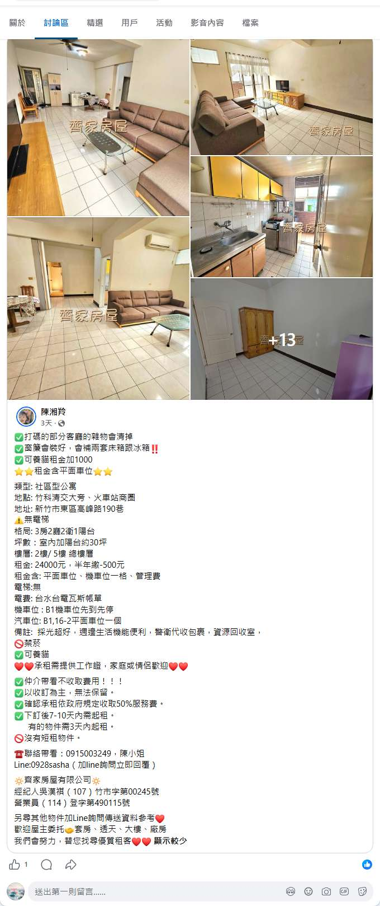 看原始刊登 → 查看貼文原文陳湘羚 14小時前 +13 陳湘羚 3天前 打碼的部分客廳的雜物會清掉 窗簾會裝好，會補兩套床箱跟冰箱 可養貓租金加1000 租金含平面車位 類型: 社區型公寓 地點: 竹科清交大旁、火車站商圈 地址: 新竹市東區高峰路190巷 無電梯 格局: 3房2廳2衛1陽台 坪數：室內加陽台約30坪 樓層: 2樓/ 5樓 總樓層 租金: 24000元，半年繳-500元 租金含: 平面車位、機車位一格、管理費 電梯:無 電費: 台水台電瓦斯帳單 機車位 : B1機車位先到先停 汽車位: B1,16-2平面車位一個 備註: 採光超好，週邊生活機能便利，警衛代收包裹，資源回收室， 禁菸 可養貓 承租需提供工作證，家庭或情侶歡迎 仲介帶看不收取費用！！！ 以收訂為主，無法保留。 確認承租依政府規定收取50%服務費。 下訂後7-10天內需起租。 有的物件需3天內起租。 沒有短租物件。 聯絡帶看：0915003249，陳小姐 Line:0928sasha（加line詢問立即回覆） 齊家房屋有限公司 經紀人吳漢祺（107）竹市字第00245號 營業員（114）登字第490115號 另尋其他物件加Line詢問傳送資料參考 歡迎屋主委托 套房、透天、大樓、廠房 我們會努力，替您找尋優質租客 顯示較少 送出第一則留言…… 貼文內有 1 個連結（已檢查）
| 1,000 價格異常HTTP 400 | 3房2廳2衛 完全符合 | 2F/5F | 無 | 無 | 有 | 未提及 | FB 貼文 |
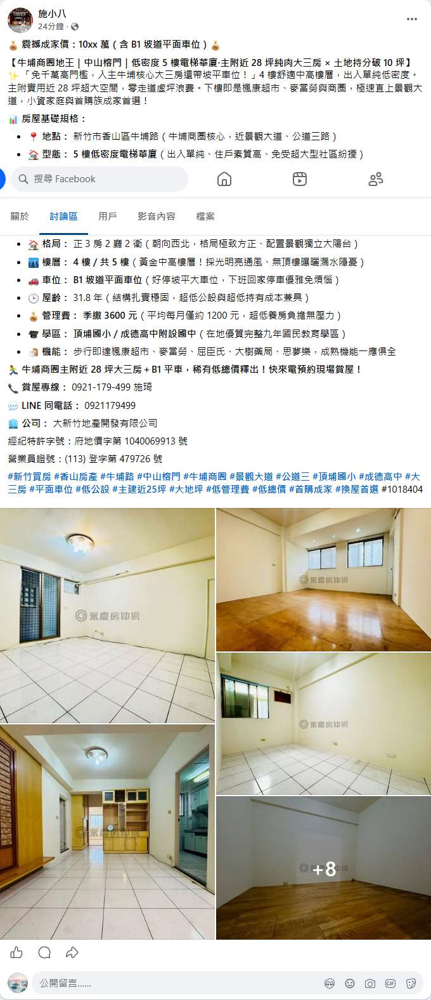 看原始刊登 → 查看貼文原文施小八 24分鐘前 震撼成家價：10xx 萬（含 B1 坡道平面車位） 【牛埔商圈地王｜中山榕門｜低密度 5 樓電梯華廈‧主附近 28 坪純肉大三房 × 土地持分破 10 坪】 「免千萬高門檻，入主牛埔核心大三房還帶坡平車位！」4 樓舒適中高樓層，出入單純低密度。主附實用近 28 坪超大空間，零走道虛坪浪費。下樓即是楓康超市、麥當勞與商圈，極速直上景觀大道，小資家庭與首購族成家首選！ 房屋基礎規格： 地點： 新竹市香山區牛埔路（牛埔商圈核心，近景觀大道、公道三路） 型態： 5 樓低密度電梯華廈（出入單純、住戶素質高、免受超大型社區紛擾） 價格： 10xx 萬（單價：單價含車位，市區帶平面車位大三房超殺破盤價） 空間： 總建 37.791 坪（主建物 24.738 坪，主＋附屬高達 27.969 坪寬敞純肉實坪） 坪效： 超低公設比！公設僅 9.822 坪！（高達 74% 實坪率，拒絕花錢買虛坪） 土地： 震撼神級超大地坪 10.008 坪！（市區寸土寸金超高土地持分，長線抗跌保值王牌） 格局： 正 3 房 2 廳 2 衛（朝向西北，格局極致方正、配置景觀獨立大陽台） 樓層： 4 樓 / 共 5 樓（黃金中高樓層！採光明亮通風、無頂樓曝曬漏水隱憂） 車位： B1 坡道平面車位（好停坡平大車位，下班回家停車優雅免煩惱） 屋齡： 31.8 年（結構扎實穩固，超低公設與超低持有成本兼具） 管理費： 季繳 3600 元（平均每月僅約 1200 元，超低養房負擔無壓力） 學區： 頂埔國小 / 成德高中附設國中（在地優質完整九年國民教育學區） 機能： 步行即達楓康超市、麥當勞、屈臣氏、大樹藥局、思夢樂，成熟機能一應俱全 牛埔商圈主附近 28 坪大三房＋B1 平車，稀有低總價釋出！快來電預約現場賞屋！ 賞屋專線： 0921-179-499 施琦 LINE 同電話： 0921179499 公司： 大新竹地產開發有限公司 經紀特許字號：府地價字第 1040069913 號 營業員證號：(113) 登字第 479726 號 #新竹買房 #香山房產 #牛埔路 #中山榕門 #牛埔商圈 #景觀大道 #公道三 #頂埔國小 #成德高中 #大三房 #平面車位 #低公設 #主建近25坪 #大地坪 #低管理費 #低總價 #首購成家 #換屋首選 #1018404 +8 公開留言…… 貼文內有 1 個連結（已檢查）
| 1,200 價格異常HTTP 400 | 3房—廳2衛 完全符合 | 5F | 未註明 | 有 | 有 | 未提及 | FB 貼文 |
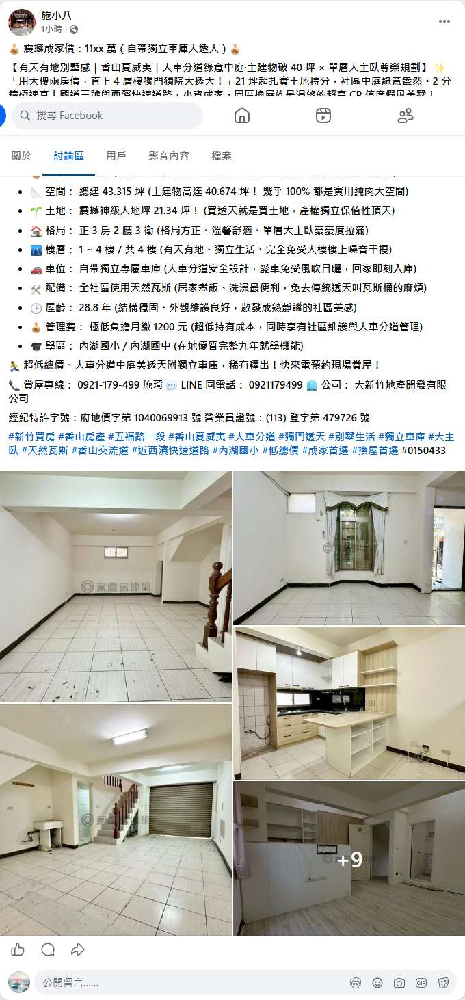 看原始刊登 → 查看貼文原文施小八 大約 1 小時前 震撼成家價：11xx 萬（自帶獨立車庫大透天） 【有天有地別墅感｜香山夏威夷｜人車分道綠意中庭‧主建物破 40 坪 × 單層大主臥尊榮規劃】 「用大樓兩房價，直上 4 層樓獨門獨院大透天！」21 坪超扎實土地持分，社區中庭綠意盎然。2 分鐘極速直上國道三號與西濱快速道路，小資成家、園區換屋族最渴望的超高 CP 值度假風美墅！ 房屋基礎規格： 地點： 新竹市香山區五福路一段 (香山夏威夷、縱貫路黃金軸線上) 型態： 人車分道透天別墅 (中庭開闊、綠意環繞、大人散步小孩奔跑極致安全) 價格： 11xx 萬 (單價：單價含車位，全竹市最震撼、大勝大樓鳥籠房的破盤價) 空間： 總建 43.315 坪 (主建物高達 40.674 坪！ 幾乎 100% 都是實用純肉大空間) 土地： 震撼神級大地坪 21.34 坪！ (買透天就是買土地，產權獨立保值性頂天) 格局： 正 3 房 2 廳 3 衛 (格局方正、溫馨舒適、單層大主臥豪豪度拉滿) 樓層： 1 ~ 4 樓 / 共 4 樓 (有天有地、獨立生活、完全免受大樓樓上噪音干擾) 車位： 自帶獨立專屬車庫 (人車分道安全設計，愛車免受風吹日曬，回家即刻入庫) 配備： 全社區使用天然瓦斯 (居家煮飯、洗澡最便利，免去傳統透天叫瓦斯桶的麻煩) 屋齡： 28.8 年 (結構穩固、外觀維護良好，散發成熟靜謐的社區美感) 管理費： 極低負擔月繳 1200 元 (超低持有成本，同時享有社區維護與人車分道管理) 學區： 內湖國小 / 內湖國中 (在地優質完整九年就學機能) 超低總價、人車分道中庭美透天附獨立車庫，稀有釋出！快來電預約現場賞屋！ 賞屋專線： 0921-179-499 施琦 LINE 同電話： 0921179499 公司： 大新竹地產開發有限公司 經紀特許字號：府地價字第 1040069913 號 營業員證號：(113) 登字第 479726 號 #新竹買房 #香山房產 #五福路一段 #香山夏威夷 #人車分道 #獨門透天 #別墅生活 #獨立車庫 #大主臥 #天然瓦斯 #香山交流道 #近西濱快速道路 #內湖國小 #低總價 #成家首選 #換屋首選 #0150433 +9 公開留言…… 貼文內有 1 個連結（已檢查）
| 1,200 價格異常HTTP 400 | 2房—廳3衛 差一點 | 4F | 未註明 | 未註明 | 有 | 未提及 | FB 貼文 |
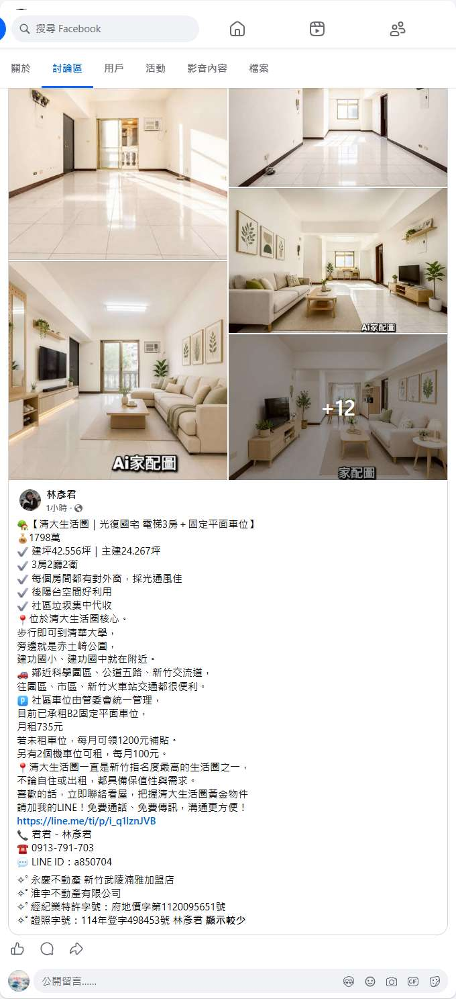 看原始刊登 → 查看貼文原文林彥君 大約 1 小時前 +12 林彥君 大約 1 小時前 【清大生活圈｜光復國宅 電梯3房＋固定平面車位】 1798萬 建坪42.556坪｜主建24.267坪 3房2廳2衛 每個房間都有對外窗，採光通風佳 後陽台空間好利用 社區垃圾集中代收 位於清大生活圈核心。 步行即可到清華大學， 旁邊就是赤土崎公園， 建功國小、建功國中就在附近。 鄰近科學園區、公道五路、新竹交流道， 往園區、市區、新竹火車站交通都很便利。 社區車位由管委會統一管理， 目前已承租B2固定平面車位， 月租735元 若未租車位，每月可領1200元補貼。 另有2個機車位可租，每月100元。 清大生活圈一直是新竹指名度最高的生活圈之一， 不論自住或出租，都具備保值性與需求。 喜歡的話，立即聯絡看屋，把握清大生活圈黃金物件 請加我的LINE！免費通話、免費傳訊，溝通更方便！ 君君－林彥君 0913-791-703 LINE ID：a850704 ✧˚ 永慶不動產 新竹武陵湳雅加盟店 ✧˚ 淮宇不動產有限公司 ✧˚ 經紀業特許字號：府地價字第1120095651號 ✧˚ 證照字號：114年登字498453號 林彥君 顯示較少 公開留言…… 貼文內有 2 個連結（已檢查）
| 1,200 價格異常HTTP 400 | 3房—廳2衛 完全符合 | — | 未註明 | 未註明 | 有 | 未提及 | FB 貼文 |
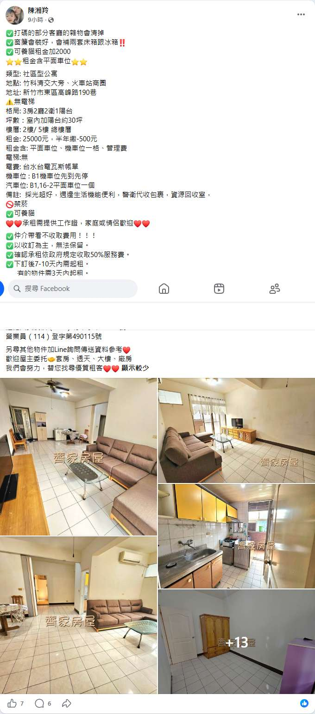 看原始刊登 → 查看貼文原文陳湘羚 9小時前 打碼的部分客廳的雜物會清掉 窗簾會裝好，會補兩套床箱跟冰箱 可養貓租金加2000 租金含平面車位 類型: 社區型公寓 地點: 竹科清交大旁、火車站商圈 地址: 新竹市東區高峰路190巷 無電梯 格局: 3房2廳2衛1陽台 坪數：室內加陽台約30坪 樓層: 2樓/ 5樓 總樓層 租金: 25000元，半年繳-500元 租金含: 平面車位、機車位一格、管理費 電梯:無 電費: 台水台電瓦斯帳單 機車位 : B1機車位先到先停 汽車位: B1,16-2平面車位一個 備註: 採光超好，週邊生活機能便利，警衛代收包裹，資源回收室， 禁菸 可養貓 承租需提供工作證，家庭或情侶歡迎 仲介帶看不收取費用！！！ 以收訂為主，無法保留。 確認承租依政府規定收取50%服務費。 下訂後7-10天內需起租。 有的物件需3天內起租。 沒有短租物件。 聯絡帶看：0915003249，陳小姐 Line:0928sasha（加line詢問立即回覆） 齊家房屋有限公司 經紀人吳漢祺（107）竹市字第00245號 營業員（114）登字第490115號 另尋其他物件加Line詢問傳送資料參考 歡迎屋主委托 套房、透天、大樓、廠房 我們會努力，替您找尋優質租客 顯示較少 +13 貼文內有 1 個連結（已檢查）
| 2,000 價格異常HTTP 400 | 3房2廳2衛 完全符合 | 2F/5F | 無 | 無 | 有 | 未提及 | FB 貼文 |
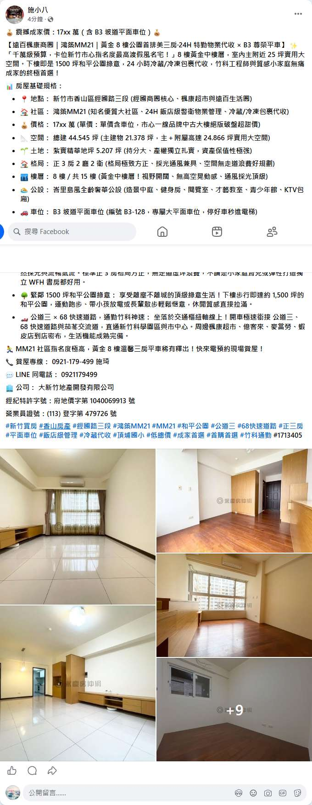 看原始刊登 → 查看貼文原文施小八 4分鐘前 震撼成家價：17xx 萬（含 B3 坡道平面車位） 【遠百楓康商圈｜鴻築MM21｜黃金 8 樓公園首排美三房‧24H 特勤物業代收 × B3 尊榮平車】 「千萬級預算，卡位新竹市心指名度最高渡假風名宅！」8 樓黃金中樓層，室內主附近 25 坪實用大空間。下樓即是 1500 坪和平公園綠意，24 小時冷藏/冷凍包裹代收，竹科工程師與質感小家庭無痛成家的終極首選！ 房屋基礎規格： 地點： 新竹市香山區經國路三段 (經國商圈核心、楓康超市與遠百生活圈) 社區： 鴻築MM21 (知名優質大社區、24H 飯店級警衛物業管理、冷藏/冷凍包裹代收) 價格： 17xx 萬 (單價：單價含車位，市心一線品牌中古大樓絕版破盤超甜價) 空間： 總建 44.545 坪 (主建物 21.378 坪，主＋附屬高達 24.866 坪實用大空間) 土地： 紮實精華地坪 5.207 坪 (持分大、產權獨立扎實，資產保值性極強) 格局： 正 3 房 2 廳 2 衛 (格局極致方正、採光通風兼具、空間無走道浪費好規劃) 樓層： 8 樓 / 共 15 樓 (黃金中樓層！視野開闊、無高空晃動感、通風採光頂級) 公設： 峇里島風全齡奢華公設 (造景中庭、健身房、閱覽室、才藝教室、青少年館、KTV包廂) 車位： B3 坡道平面車位 (編號 B3-128，專屬大平面車位，停好車秒進電梯) 屋齡： 13.2 年 (結構穩固最黃金精華屋齡，社區公設與管委會維護在最巔峰期) 管理費： 季繳 7002 元 (平均每月僅約 2334 元，享冷藏代收與飯店級設施，CP 值極高) 學區： 頂埔國小 / 成德高中附設國中 (在地優質完整九年就學機能) 高坪效正三房 × 黃金 8 樓頂級視野： 位於最受市場喜愛的 8 樓黃金中樓層，迎來充足的自然採光與流暢氣流。標準正 3 房格局方正，無走道虛坪浪費，不論是小家庭育兒或彈性打造獨立 WFH 書房都好用。 緊鄰 1500 坪和平公園綠意： 享受離塵不離城的頂級綠意生活！下樓步行即達約 1,500 坪的和平公園，運動跑步、帶小孩放電或長輩散步輕鬆惬意，休閒質感直接拉滿。 公道三 × 68 快速道路，通勤竹科神速： 坐落於交通樞紐軸線上！開車極速銜接 公道三、68 快速道路與茄苳交流道，直通新竹科學園區與市中心。周邊楓康超市、億客來、麥當勞、蝦皮店到店密布，生活機能成熟完備。 MM21 社區指名度極高，黃金 8 樓溫馨三房平車稀有釋出！快來電預約現場賞屋！ 賞屋專線： 0921-179-499 施琦 LINE 同電話： 0921179499 公司： 大新竹地產開發有限公司 經紀特許字號：府地價字第 1040069913 號 營業員證號：(113) 登字第 479726 號 #新竹買房 #香山房產 #經國路三段 #鴻築MM21 #MM21 #和平公園 #公道三 #68快速道路 #正三房 #平面車位 #飯店級管理 #冷藏代收 #頂埔國小 #低總價 #成家首選 #首購首選 #竹科通勤 #1713405 +9 公開留言…… 貼文內有 1 個連結（已檢查）
| 2,334 價格異常HTTP 400 | 3房—廳2衛 完全符合 | 8F | 未註明 | 未註明 | 有 | 未提及 | FB 貼文 |
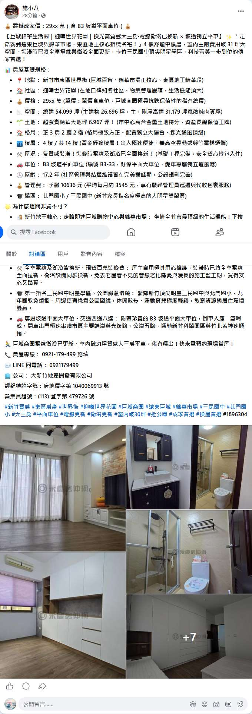 看原始刊登 → 查看貼文原文施小八 28分鐘前 震撼成家價：29xx 萬（含 B3 坡道平面車位） 【巨城錦華生活圈｜迎曦世界花園｜採光高質感大三房‧電線衛浴已換新 × 坡道獨立平車】 「走路就到遠東巨城與錦華市場，東區地王核心指標名宅！」4 樓舒適中樓層，室內主附實用破 31 坪大空間。裝潢時已將全室電線與衛浴全面更新，卡位三民國中頂尖明星學區，科技菁英一步到位的傳家首選！ 房屋基礎規格： 地點： 新竹市東區世界街 (巨城百貨、錦華市場正核心、東區地王精華段) 社區： 迎曦世界花園 (在地口碑知名社區、物業管理嚴謹、生活機能頂天) 價格： 29xx 萬 (單價：單價含車位，巨城商圈極具抗跌保值性的稀有總價) 空間： 總建 54.099 坪 (主建物 26.696 坪，主＋附屬高達 31.179 坪寬敞純肉實坪) 土地： 超紮實精華大地坪 6.967 坪！ (市中心高含金量土地持分，資產長線保值王牌) 格局： 正 3 房 2 廳 2 衛 (格局極致方正、配置獨立大陽台、採光通風頂級) 樓層： 4 樓 / 共 14 樓 (黃金舒適樓層！出入極速便捷、無高空晃動感與等電梯煩惱) 屋況： 帶質感裝潢！裝修時電線及衛浴已全面換新！ (基礎工程完備，安全省心拎包入住) 車位： B3 坡道平面車位 (編號 B3-33，好停平面大車位，愛車專屬獨立避風港) 屋齡： 17.2 年 (社區管理與結構維護皆在完美巔峰期，公設規劃完善) 管理費： 季繳 10636 元 (平均每月約 3545 元，享有嚴謹管理員巡邏與代收包裹服務) 學區： 北門國小 / 三民國中 (新竹家長指名度極高的大明星雙學區) 為什麼這間非買不可？ 新竹地王軸心：走路即達巨城購物中心與錦華市場： 坐擁全竹市最頂級的生活機能！下樓步行即可輕鬆採買錦華市場的新鮮食材，漫步直達遠東巨城購物中心。各式美食、國際影城、精品百貨與生活超市一應俱全，享受極致便利的市中心生活節奏。 室內主附破 31 坪「巨無霸大三房」： 比起市面上動輒衝破三千萬卻只有鳥籠空間的新大樓，本戶室內實用超過 31 坪！正大三房格局方正大氣，毫無走道虛坪浪費，三間臥室皆可從容擺放雙人床與大衣櫃，居住質感絲毫不壓迫。 全室電線及衛浴皆換新、現省百萬裝修費： 屋主自用極其用心維護，裝潢時已將全室電線全面拉新、衛浴設備同步換新。免去老屋看不見的管線老化隱憂與漫長的施工監工期，買得安心又踏實。 第一指名三民國中明星學區、公園綠意環繞： 緊鄰新竹頂尖明星三民國中與北門國小，九年國教免煩惱。周邊更有綠意公園圍繞，休閒散步、運動育兒極度輕鬆，教育資源與居住環境雙贏。 專屬坡道平面大車位、交通四通八達： 附帶珍貴的 B3 坡道平面大車位，倒車入庫一氣呵成。開車出門極速串聯市區主要幹道與光復路、公道五路，通勤新竹科學園區與竹北皆神速順暢。 巨城商圈電線衛浴已更新、室內破31坪質感大三房平車，稀有釋出！快來電預約現場賞屋！ 賞屋專線： 0921-179-499 施琦 LINE 同電話： 0921179499 公司： 大新竹地產開發有限公司 經紀特許字號：府地價字第 1040069913 號 營業員證號：(113) 登字第 479726 號 #新竹買房 #東區房產 #世界街 #迎曦世界花園 #巨城商圈 #遠東巨城 #錦華市場 #三民國中 #北門國小 #大三房 #平面車位 #電線更新 #衛浴更新 #室內破30坪 #近公園 #成家首選 #換屋首選 #1896304 +7 公開留言…… 貼文內有 1 個連結（已檢查）
| 3,545 價格異常HTTP 400 | 3房—廳2衛 完全符合 | 4F | 未註明 | 未註明 | 有 | 未提及 | FB 貼文 |
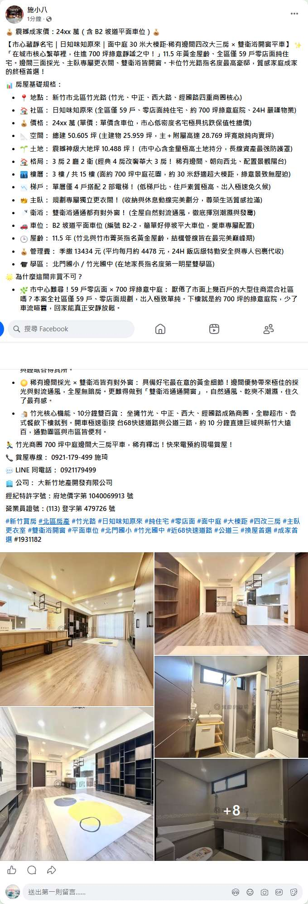 看原始刊登 → 查看貼文原文施小八 約 1 分鐘前 震撼成家價：24xx 萬（含 B2 坡道平面車位） 【市心藏靜名宅｜日知味知原來｜面中庭 30 米大棟距‧稀有邊間四改大三房 × 雙衛浴開窗平車】 「在城市核心繁華裡，住進 700 坪綠意靜謐之中！」11.5 年黃金屋齡、全區僅 59 戶零店面純住宅。邊間三面採光、主臥專屬更衣間、雙衛浴皆開窗。卡位竹光路指名度最高豪邸，質感家庭成家的終極首選！ 房屋基礎規格： 地點： 新竹市北區竹光路 (竹光、中正、西大路、經國路四重商圈核心) 社區： 日知味知原來 (全區僅 59 戶、零店面純住宅、約 700 坪綠意庭院、24H 嚴謹物業) 價格： 24xx 萬 (單價：單價含車位，市心低密度名宅極具抗跌保值性總價) 空間： 總建 50.605 坪 (主建物 25.959 坪，主＋附屬高達 28.769 坪寬敞純肉實坪) 土地： 震撼神級大地坪 10.488 坪！ (市中心含金量極高土地持分，長線資產最強防護罩) 格局： 3 房 2 廳 2 衛 (經典 4 房改奢華大 3 房！ 稀有邊間、朝向西北、配置景觀陽台) 樓層： 3 樓 / 共 15 樓 (面約 700 坪中庭花園，約 30 米舒適超大棟距，綠意景致無壓迫) 梯戶： 單層僅 4 戶搭配 2 部電梯！ (低梯戶比、住戶素質極高、出入極速免久候) 主臥： 規劃專屬獨立更衣間！ (收納與休息動線完美劃分，尊榮生活質感拉滿) 衛浴： 雙衛浴通通都有對外窗！ (全屋自然對流通風，徹底揮別潮濕與發霉) 車位： B2 坡道平面車位 (編號 B2-2，簡單好停坡平大車位，愛車專屬配置) 屋齡： 11.5 年 (竹北與竹市菁英指名黃金屋齡，結構管線皆在最完美巔峰期) 管理費： 季繳 13434 元 (平均每月約 4478 元，24H 飯店級特勤安全與專人包裹代收) 學區： 北門國小 / 竹光國中 (在地家長指名度第一明星雙學區) 為什麼這間非買不可？ 市中心難尋！59 戶零店面 × 700 坪綠意中庭： 厭倦了市面上幾百戶的大型住商混合社區嗎？本案全社區僅 59 戶、零店面規劃，出入極致單純。下樓就是約 700 坪的綠意庭院，少了車流喧囂，回家能真正安靜放鬆。 面中庭約 30 米無敵大棟距： 位於最舒適的 3 樓視野，窗外正對社區綠意盎然的大中庭。高達 30 米的超大棟距拉開了空間感，每天打開窗簾都是開闊無壓的綠景，享有絕佳的居家隱私。 四房改大三房 × 專屬主臥更衣室： 把坪數真正留給日常！將原本的四房精準微調為開闊大三房，客餐廳公領域大幅舒展，聚會宴客餘裕滿滿。主臥室更規劃了獨立更衣間，收納、更衣與睡眠各得其所。 稀有邊間採光 × 雙衛浴皆有對外窗： 具備好宅最在意的黃金細節！邊間優勢帶來極佳的採光與對流通風，全屋無暗房。更難得做到「雙衛浴通通開窗」，自然通風、乾爽不潮濕，住久了最有感。 竹光核心機能、10分鐘雙百貨： 坐擁竹光、中正、西大、經國路成熟商圈，全聯超市、各式餐飲下樓就到。開車極速銜接 台68快速道路與公道三路，約 10 分鐘直達巨城與新竹大遠百，通勤園區與市區皆便利。 竹光商圈 700 坪中庭邊間大三房平車，稀有釋出！快來電預約現場賞屋！ 賞屋專線： 0921-179-499 施琦 LINE 同電話： 0921179499 公司： 大新竹地產開發有限公司 經紀特許字號：府地價字第 1040069913 號 營業員證號：(113) 登字第 479726 號 #新竹買房 #北區房產 #竹光路 #日知味知原來 #純住宅 #零店面 #面中庭 #大棟距 #四改三房 #主臥更衣室 #雙衛浴開窗 #平面車位 #北門國小 #竹光國中 #近68快速道路 #公道三 #換屋首選 #成家首選 #1931182 +8 送出第一則留言…… 貼文內有 1 個連結（已檢查）
| 4,478 價格異常HTTP 400 | 3房—廳2衛 完全符合 | 3F | 未註明 | 未註明 | 有 | 未提及 | FB 貼文 |
| 6,000 價格異常 | 3房2廳2衛 完全符合 | 10F/12F | 未註明 | 有 | 未註明 | 未提及 | 屋主 張先生 | |
| 6,500 價格異常 | 3房2廳2衛 完全符合 | 1F~3F/3F | 無 | 無 | 有 | 未提及 | 屋主 何女士 | |
| 12,000 | 3房2廳1衛 差一點 | 6F/7F | 未註明 | 無 | 未註明 | 未提及 | 仲介 傅先生 · 大新竹地產開發有限公司 | |
| 12,000 | 3房2廳2衛 完全符合 | 4/5樓 | 未註明 | 未註明 | 未註明 | 未提及 | 此物件未公開電話，請點標題到原網站聯絡 | |
 看原始刊登 → 同一物件另有 2 筆刊登（不同仲介）
| 13,000 | 3房2廳2衛 完全符合 | 3F/3F | 無 | 無 | 無 | 未提及 | 屋主 洪先生 |
 | 13,000 | 3房2廳2衛 完全符合 | 3F/4F | 無 | 無 | 未註明 | 未提及 | 仲介 陳小姐 · 上等不動產 |
 看原始刊登 → 同一物件另有 3 筆刊登（不同仲介）
| 13,000 | 3房2廳2衛 完全符合 | 3 / 4 | 無 | 有 | 未註明 | 未提及 | |
| 13,000 | 4房2廳3衛 超規格 | 1~2/2樓 | 未註明 | 未註明 | 未註明 | 未提及 | 此物件未公開電話，請點標題到原網站聯絡 | |
看原始刊登 → 查看貼文原文陳小瓊 1 天前 +3 【上等不動產】租賃／買賣／管理 2天前 港南重劃區旁三樓公寓付基本家具家電 #本物件不須先付訂金押金才可看屋!! #禁養寵物 【型式】:公寓三樓 【地點】:延平路三段 【坪數】:20坪 【格局】:3房2廳1.5衛 【租金】:13000 老舊住宅區近南寮南港重劃區 ★歡迎預約看屋★ ★免費帶您看屋★ ★歡迎屋主託租★ 新竹市房仲字第0157號 ~租屋請找合法仲介~『上等不動產』 專線請洽 陳小姐03-5312135 0925320339 顯示較少 公開留言…… 貼文內有 1 個連結（已檢查）
| 13,000 | 3房2廳5衛 超規格 | — | 未註明 | 未註明 | 未註明 | 未提及 | FB 貼文 |
| 13,000 已下架(404) | 3房2廳3衛 超規格 | 1F~2F/2F | 未註明 | 無 | 未註明 | 未提及 | 仲介 陳先生 · 棠朝不動產經紀有限公司 | |
| 13,000 已下架(404) | 2房—廳5衛 差一點 | 2F/5F | 未註明 | 無 | 未註明 | 未提及 | 代理人 張先生 | |
| 15,000 | 3房2廳2衛 完全符合 | 5F/11F | 租金已含 | 有 | 無 | 不可 | 屋主 林先生 | |
| 15,000 | 4房4廳4衛 超規格 | 2F/3F | 未註明 | 無 | 未註明 | 未提及 | 仲介 陳先生 · 台勝不動產仲介公司 | |
| 15,000 | 3房2廳2衛 完全符合 | 3/5樓 | 未註明 | 無 | 有 | 未提及 | ||
| 15,000 已下架(404) | 3房1廳2衛 差一點 | 2F/7F | 1,200元/月 | 有 | 未註明 | 未提及 | 仲介 吳先生 · 沁淇股份有限公司 | |
| 15,000 已下架(404) | 4房2廳1衛 差一點 | 2F/4F | 未註明 | 無 | 有 | 未提及 | 仲介 江先生 · 陞寶開發有限公司 | |
| 15,000 已下架(404) | 3房2廳1衛 差一點 | 5F/5F | 無 | 無 | 未註明 | 未提及 | 仲介 kelly · 勁富不動產 | |
| 15,000 已下架 | 3房2廳2衛 完全符合 | 3 / 5 | 無 | 有 | 有 | 未提及 | ||
| 16,000 | 3房1廳2衛 差一點 | 9F/11F | 租金已含 | 有 | 無 | 不可 | 仲介 周先生 · 興龍不動產有限公司 | |
| 16,000 已下架(404) | 3房2廳2衛 完全符合 | 5F/5F | 無 | 無 | 未註明 | 不可 | 仲介 李小姐 · 大管家租賃住宅代管有限公司 | |
| 16,000 已下架(404) | 4房2廳2衛 超規格 | 2F/5F | 無 | 無 | 未註明 | 未提及 | 仲介 曾小姐 · 城毅不動產經紀有限公司 | |
| 16,000 已下架(404) | 2房2廳2衛 差一點 | 8F/11F | 租金已含 | 有 | 未註明 | 未提及 | 仲介 黃小姐 · 新築不動產開發有限公司 | |
| 17,000 已下架(404) | 3房2廳2衛 完全符合 | 5F/11F | 租金已含 | 有 | 無 | 不可 | 屋主 林先生 | |
| 18,000 | 3房2廳2衛 完全符合 | 7F/12F | 1,305元/月 | 有 | 未註明 | 不可 | 仲介 楊小姐 · 大管家租賃住宅代管有限公司 | |
| 18,000 | 3房2廳2衛 完全符合 | 5F/5F | 無 | 無 | 未註明 | 未提及 | 仲介 朱先生 · 大管家租賃住宅代管有限公司 | |
| 18,000 | 4房1廳2衛 差一點 | 1 / 3 | 無 | 未註明 | 有 | 未提及 | ||
| 18,000 | 3房2廳2衛 完全符合 | 4/5樓 | 未註明 | 未註明 | 有 | 不可 | ||
| 18,000 已下架(404) | 3房2廳2衛 完全符合 | 10F/11F | 800元/月 | 有 | 無 | 未提及 | 仲介 賴小姐 · 仕承國際不動產有限公司 | |
| 18,000 已下架(404) | 3房2廳2衛 完全符合 | 8F/10F | 2,358元/月 | 有 | 未註明 | 有提及(需確認) | 仲介 黃先生 · 全球不動產經紀有限公司 | |
| 18,000 已下架(404) | 3房3廳2衛 超規格 | 1F/7F | 無 | 無 | 無 | 不可 | 屋主 何先生 | |
| 18,000 已下架(404) | 4房2廳2衛 超規格 | 整棟/3F | 無 | 無 | 有 | 未提及 | 仲介 江先生 · 陞寶開發有限公司 | |
| 18,000 已下架(404) | 3房2廳2衛 完全符合 | 5F/6F | 租金已含 | 有 | 未註明 | 未提及 | 仲介 葉先生 · 聚鑫企業社好市家房屋 | |
| 18,000 已下架(404) | 3房2廳2衛 完全符合 | 4F/5F | 未註明 | 無 | 未註明 | 不可 | 仲介 陳先生 · 聯合房屋 | |
| 18,000 已下架(404) | 3房2廳2衛 完全符合 | 4F/5F | 無 | 無 | 未註明 | 未提及 | 仲介 彭先生 · 全球不動產經紀有限公司 | |
| 18,000 已下架(404) | 3房2廳3衛 超規格 | 3F/3F | 無 | 無 | 未註明 | 未提及 | 仲介 周先生 · 興龍不動產有限公司 | |
| 18,000 已下架(404) | 3房2廳1衛 差一點 | 2F/5F | 100元/月 | 無 | 未註明 | 未提及 | 仲介 彭曉凡 · 浩宇地產有限公司 | |
| 18,000 已下架(404) | 3房2廳1衛 差一點 | 4F/5F | 未註明 | 無 | 未註明 | 未提及 | 仲介 楊先生 · 全球不動產經紀有限公司 | |
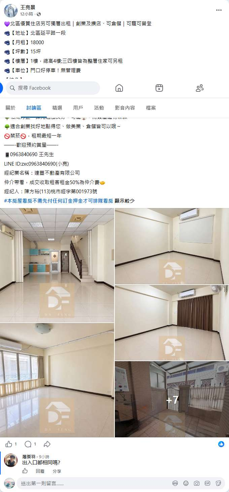 看原始刊登 → 查看貼文原文王亮景 北區優質住店另可獨層出租｜創業及擴店、可倉儲｜可寵可營登 【地址】北區延平路一段 【月租】18000 【坪數】15坪 【樓層】1樓，總高4樓;三四樓皆為整層住家可另租 【車位】門口好停車！無管理費 【特色】 方案一:單租一樓店面$18000，方案二:3-4樓三房一衛一陽台$14000。全租$26000 住店真的划算又放心！甜甜價 另二樓是屋主自己開的日文教室，小朋友有興趣也可以報名 格局方正、採光通風良好，可寵 ，需簽屬寵物條款 適合創業找好地點得您、做美業、倉儲皆可以哦～ 禁菸 ，租期最短一年 ——-歡迎預約賞屋——- 0963840690 王先生 LINE ID:zxc0963840690(小亮) 經紀業名稱：達豐不動產有限公司 仲介帶看，成交收取租客租金50%為仲介費 經紀人：陳方裕(113)桃市經字第001973號 #本房屋看房不需先付任何訂金押金才可排隊看房 顯示較少 +7 屠崇羽 出入口都相同嗎？ 回覆 送出第一則留言…… 貼文內有 1 個連結（已檢查）
| 18,000 HTTP 400 | 3房—廳1衛 差一點 | 1F | 未註明 | 未註明 | 未註明 | 未提及 | FB 貼文 |
| 19,000 已下架(404) | 3房2廳2衛 完全符合 | 1F/5F | 無 | 無 | 無 | 未提及 | 仲介 徐先生 · 仲介公司 | |
| 19,500 已下架(404) | 3房2廳2衛 完全符合 | 7F/12F | 1,305元/月 | 有 | 未註明 | 不可 | 仲介 楊小姐 · 大管家租賃住宅代管有限公司 | |
| 19,600 | 3房2廳2衛 完全符合 | 5F/5F | 未註明 | 無 | 未註明 | 不可 | 屋主 廖先生 | |
| 19,999 已下架(404) | 3房2廳2衛 完全符合 | 4F/14F | 租金已含 | 有 | 有 | 未提及 | 仲介 黃小姐 · 臻愛房屋 | |
| 20,000 | 3房2廳2衛 完全符合 | 4F/5F | 300元/月 | 無 | 有 | 不可 | 仲介 姜先生 · 展懿不動產經紀有限公司 | |
| 20,000 | 3房2廳2衛 完全符合 | 9F/10F | 2,537元/月 | 有 | 未註明 | 不可 | 仲介 王先生 · 兆基屋管股份有限公司 | |
| 20,000 | 4房2廳3衛 超規格 | 1F~3F/3F | 無 | 無 | 未註明 | 不可 | 仲介 陳小姐 · 永久仲介經紀事業有限公司 | |
 看原始刊登 → 同一物件另有 3 筆刊登（不同仲介）
| 20,000 | 3房2廳1衛 差一點 | 4F/4F | 無 | 無 | 未註明 | 未提及 | 仲介 邱先生 · 景裕地產事業有限公司 |
| 20,000 | 3房2廳2衛 完全符合 | 5F/5F | 無 | 無 | 未註明 | 未提及 | 仲介 蔡先生 · 忻居不動產仲介事業有限公司 | |
| 20,000 | 6房—廳3衛 超規格 | 2~4/4樓 | 未註明 | 未註明 | 未註明 | 未提及 | 此物件未公開電話，請點標題到原網站聯絡 | |
| 20,000 已下架(404) | 3房2廳2衛 完全符合 | 4F/6F | 2,500元/月 | 有 | 有 | 未提及 | 仲介 張先生-新竹租屋公司 · 新竹房屋仲介 | |
| 20,000 已下架(404) | 3房2廳2衛 完全符合 | 7F/12F | 480元/月 | 有 | 未註明 | 不可 | 仲介 王先生 · 兆基屋管股份有限公司 | |
| 20,000 已下架(404) | 3房2廳2衛 完全符合 | 3F/5F | 1,200元/月 | 無 | 有 | 未提及 | 仲介 林先生 · 科園房屋 | |
| 20,000 已下架(404) | 3房2廳2衛 完全符合 | 8F/10F | 2,358元/月 | 有 | 未註明 | 有提及(需確認) | 仲介 黃先生 · 全球不動產經紀有限公司 | |
| 20,000 已下架(404) | 3房2廳2衛 完全符合 | 4F/5F | 未註明 | 無 | 有 | 未提及 | 仲介 陳先生 · 大管家房屋管理家樂仲介有限公司 | |
| 20,000 已下架(404) | 3房2廳1衛 差一點 | 2F/5F | 未註明 | 無 | 未註明 | 未提及 | 仲介 徐小姐 · 日茪寓房屋有限公司 | |
| 20,000 已下架(404) | 2房2廳2衛 差一點 | 1F~2F/2F | 未註明 | 無 | 有 | 未提及 | 仲介 梁先生 · 千宅不動產經紀公司 | |
| 20,000 已下架(404) | 3房2廳2衛 完全符合 | 2F/5F | 無 | 無 | 未註明 | 未提及 | 仲介 陳捷宥 · 包租代管租賃買賣 | |
| 20,000 已下架(404) | 3房2廳2衛 完全符合 | 整棟/2F | 未註明 | 無 | 未註明 | 未提及 | 仲介 吳小姐 · 千宅不動產經紀有限公司 | |
| 20,000 已下架(404) | 3房2廳2衛 完全符合 | 6F/7F | 租金已含 | 無 | 未註明 | 未提及 | 屋主 劉小姐 | |
| 20,000 已下架(404) | 3房2廳1衛 差一點 | 1F/5F | 未註明 | 無 | 未註明 | 未提及 | 仲介 鄭先生 · 言昇築不動產仲介有限公司 | |
| 20,000 已下架(404) | 4房1廳2衛 差一點 | 2F/4F | 未註明 | 無 | 未註明 | 未提及 | 仲介 莊小姐 · 勁富不動產 | |
| 20,000 已下架(404) | 3房—廳3衛 超規格 | 3F/5F | 未註明 | 無 | 未註明 | 未提及 | 仲介 徐先生 · 臻愛房屋企業社 | |
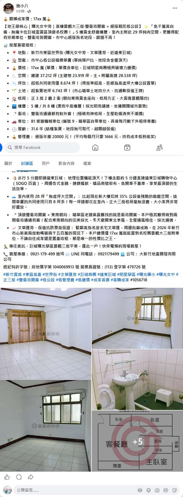 看原始刊登 → 查看貼文原文施小八 大約 1 小時前 震撼成家價：17xx 萬 【地王級核心｜曙光女中旁｜高樓景觀大三房‧雙衛浴開窗 × 絕版親民低公設】 「免千萬高自備，無痛卡位巨城蛋黃區頂級名校圈！」5 樓黃金舒適樓層，室內主附近 29 坪純肉空間，更難得配有珍稀車位、雙衛浴皆開窗。市中心絕版指名地段，錯過不再！ 房屋基礎規格： 地點： 新竹市東區世界街 (曙光女中旁、文華匯旁、近遠東巨城) 型態： 市中心低公設精緻華廈 (單純梯戶比、地段含金量頂天) 價格： 17xx 萬 (單價：單價含車位，巨城明星商圈極具破壞力總價) 空間： 總建 37.212 坪 (主建物 23.919 坪，主＋附屬高達 28.538 坪) 坪效： 超低共同使用僅 8.674 坪！ (得房率超高，拒絕為高虛坪大樓公設買單) 土地： 超紮實地坪 6.743 坪！ (市心精華土地持分大，抗通膨保值王牌) 格局： 正 3 房 2 廳 2 衛 (朝向東南黃金座向、格局方正、大面寬景觀陽台) 樓層： 5 樓 / 共 8 樓 (漂亮中高樓層！採光明亮通透、坐擁開闊城市景致) 衛浴： 雙衛浴通通都有對外窗！ (極稀有神格局，全屋乾燥清爽不潮濕) 車位： B1 坡道機械車位 (編號 9，精華區自帶車位，再省每月數千外租停車費) 屋齡： 31.6 年 (結構紮實，地段無可取代，越開越保值) 管理費： 絕版年繳 20000 元！ (平均每個月只要 1666 元，持有成本低到偷笑) 學區： 曙光國小 / 曙光女中附設國中 (新竹頂尖私校明星學區一條龍) 為什麼這間非買不可？ 名校首排、孩子教育不用等： 坐落於新竹最知名的明星私校核心，曙光國小、曙光國中到曙光高中通通走路上學就到！ 家長不用再忍受早晚校門口水洩不通的塞車地獄，讓孩子每天多睡半小時。 步行 5 分鐘即達遠東巨城： 地理位置機能頂天！下樓走路約 5 分鐘直達遠東巨城購物中心（SOGO 百貨）。周邊各式金融、連鎖餐飲、精品商號密布，免開車不塞車，享受最頂級的生活效率。 室內使用 28 坪「無虛坪大空間」： 比起現在新大樓扣掉 35% 公設後殘酷的鳥籠空間，這間華廈的共同使用只有 8 坪多！每一坪錢都花在室內，正大三房格局毫無浪費，大小家具非常好擺放。 頂級雙衛浴開窗 × 東南朝向： 精華區老建案最難找的就是衛浴開窗。本戶極其難得做到兩間衛浴通通有窗！配合東南朝向的完美採光，冬天避開東北季風，全屋通風極佳、採光通透。 文華匯旁、保值抗跌票房保證： 緊鄰高指名度名宅文華匯，周邊街廓成熟。在 2026 年新竹市心新案兩房動輒破兩千五百萬的現況下，本戶總價僅 17xx 萬就能買到名校圈景觀大三房附車位，不論自住成家還是置產收租，都是唯一的性價比之王。 專任委託，巨城曙光學區景觀三房平車，僅此一戶！快來電預約現場賞屋！ 賞屋專線： 0921-179-499 施琦 LINE 同電話： 0921179499 公司： 大新竹地產開發有限公司 經紀特許字號：府地價字第 1040069913 號 營業員證號：(113) 登字第 479726 號 #新竹買房 #東區房產 #世界街 #文華匯旁 #巨城商圈 #遠東巨城 #明星學區 #曙光國小 #曙光女中 #正三房 #雙衛浴開窗 #低公設 #低管理費 #低總價 #成家首選 #首購成家 #1056718 +5 公開留言…… 貼文內有 1 個連結（已檢查）
| 20,000 HTTP 400 | 3房—廳2衛 完全符合 | 5F | 未註明 | 未註明 | 有 | 未提及 | FB 貼文 |
| 20,000 已下架(404) | 3房2廳1衛 差一點 | 2F/4F | 未註明 | 無 | 未註明 | 未提及 | 代理人 呂小姐 | |
| 21,000 | 3房2廳2衛 完全符合 | 5F/5F | 無 | 無 | 有 | 未提及 | 屋主 何小姐 | |
| 21,000 | 3房—廳3衛 超規格 | 3F/4F | 無 | 有 | 未註明 | 未提及 | 仲介 温先生 · 大管家租賃住宅代管有限公司 | |
| 21,000 | 2房1廳2衛 不符 | 3F/4F | 租金已含 | 無 | 未註明 | 未提及 | 屋主 吳先生 | |
| 21,000 | 3房2廳2衛 完全符合 | 12/14樓 | 未註明 | 有 | 未註明 | 未提及 | 此物件未公開電話，請點標題到原網站聯絡 | |
| 21,000 已下架(404) | 3房2廳1衛 差一點 | 3F/4F | 無 | 無 | 未註明 | 未提及 | 仲介 鄧先生 · 大管家租屋 | |
| 21,000 已下架(404) | 3房2廳2衛 完全符合 | 2F/5F | 未註明 | 有 | 有 | 未提及 | 仲介 楊小姐 · 大管家租賃住宅代管有限公司 | |
| 21,000 已下架(404) | 4房2廳1衛 差一點 | 頂層加蓋/5F | 租金已含 | 有 | 未註明 | 未提及 | 仲介 鄭小姐 · 大管家租賃住宅代管有限公司 | |
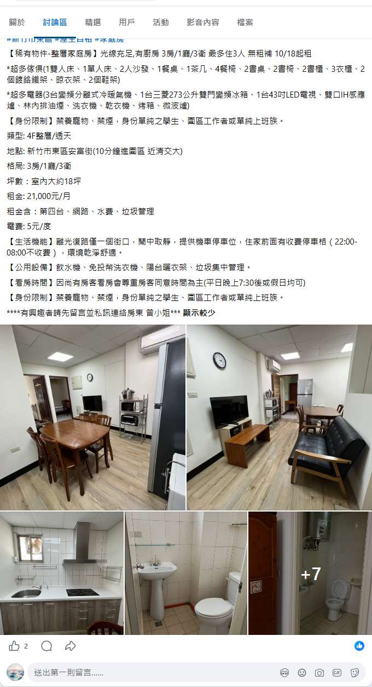 看原始刊登 → 查看貼文原文Jessica Tseng 27分鐘前 #新竹市東區 #屋主自租 #家庭房 【稀有物件-整層家庭房】光線充足,有廚房 3房/1廳/3衛 最多住3人 無租補 10/18起租 *超多傢俱(1雙人床、1單人床、2人沙發、1餐桌、1茶几、4餐椅、2書桌、2書椅、2書櫃、3衣櫃、2個鍍鉻鐵架、晾衣架、2個鞋架) *超多電器(3台變頻分離式冷暖氣機、1台三菱273公升雙門變頻冰箱、1台43吋LED電視、雙口IH感應爐、林內排油煙、洗衣機、乾衣機、烤箱、微波爐) 【身份限制】禁養寵物、禁煙，身份單純之學生、園區工作者或單純上班族。 類型: 4F整層/透天 地點: 新竹市東區安富街(10分鐘進園區 近清交大) 格局: 3房/1廳/3衛 坪數：室內大約18坪 租金: 21,000元/月 租金含：第四台、網路、水費、垃圾管理 電費: 5元/度 【生活機能】離光復路僅一個街口，鬧中取靜，提供機車停車位，住家前面有收費停車格（22:00-08:00不收費），環境乾淨舒適。 【公用設備】飲水機、免投幣洗衣機、陽台曬衣架、垃圾集中管理。 【看房時間】因尚有房客看房會尊重房客同意時間為主(平日晚上7:30後或假日均可) 【身份限制】禁養寵物、禁煙，身份單純之學生、園區工作者或單純上班族。 ****有興趣者請先留言並私訊連絡房東 曾小姐*** 顯示較少 +7 送出第一則留言…… 貼文內有 1 個連結（已檢查）
| 21,000 HTTP 400 | 3房—廳3衛 超規格 | — | 未註明 | 未註明 | 未註明 | 未提及 | FB 貼文 此物件未公開電話，請點標題到原網站聯絡 |
| 22,000 | 4房2廳2衛 超規格 | 6F/6F | 租金已含 | 有 | 未註明 | 不可 | 仲介 張先生-新竹租屋公司 · 新竹房屋仲介 | |
 | 22,000 | 4房1廳2衛 差一點 | 2F/11F | 1,200元/月 | 有 | 有 | 未提及 | 仲介 楊先生 · 偉鈞不動產仲介經紀有限公司 |
| 22,000 | 2房2廳2衛 差一點 | 6F/6F | 1,500元/月 | 有 | 有 | 未提及 | 仲介 姜先生 · 不動產有限公司 | |
| 22,000 | 2房2廳2衛 差一點 | 6F/6F | 1,500元/月 | 有 | 有 | 未提及 | 仲介 陳小姐 · 朕瑋不動產 | |
| 22,000 | 2房1廳2衛 不符 | 8F/8F | 租金已含 | 有 | 有 | 未提及 | 仲介 徐小姐 · 日茪寓房屋有限公司 | |
| 22,000 | 3房2廳2衛 完全符合 | 10F/12F | 租金已含 | 有 | 未註明 | 未提及 | 屋主 李小姐 | |
 | 22,000 | 3房—廳1衛 差一點 | 2F/3F | 未註明 | 無 | 未註明 | 未提及 | 仲介 駱先生-新竹租屋公司 · 新竹房屋仲介 |
| 22,000 | 4房2廳2衛 超規格 | 4F/4F | 未註明 | 無 | 未註明 | 未提及 | 仲介 吳小姐 · 大管家租賃住宅代管有限公司 | |
| 22,000 | 2房2廳2衛 差一點 | 6 / 6 | 另計(金額未公開) | 有 | 有 | 未提及 | ||
| 22,000 | 3房2廳2衛 完全符合 | 2/5樓 | 未註明 | 未註明 | 未註明 | 未提及 | 此物件未公開電話，請點標題到原網站聯絡 | |
| 22,000 已下架(404) | 3房2廳2衛 完全符合 | 6F/8F | 1,200元/月 | 有 | 未註明 | 不可 | 仲介 許先生 · 兆基屋管股份有限公司 | |
| 22,000 已下架(404) | 3房2廳2衛 完全符合 | 2F/11F | 租金已含 | 無 | 有 | 未提及 | 仲介 葉先生 · 聚鑫企業社好市家房屋 | |
| 22,000 已下架(404) | 3房2廳2衛 完全符合 | 2F/5F | 1,000元/月 | 無 | 有 | 未提及 | 仲介 蘇小姐 · 齊家房屋有限公司 | |
| 22,000 已下架(404) | 3房2廳2衛 完全符合 | 2F/5F | 1,000元/月 | 無 | 有 | 未提及 | 仲介 曾小姐 · 齊家房屋有限公司 | |
| 22,000 已下架(404) | 5房2廳3衛 超規格 | 整棟/3F | 無 | 無 | 有 | 未提及 | 仲介 吳先生 · 家樂仲介有限公司 | |
| 22,000 已下架(404) | 3房1廳2衛 差一點 | 4F/6F | 租金已含 | 有 | 有 | 未提及 | 仲介 韋小姐 · 新堯企業社 | |
| 22,000 已下架(404) | 2房1廳2衛 不符 | 2F/5F | 租金已含 | 有 | 有 | 未提及 | 仲介 藍先生 · 昇玖專業不動產仲介經紀有限公司 | |
| 22,000 已下架(404) | 3房2廳2衛 完全符合 | 7F/7F | 租金已含 | 有 | 有 | 未提及 | 仲介 宋先生 · 大管家租賃住宅代管有限公司 | |
| 22,000 已下架(404) | 3房2廳2衛 完全符合 | 3F/8F | 租金已含 | 有 | 未註明 | 未提及 | 仲介 藍先生 · 昇玖專業不動產仲介經紀有限公司 | |
| 22,000 已下架(404) | 3房2廳2衛 完全符合 | 2F/5F | 租金已含 | 有 | 未註明 | 未提及 | 仲介 林先生 · 仲介公司 | |
| 22,000 已下架(404) | 3房1廳2衛 差一點 | 1F/5F | 無 | 無 | 有 | 未提及 | 屋主 張小姐 | |
| 22,000 已下架(404) | 3房2廳2衛 完全符合 | 4F/5F | 無 | 無 | 未註明 | 未提及 | 屋主 鄭小姐 | |
| 22,000 已下架(404) | 3房2廳1衛 差一點 | 2F/5F | 未註明 | 無 | 未註明 | 未提及 | 仲介 陳先生 · 不動產經紀營業員 | |
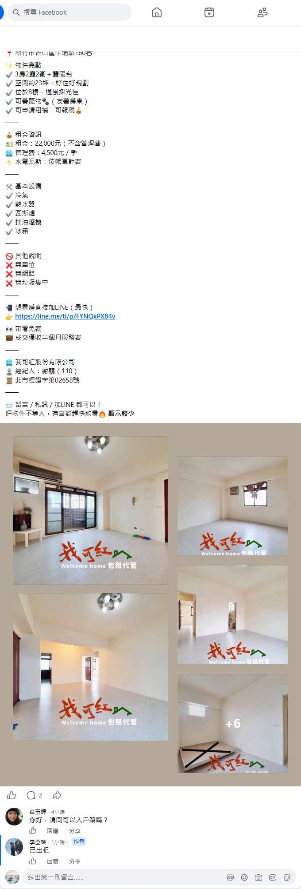 看原始刊登 → 查看貼文原文李亞玲 【新竹香山｜可寵3房｜可租補】 龍群世家整層出租｜稀有釋出！ 新竹市香山區牛埔路160巷 物件亮點 3房2廳2衛＋雙陽台 空間約23坪，好住好規劃 位於8樓，通風採光佳 可養寵物 （友善房東） 可申請租補、可報稅 ⸻ 租金資訊 租金：22,000元（不含管理費） 管理費：4,500元 / 季 水電瓦斯：依帳單計費 ⸻ 基本設備 冷氣 熱水器 瓦斯爐 抽油煙機 冰箱 ⸻ 其他說明 無車位 無網路 無垃圾集中 ⸻ 想看房直接加LINE（最快） 帶看免費 成交僅收半個月服務費 ⸻ 我可紅股份有限公司 經紀人：謝競（110） 北市經證字第02658號 ⸻ 留言 / 私訊 / 加LINE 都可以！ 好物件不等人，有喜歡趕快約看 顯示較少 +6 章玉婷 你好，請問可以入戶籍嗎？ 回覆 李亞玲 作者 已出租 回覆 送出第一則留言…… 貼文內有 2 個連結（已檢查）
| 22,000 HTTP 400 | 3房—廳2衛 完全符合 | 8F | 4500元 | 未註明 | 無 | 未提及 | FB 貼文 此物件未公開電話，請點標題到原網站聯絡 |
 | 22,500 | 3房—廳3衛 超規格 | 4F/4F | 未註明 | 無 | 未註明 | 未提及 | 仲介 駱先生-新竹租屋公司 · 新竹房屋仲介 |
| 22,500 已下架(404) | 3房2廳2衛 完全符合 | 4F/12F | 1,500元/月 | 有 | 未註明 | 不可 | 仲介 楊小姐 · 大管家租賃住宅代管有限公司 | |
| 22,999 已下架(404) | 3房2廳2衛 完全符合 | 5F/10F | 1,500元/月 | 有 | 未註明 | 未提及 | 仲介 黃小姐 · 臻愛房屋 | |
 看原始刊登 → 同一物件另有 5 筆刊登（不同仲介）
| 23,000 | 3房2廳2衛 完全符合 | 8F/8F | 2,480元/月 | 有 | 有 | 未提及 | 仲介 曾先生 · 家樂仲介有限公司 |
| 23,000 | 3房2廳2衛 完全符合 | 1F/5F | 1,500元/月 | 無 | 有 | 不可 | 屋主 彭先生 | |
| 23,000 | 2房2廳2衛 差一點 | 3F/5F | 500元/月 | 有 | 有 | 未提及 | 仲介 鄭小姐 · 代出租找屋 | |
| 23,000 | 2房1廳2衛 不符 | 11F/11F | 1,400元/月 | 有 | 未註明 | 未提及 | 仲介 陳小姐 · 家樂仲介有限公司 | |
| 23,000 | 3房2廳2衛 完全符合 | 5F/8F | 租金已含 | 有 | 未註明 | 未提及 | 屋主 吳小姐 | |
| 23,000 | 2房2廳2衛 差一點 | 整棟/2F | 未註明 | 無 | 未註明 | 未提及 | 仲介 曾先生 · 家樂仲介有限公司 | |
 | 23,000 | 3房2廳1衛 差一點 | 4F/4F | 無 | 無 | 未註明 | 未提及 | 代理人 楊小姐 |
| 23,000 | 3房1廳2衛 差一點 | 5F/5F | 無 | 無 | 未註明 | 未提及 | 代理人 柯小姐 | |
| 23,000 | 3房2廳2衛 完全符合 | 9/9樓 | 未註明 | 有 | 未註明 | 未提及 | ||
| 23,000 | 3房2廳2衛 完全符合 | 3/7樓 | 未註明 | 未註明 | 未註明 | 未提及 | 此物件未公開電話，請點標題到原網站聯絡 | |
| 23,000 已下架(404) | 3房2廳2衛 完全符合 | 8F/8F | 2,450元/月 | 有 | 有 | 未提及 | 仲介 杜小姐 · 大新竹地產開發有限公司 | |
| 23,000 已下架(404) | 3房2廳2衛 完全符合 | 8F/8F | 租金已含 | 有 | 有 | 未提及 | 仲介 江先生 · 王淑美 | |
| 23,000 已下架(404) | 3房2廳2衛 完全符合 | 8F/8F | 2,450元/月 | 有 | 有 | 未提及 | 仲介 楊先生 · 偉鈞不動產仲介經紀有限公司 | |
| 23,000 已下架(404) | 3房2廳2衛 完全符合 | 2F/5F | 1,000元/月 | 無 | 有 | 未提及 | 仲介 曾小姐 · 齊家房屋有限公司 | |
| 23,000 已下架(404) | 3房2廳1衛 差一點 | 2F/10F | 1,900元/月 | 有 | 有 | 未提及 | 仲介 陳小姐 · 城閱不動產經紀有限公司 | |
| 23,000 已下架(404) | 3房2廳1衛 差一點 | 1F/5F | 450元/月 | 無 | 未註明 | 未提及 | 仲介 古小姐 · 家樂仲介有限公司 | |
| 23,000 已下架(404) | 2房2廳2衛 差一點 | 6F/14F | 1,870元/月 | 有 | 有 | 未提及 | 仲介 陳小姐 · 家樂仲介有限公司 | |
| 23,000 已下架(404) | 3房2廳2衛 完全符合 | 3F/5F | 租金已含 | 有 | 有 | 未提及 | 仲介 劉小姐 · 盛宇開發有限公司 | |
| 23,000 已下架(404) | 3房2廳2衛 完全符合 | 11F/12F | 2,871元/月 | 有 | 無 | 未提及 | 屋主 陳先生 | |
| 23,000 已下架(404) | 3房2廳2衛 完全符合 | 6F/12F | 1,500元/月 | 有 | 未註明 | 未提及 | 仲介 劉小姐 · 宅吉屋不動產經紀有限公司 | |
| 23,000 已下架(404) | 3房2廳1衛 差一點 | 2F/5F | 無 | 無 | 未註明 | 未提及 | 仲介 吳先生 · 家樂仲介有限公司 | |
| 23,000 已下架(404) | 3房2廳1衛 差一點 | 2F/4F | 無 | 無 | 未註明 | 未提及 | 仲介 張先生 · 鑫聚點不動產有限公司 | |
| 23,000 已下架(404) | 3房2廳2衛 完全符合 | 2F/5F | 200元/月 | 無 | 未註明 | 未提及 | 代理人 陳先生 | |
| 23,000 已下架(404) | 3房2廳2衛 完全符合 | 4F/5F | 1,500元/月 | 有 | 未註明 | 未提及 | 屋主 林小姐 | |
| 23,000 已下架(404) | 5房2廳2衛 超規格 | 5F/5F | 未註明 | 無 | 未註明 | 未提及 | 仲介 吳小姐 · 大管家租賃住宅代管有限公司 | |
| 23,000 已下架(404) | 3房2廳1衛 差一點 | 4F/4F | 租金已含 | 無 | 未註明 | 未提及 | 屋主 李小姐 | |
| 23,000 已下架(404) | 3房1廳2衛 差一點 | 4F/7F | 無 | 有 | 有 | 未提及 | 仲介 傅先生 · 康厝有限公司 | |
| 23,000 已下架 | 4房2廳2衛 超規格 | 4 / 13 | 另計(金額未公開) | 有 | 未註明 | 未提及 | ||
| 23,000 已下架(404) | 3房2廳2衛 完全符合 | 9F/9F | 2,000元/月 | 有 | 有 | 未提及 | 屋主 楊小姐 | |
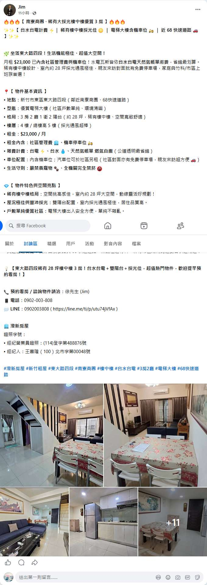 看原始刊登 → 查看貼文原文Jim 【 南寮商圈 ‧ 稀有大採光樓中樓優質 3 房 】 【 台水台電計費 ｜ 稀有樓中樓採光佳 ｜ 電梯大樓含機車位 ｜ 近 68 快速道路 】 坐落東大路四段！生活機能極佳、超值大空間！ 月租 $23,000 已內含社區管理費與機車位！水電瓦斯皆依台水台電天然氣帳單繳費，省錢最划算。稀有樓中樓設計、室內約 28 坪採光通風極佳，親友來訪對面就有免費停車場，家庭與竹科/市區上班族首選！ 【 物件基本資訊 】 • 地點：新竹市東區東大路四段（鄰近南寮商圈、68快速道路） • 型態：優質電梯大樓（社區戶數單純、環境清幽） • 格局：3 房 2 廳 1 衛 2 陽台（約 28 坪，稀有樓中樓、空間寬敞舒適） • 樓層：4 樓 / 總樓高 5 樓（採光通風超棒） • 租金：$23,000 / 月 • 租金內含：社區管理費 、機車停車位 • 雜費計費：台電 、台水 、天然氣帳單 燃氣自繳（公道透明最省錢） • 車位配置：內含機車位；汽車位可於社區另租（社區對面亦有免費停車場，親友來訪超方便 ） • 生活守則：嚴禁養寵物 、全機關完全禁菸 【 物件特色與空間亮點 】 • 稀有樓中樓格局：空間挑高感佳，室內約 28 坪大空間，動線靈活好規劃！ • 屋況極佳與豐沛採光：雙陽台配置，室內採光通風極佳，居住品質高。 • 戶數單純優質社區：電梯大樓出入安全方便，單純不雜亂。 【 黃金地段與生活機能 】 • 生活機能一應俱全：鄰近在地市場、便利商店、全聯福利中心、寶雅 POYA 及圖書館，日常採買超便利！ • 交通極速便捷：緊鄰西濱公路與 68 快速道路，無論往返竹科、新竹市區或南北通勤皆快速暢通！ 【東大路四段稀有 28 坪樓中樓 3 房！台水台電＋雙陽台＋採光佳，超值熱門物件，歡迎提早預約看房！】 預約看房 / 諮詢物件請洽：徐先生 (Jim) 電話：0902-003-808 LINE：0902003808 ( ) 澄新房屋 證照字號： • 經紀營業員證照：(114)登字第488876號 • 經紀人：王嘉隆（100）北市字第00048號 #澄新房屋 #新竹租屋 #東大路四段 #南寮商圈 #樓中樓 #台水台電 #3房2廳 #電梯大樓 #68快速道路 +11 送出第一則留言…… 貼文內有 2 個連結（已檢查）
| 23,000 HTTP 400 | 3房—廳1衛 差一點 | 4F | 未註明 | 有 | 未註明 | 未提及 | FB 貼文 |
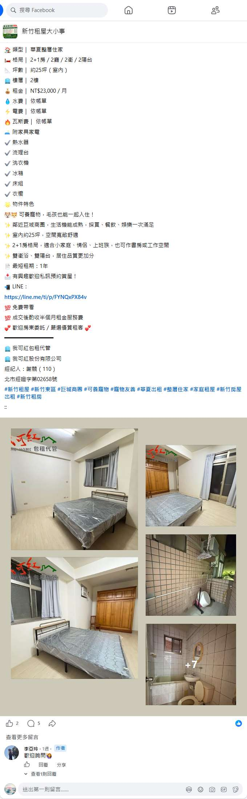 看原始刊登 → 查看貼文原文李亞玲 ｜新竹東區｜巨城商圈｜可養寵物 ｜2+1房華夏出租 地址｜ 新竹市東區民生路222巷26號（鄰近巨城購物中心） 類型｜ 華夏整層住家 格局｜ 2+1房／2廳／2衛／2陽台 坪數｜ 約25坪（室內） 樓層｜ 2樓 租金｜ NT$23,000／月 水費｜ 依帳單 電費｜ 依帳單 瓦斯費｜ 依帳單 附家具家電 熱水器 流理台 洗衣機 冰箱 床組 衣櫥 物件特色 可養寵物，毛孩也能一起入住！ 鄰近巨城商圈，生活機能成熟，採買、餐飲、娛樂一次滿足 室內約25坪，空間寬敞舒適 2+1房格局，適合小家庭、情侶、上班族，也可作書房或工作空間 雙衛浴、雙陽台，居住品質更加分 最短租期：1年 有興趣歡迎私訊預約賞屋！ LINE： 免費帶看 成交後酌收半個月租金服務費 歡迎房東委託／嚴選優質租客 ━━━━━━━━━━━━━━━ 我可紅包租代管 我可紅股份有限公司 經紀人：謝競（110） 北市經證字第02658號 #新竹租屋 #新竹東區 #巨城商圈 #可養寵物 #寵物友善 #華夏出租 #整層住家 #家庭租屋 #新竹房屋出租 #新竹租房 :: +7 查看更多留言 李亞玲 1週 作者 歡迎詢問 回覆 查看1則回覆 送出第一則留言…… 貼文內有 2 個連結（已檢查）
| 23,000 HTTP 400 | 2房—廳2衛 差一點 | 2F | 未註明 | 未註明 | 未註明 | 未提及 | FB 貼文 此物件未公開電話，請點標題到原網站聯絡 |
| 23,000 已下架(404) | 3房2廳1衛 差一點 | 4F/5F | 租金已含 | 有 | 未註明 | 可 | 仲介 駱先生-新竹租屋公司 · 新竹房屋仲介 | |
| 23,000 已下架(404) | 3房2廳1衛 差一點 | 2F/5F | 無 | 無 | 有 | 未提及 | 仲介 莊小姐 · 勁富不動產 | |
| 23,000 已下架(404) | 3房2廳1衛 差一點 | 1F/5F | 租金已含 | 無 | 未註明 | 未提及 | 仲介 吳先生 · 家樂仲介有限公司 | |
| 23,500 | 3房2廳2衛 完全符合 | 6F/10F | 租金已含 | 有 | 有 | 未提及 | 仲介 詹小姐 · 鑫聚點不動產有限公司 | |
| 24,000 | 3房2廳2衛 完全符合 | 5F/7F | 2,333元/月 | 有 | 有 | 未提及 | 仲介 吳小姐 · 大管家租賃住宅代管有限公司 | |
| 24,000 | 3房2廳2衛 完全符合 | 4F/6F | 200元/月 | 無 | 未註明 | 未提及 | 仲介 呂先生 · 我可紅股份有限公司 | |
| 24,000 | 2房2廳2衛 差一點 | 4F/5F | 200元/月 | 無 | 未註明 | 未提及 | 仲介 李小姐 · 業務 | |
 看原始刊登 → 同一物件另有 4 筆刊登（不同仲介）
| 24,000 | 3房2廳1衛 差一點 | 2F/7F | 500元/月 | 有 | 未註明 | 未提及 | 仲介 張小姐 · 景裕地產事業有限公司 |
| 24,000 | 3房2廳1衛 差一點 | 3F/4F | 無 | 無 | 未註明 | 未提及 | 仲介 徐先生 · 冠國不動產 | |
| 24,000 | 3房2廳2衛 完全符合 | 1/5樓 | 1500元 | 未註明 | 有 | 不可 | ||
| 24,000 | 3房2廳2衛 完全符合 | 8/10樓 | 0元 | 有 | 有 | 不可 | ||
| 24,000 | 3房2廳2衛 完全符合 | 5/6樓 | 未註明 | 有 | 未註明 | 未提及 | 此物件未公開電話，請點標題到原網站聯絡 | |
| 24,000 已下架(404) | 3房2廳2衛 完全符合 | 4F/7F | 2,500元/月 | 有 | 有 | 未提及 | 仲介 徐先生 · 澄新房屋股份有限公司 | |
| 24,000 已下架(404) | 3房2廳2衛 完全符合 | 2F/5F | 租金已含 | 無 | 有 | 未提及 | 仲介 曾小姐 · 齊家房屋有限公司 | |
| 24,000 已下架(404) | 3房2廳2衛 完全符合 | 1F/4F | 無 | 無 | 未註明 | 未提及 | 仲介 陳先生 · 興築家不動產有限公司 | |
| 24,000 已下架(404) | 3房2廳2衛 完全符合 | 1F/4F | 租金已含 | 無 | 未註明 | 未提及 | 仲介 蘇小姐 · 齊家房屋有限公司 | |
| 24,000 已下架(404) | 3房2廳1衛 差一點 | 4F/4F | 無 | 無 | 未註明 | 未提及 | 仲介 曹小姐 · 澄新房屋 | |
| 24,000 已下架(404) | 3房1廳2衛 差一點 | 5F/5F | 1,000元/月 | 有 | 有 | 未提及 | 屋主 彭女士 | |
| 24,000 已下架(404) | 3房2廳1衛 差一點 | 1F/4F | 租金已含 | 有 | 未註明 | 未提及 | 仲介 蔡先生 · 澄新房屋 | |
| 24,000 已下架(404) | 4房1廳2衛 差一點 | 2F/12F | 1,200元/月 | 有 | 未註明 | 未提及 | 仲介 吳小姐 · 大管家租賃住宅代管有限公司 | |
| 24,000 已下架(404) | 3房2廳2衛 完全符合 | 7F/12F | 租金已含 | 有 | 未註明 | 未提及 | 屋主 張小姐 | |
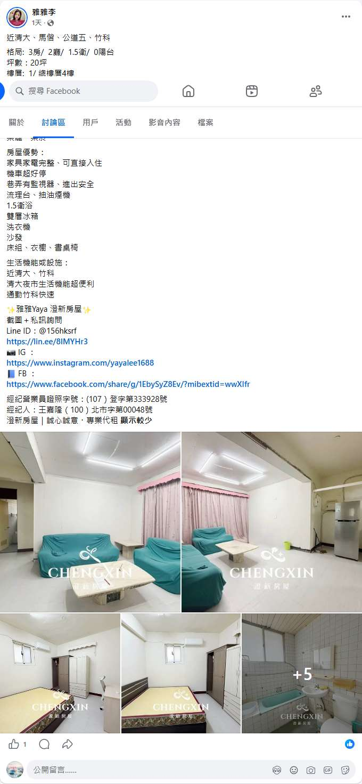 看原始刊登 → 查看貼文原文雅雅李 近清大、馬偕、公道五、竹科 格局: 3房/ 2廳/ 1.5衛/ 0陽台 坪數：20坪 樓層: 1/ 總樓層4樓 租金：24000 租金含：管理費、網路、水費、電費（500度以內免費） 機車位 : 門口隨到停 汽車位：無 廁所對外窗：有 禁寵、禁菸 房屋優勢： 家具家電完整、可直接入住 機車超好停 巷弄有監視器、進出安全 流理台、抽油煙機 1.5衛浴 雙層冰箱 洗衣機 沙發 床組、衣櫥、書桌椅 生活機能或設施： 近清大、竹科 清大夜市生活機能超便利 通勤竹科快速 雅雅Yaya 澄新房屋 截圖＋私訊詢問 Line ID：@156hksrf IG ： FB ： 經紀營業員證照字號：(107）登字第333928號 經紀人：王嘉隆（100）北市字第00048號 澄新房屋｜誠心誠意・專業代租 顯示較少 +5 公開留言…… 貼文內有 4 個連結（已檢查）
| 24,000 HTTP 400 | 3房—廳5衛 超規格 | 4F | 未註明 | 未註明 | 未註明 | 未提及 | FB 貼文 此物件未公開電話，請點標題到原網站聯絡 |
| 24,000 已下架(404) | 3房1廳2衛 差一點 | 2F/6F | 200元/月 | 無 | 未註明 | 未提及 | 代理人 張先生 | |
| 25,000 | 4房2廳3衛 超規格 | 1F~4F/4F | 租金已含 | 無 | 有 | 不可 | 仲介 吳小姐 · 仲合不動產仲介經紀有限公司 | |
 | 25,000 | 3房2廳2衛 完全符合 | 6F/8F | 2,500元/月 | 有 | 有 | 未提及 | 仲介 賀先生 · 科園房屋 |
 看原始刊登 → 同一物件另有 3 筆刊登（不同仲介）
| 25,000 | 4房2廳2衛 超規格 | 1F~3F/3F | 無 | 無 | 有 | 未提及 | 仲介 陳捷宥 · 包租代管租賃買賣 |
| 25,000 | 3房2廳2衛 完全符合 | 4F/5F | 200元/月 | 無 | 未註明 | 未提及 | 仲介 呂先生 · 我可紅股份有限公司 | |
| 25,000 | 3房2廳2衛 完全符合 | 2F/5F | 1,000元/月 | 無 | 未註明 | 未提及 | 仲介 范小姐 · 東洁房屋有限公司 | |
| 25,000 | 4房2廳2衛 超規格 | 1F~2F/2F | 無 | 無 | 未註明 | 未提及 | 仲介 池小姐 · 家樂仲介有限公司 | |
| 25,000 | 3房2廳1衛 差一點 | 1F/3F | 無 | 無 | 未註明 | 未提及 | 仲介 邱先生 · 宥德不動產仲介經紀有限公司 | |
| 25,000 | 2房2廳2衛 差一點 | 1F/5F | 租金已含 | 無 | 未註明 | 未提及 | 仲介 陳先生 · 陞豐開發有限公司 | |
| 25,000 | 3房2廳2衛 完全符合 | 4F/5F | 200元/月 | 無 | 未註明 | 未提及 | 代理人 張先生 | |
| 25,000 | 3房2廳2衛 完全符合 | 1F~3F/4F | 未註明 | 無 | 未註明 | 未提及 | 仲介 温先生 · 大管家租賃住宅代管有限公司 | |
| 25,000 | 2房2廳2衛 差一點 | 1F/5F | 未註明 | 無 | 未註明 | 未提及 | 仲介 吳先生 · 陞豐開發有限公司 | |
| 25,000 | 4房2廳2衛 超規格 | 3/8樓 | 未註明 | 有 | 未註明 | 未提及 | 此物件未公開電話，請點標題到原網站聯絡 | |
| 25,000 | 3房2廳2衛 完全符合 | 1/5樓 | 未註明 | 未註明 | 未註明 | 未提及 | 此物件未公開電話，請點標題到原網站聯絡 | |
| 25,000 已下架(404) | 3房2廳2衛 完全符合 | 2F/9F | 3,000元/月 | 有 | 有 | 未提及 | 仲介 洪小姐 · 澄新房屋股份有限公司 | |
| 25,000 已下架(404) | 3房2廳2衛 完全符合 | 2F/5F | 租金已含 | 無 | 有 | 未提及 | 仲介 曾小姐 · 齊家房屋有限公司 | |
| 25,000 已下架(404) | 6房2廳3衛 超規格 | 整棟/3F | 無 | 無 | 有 | 未提及 | 仲介 劉小姐 · 宅吉屋不動產經紀有限公司 | |
| 25,000 已下架(404) | 3房2廳1衛 差一點 | 2F/5F | 無 | 無 | 未註明 | 未提及 | 仲介 洪小姐 · 日茪寓房屋有限公司 | |
| 25,000 已下架(404) | 3房2廳2衛 完全符合 | 5F/5F | 租金已含 | 有 | 有 | 未提及 | 屋主 王小姐（屋主自租，房仲勿 | |
| 25,000 已下架(404) | 3房2廳2衛 完全符合 | 2F/7F | 1,500元/月 | 有 | 未註明 | 未提及 | 仲介 朱先生 · 大管家租賃住宅代管有限公司 | |
| 25,000 已下架(404) | 3房2廳2衛 完全符合 | 5F/7F | 租金已含 | 有 | 未註明 | 未提及 | 仲介 段小姐 · 房屋公司 | |
| 25,000 已下架(404) | 3房1廳2衛 差一點 | 4F/9F | 租金已含 | 有 | 有 | 未提及 | 代理人 孫先生 | |
| 25,000 已下架(404) | 2房1廳2衛 不符 | 4F/9F | 租金已含 | 有 | 有 | 未提及 | 代理人 孫先生 | |
| 25,000 已下架(404) | 3房2廳2衛 完全符合 | 4F/4F | 未註明 | 無 | 未註明 | 未提及 | 仲介 黃先生 · 家樂旺國際地產開發 | |
| 25,000 已下架(404) | 5房2廳2衛 超規格 | 5F/5F | 未註明 | 無 | 未註明 | 未提及 | 仲介 吳小姐 · 大管家租賃住宅代管有限公司 | |
| 25,000 已下架(404) | 3房2廳1衛 差一點 | 4F/5F | 無 | 無 | 未註明 | 未提及 | 屋主 黃家琪 | |
| 25,000 已下架(404) | 3房2廳2衛 完全符合 | 3F/5F | 500元/月 | 有 | 未註明 | 未提及 | 屋主 王先生 | |
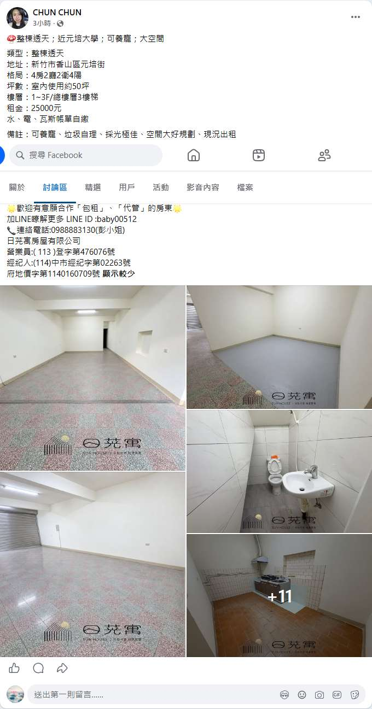 看原始刊登 → 查看貼文原文CHUN CHUN 大約 1 小時前 整棟透天；近元培大學；可養寵；大空間 類型：整棟透天 地址：新竹市香山區元培街 格局：4房2廳2衛4陽 坪數：室內使用約50坪 樓層：1~3F/總樓層3樓梯 租金：25000元 水、電、瓦斯帳單自繳 備註：可養寵、垃圾自理、採光極佳、空間大好規劃、現況出租 生活機能：走路10分鐘至三姓橋火車站、走路5分鐘至香山高中、走路1分鐘至全家便利商店、騎車3分鐘至大庄商圈、元培大學、玄奘大學、騎車10分鐘至中華大學、茄冬交流道 成交需收服務費(租金半個月) 最少承租一年，兩押一租 -----------日茪寓包租代管---------- 歡迎有意願合作「包租」、「代管」的房東 加LINE瞭解更多 LINE ID :baby00512 連絡電話:0988883130(彭小姐) 日茪寓房屋有限公司 營業員:( 113 )登字第476076號 經紀人:(114)中市經紀字第02263號 府地價字第1140160709號 顯示較少 +11 送出第一則留言…… 貼文內有 1 個連結（已檢查）
| 25,000 HTTP 400 | 4房2廳2衛 超規格 | 3F | 未註明 | 未註明 | 未註明 | 未提及 | FB 貼文 |
| 25,000 已下架(404) | 3房2廳2衛 完全符合 | 7F/7F | 2,564元/月 | 有 | 有 | 未提及 | 仲介 陳先生 · 棠朝不動產經紀有限公司 | |
| 25,500 已下架(404) | 3房2廳2衛 完全符合 | 4F/6F | 2,500元/月 | 有 | 有 | 不可 | 仲介 黃先生 · 大管家租賃住宅代管有限公司 | |
| 25,500 已下架(404) | 3房2廳2衛 完全符合 | 9F/9F | 1,300元/月 | 有 | 未註明 | 未提及 | 仲介 邱先生 · 宏貫不動產經紀業有限公司 | |
| 25,500 已下架(404) | 3房2廳2衛 完全符合 | 7F/7F | 1,941元/月 | 有 | 未註明 | 未提及 | 屋主 黃先生 | |
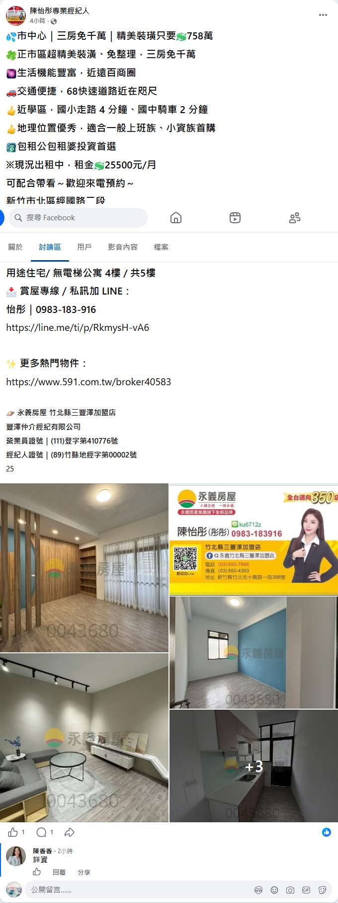 看原始刊登 → 查看貼文原文陳怡彤專業經紀人 4小時前 市中心｜三房免千萬｜精美裝璜只要 758萬 正市區超精美裝潢、免整理，三房免千萬 生活機能豐富，近遠百商圈 交通便捷，68快速道路近在咫尺 近學區，國小走路 4 分鐘、國中騎車 2 分鐘 地理位置優秀，適合一般上班族、小資族首購 包租公包租婆投資首選 ※現況出租中，租金 25500元/月 可配合帶看～歡迎來電預約～ 新竹市北區經國路二段 學區／市立民富國小 ／市立竹光國中 3房(室)2廳1衛 建坪 25.413坪 主建 23.898坪 附屬1.516坪 用途住宅/ 無電梯公寓 4樓 / 共5樓 賞屋專線／私訊加 LINE： 怡彤｜0983-183-916 更多熱門物件： 永義房屋 竹北縣三豐澤加盟店 豐澤仲介經紀有限公司 營業員證號｜(111)登字第410776號 經紀人證號｜(89)竹縣地經字第00002號 +3 陳香香 詳資 回覆 公開留言…… 貼文內有 3 個連結（已檢查）
| 25,500 HTTP 400 | 3房—廳1衛 差一點 | 4F | 未註明 | 無 | 未註明 | 未提及 | FB 貼文 |
 | 26,000 | 3房2廳2衛 完全符合 | 2F/9F | 2,042元/月 | 有 | 有 | 未提及 | 仲介 藍先生 · 忻居不動產仲介事業有限公司 |
| 26,000 | 3房2廳2衛 完全符合 | 1F/7F | 租金已含 | 無 | 有 | 未提及 | 仲介 洪小姐 · 大管家租屋 | |
| 26,000 | 3房2廳2衛 完全符合 | 1F/8F | 租金已含 | 有 | 有 | 未提及 | 仲介 史先生 · 聚鑫企業社 | |
 看原始刊登 → 同一物件另有 2 筆刊登（不同仲介）
| 26,000 | 4房2廳2衛 超規格 | 整棟/2F | 無 | 無 | 有 | 未提及 | 仲介 張先生 · 千宅不動產經紀有限公司 |
 看原始刊登 → 同一物件另有 2 筆刊登（不同仲介）
| 26,000 | 2房2廳2衛 差一點 | 12F/17F | 2,000元/月 | 有 | 有 | 未提及 | 仲介 林小姐 · 澄新房屋 |
 | 26,000 | 3房2廳2衛 完全符合 | 1F/8F | 租金已含 | 有 | 未註明 | 未提及 | 仲介 王嘉晨 · 興築家不動產有限公司 |
| 26,000 | 4房2廳2衛 超規格 | 4F/4F | 無 | 有 | 未註明 | 未提及 | 仲介 邱先生 · 宥德不動產仲介經紀有限公司 | |
| 26,000 | 3房3廳2衛 超規格 | 1F~3F/3F | 無 | 無 | 未註明 | 未提及 | 仲介 陳小姐 · 大管家租賃住宅代管有限公司 | |
| 26,000 | 4房2廳2衛 超規格 | 6F/7F | 1,100元/月 | 有 | 未註明 | 未提及 | 屋主 郭先生 | |
| 26,000 | 3房2廳1衛 差一點 | 9/10樓 | 未註明 | 有 | 未註明 | 未提及 | 此物件未公開電話，請點標題到原網站聯絡 | |
| 26,000 | 3房3廳3衛 超規格 | 整棟/3樓 | 未註明 | 未註明 | 未註明 | 未提及 | 此物件未公開電話，請點標題到原網站聯絡 | |
| 26,000 | 4房2廳2衛 超規格 | 2 / 16 | 另計(金額未公開) | 有 | 未註明 | 未提及 | ||
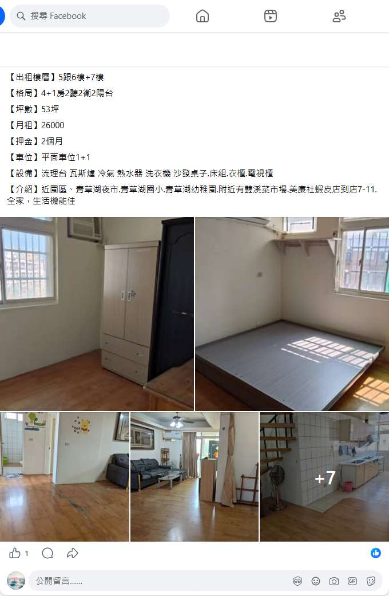 | 26,000 | 4房—廳2衛 超規格 | 6F | 未註明 | 未註明 | 有 | 未提及 | FB 貼文 此物件未公開電話，請點標題到原網站聯絡 |
| 26,000 | 3房2廳2衛 完全符合 | 14/23樓 | 未註明 | 有 | 未註明 | 未提及 | 此物件未公開電話，請點標題到原網站聯絡 | |
| 26,000 已下架(404) | 3房2廳2衛 完全符合 | 6F/8F | 1,600元/月 | 有 | 有 | 未提及 | 仲介 曾先生 · 家樂仲介有限公司 | |
| 26,000 已下架(404) | 3房2廳2衛 完全符合 | 4F/7F | 租金已含 | 有 | 有 | 未提及 | 仲介 凌小姐 · 澄新房屋股份有限公司 | |
| 26,000 已下架(404) | 3房2廳2衛 完全符合 | 3F/9F | 租金已含 | 有 | 未註明 | 未提及 | 仲介 陳小姐 · 大管家租賃住宅代管有限公司 | |
| 26,000 已下架(404) | 3房2廳2衛 完全符合 | 10F/21F | 3,700元/月 | 有 | 有 | 未提及 | 仲介 張小姐 · 于荷不動產仲介經紀有限公司 | |
| 26,000 已下架(404) | 3房2廳2衛 完全符合 | 2F/15F | 租金已含 | 有 | 有 | 未提及 | 仲介 梁先生 · 蝸居不動產有限公司 | |
| 26,000 已下架(404) | 6房2廳2衛 超規格 | 1F~2F/2F | 無 | 無 | 有 | 未提及 | 仲介 蔡先生 · 星鴻股份有限公司 | |
| 26,000 已下架(404) | 3房2廳2衛 完全符合 | 5F/12F | 租金已含 | 有 | 有 | 未提及 | 仲介 羅先生 · 新居不動產仲介事業有限公司 | |
| 26,000 已下架(404) | 3房2廳2衛 完全符合 | 3F/5F | 租金已含 | 有 | 有 | 未提及 | 屋主 何先生 | |
| 26,000 已下架(404) | 3房2廳2衛 完全符合 | 3F/5F | 無 | 無 | 未註明 | 未提及 | 仲介 朱先生 · 大管家租賃住宅代管有限公司 | |
| 26,000 已下架(404) | 3房2廳2衛 完全符合 | 3F/6F | 租金已含 | 有 | 未註明 | 未提及 | 仲介 賀先生 · 科園房屋 | |
| 26,000 已下架(404) | 3房2廳2衛 完全符合 | 3F/5F | 租金已含 | 有 | 未註明 | 未提及 | 仲介 洪小姐 · 澄新房屋股份有限公司 | |
| 26,000 已下架(404) | 3房2廳2衛 完全符合 | 3F/5F | 租金已含 | 有 | 未註明 | 未提及 | 仲介 黃先生 · 大管家租賃住宅代管有限公司 | |
| 26,000 已下架(404) | 3房2廳2衛 完全符合 | 2F/7F | 租金已含 | 有 | 未註明 | 未提及 | 仲介 詹小姐 · 鑫聚點不動產有限公司 | |
| 26,000 已下架(404) | 3房2廳2衛 完全符合 | 4F/13F | 租金已含 | 有 | 未註明 | 未提及 | 仲介 吳先生 · 大新竹地產開發有限公司 | |
| 26,000 已下架(404) | 3房2廳1衛 差一點 | 1F/5F | 無 | 無 | 未註明 | 未提及 | 仲介 傅先生 · 大新竹地產開發有限公司 | |
| 26,000 已下架(404) | 2房2廳2衛 差一點 | 3F/5F | 無 | 有 | 未註明 | 未提及 | 仲介 陳先生 · 富程不動產經紀有限公司 | |
| 26,000 已下架(404) | 3房2廳2衛 完全符合 | 1F/9F | 未註明 | 有 | 未註明 | 未提及 | 仲介 楊先生 · 偉鈞不動產仲介經紀有限公司 | |
| 26,000 已下架(404) | 3房2廳2衛 完全符合 | 3F/5F | 租金已含 | 有 | 未註明 | 未提及 | 屋主 郭先生 | |
| 26,000 已下架(404) | 3房1廳2衛 差一點 | 1F~2F/6F | 未註明 | 無 | 未註明 | 未提及 | 仲介 鍾先生 · 聚鑫企業社好市家房屋 | |
| 26,000 已下架(404) | 3房2廳2衛 完全符合 | 4F/6F | 租金已含 | 有 | 未註明 | 未提及 | 仲介 林先生 · 上等不動產 | |
| 26,000 已下架 | 3房2廳2衛 完全符合 | 4 / 6 | 未註明 | 有 | 未註明 | 未提及 | ||
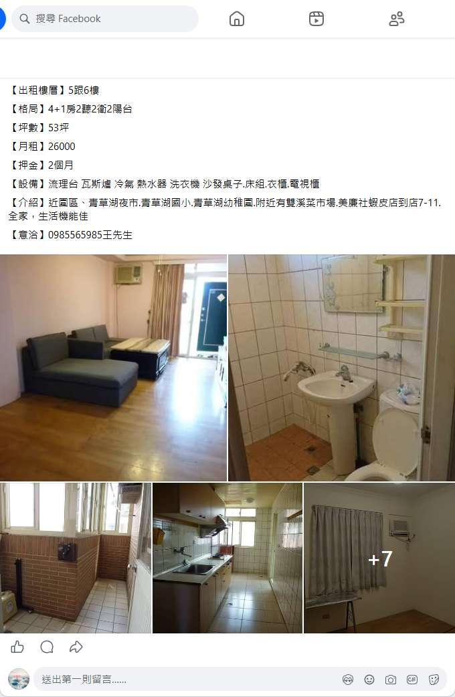 看原始刊登 → 查看貼文原文王敏文 2分鐘前 近園區三房含管理費 【地址】明湖路 【出租樓層】5跟6樓 【格局】4+1房2聽2衛2陽台 【坪數】53坪 【月租】26000 【押金】2個月 【設備】流理台 瓦斯爐 冷氣 熱水器 洗衣機 沙發桌子.床組.衣櫃.電視櫃 【介紹】近園區、青草湖夜市.青草湖國小.青草湖幼稚園.附近有雙溪菜市場.美廉社蝦皮店到店7-11.全家，生活機能佳 【意洽】0985565985王先生 +7 送出第一則留言…… 貼文內有 1 個連結（已檢查）
| 26,000 HTTP 400 | 3房—廳2衛 完全符合 | 6F | 未註明 | 未註明 | 未註明 | 未提及 | FB 貼文 |
| 26,500 已下架(404) | 3房2廳2衛 完全符合 | 14F/23F | 2,200元/月 | 有 | 有 | 未提及 | 仲介 陳小姐 · 誠田不動產 | |
| 26,500 已下架(404) | 3房2廳2衛 完全符合 | 5F/5F | 無 | 無 | 未註明 | 未提及 | 屋主 郭先生 | |
| 26,500 已下架(404) | 3房1廳2衛 差一點 | 1F~2F/6F | 未註明 | 無 | 未註明 | 未提及 | 仲介 鍾先生 · 聚鑫企業社好市家房屋 | |
| 26,800 已下架(404) | 3房2廳2衛 完全符合 | 7F/7F | 2,230元/月 | 有 | 未註明 | 未提及 | 仲介 李雅雅 · 澄新房屋 | |
| 26,800 已下架(404) | 3房2廳2衛 完全符合 | 4F/12F | 2,100元/月 | 有 | 未註明 | 未提及 | 屋主 黃先生 | |
| 27,000 | 6房2廳2衛 超規格 | 整棟/4F | 無 | 無 | 有 | 未提及 | 仲介 温先生 · 大管家租賃住宅代管有限公司 | |
 看原始刊登 → 同一物件另有 2 筆刊登（不同仲介）
| 27,000 | 3房2廳1衛 差一點 | 1F/8F | 2,000元/月 | 有 | 有 | 未提及 | 仲介 鄭先生 · 租事大喆物業租貸管理顧問 |
 看原始刊登 → 同一物件另有 2 筆刊登（不同仲介）
| 27,000 | 4房3廳2衛 超規格 | 4F/4F | 無 | 無 | 未註明 | 未提及 | 仲介 沈小姐 · 宥德不動產仲介經紀有限公司 |
| 27,000 | 3房2廳2衛 完全符合 | 6F/7F | 730元/月 | 有 | 未註明 | 未提及 | 屋主 梁小姐 | |
| 27,000 | 3房2廳2衛 完全符合 | 11/12樓 | 未註明 | 有 | 未註明 | 未提及 | 此物件未公開電話，請點標題到原網站聯絡 | |
| 27,000 已下架(404) | 4房2廳2衛 超規格 | 5F/7F | 租金已含 | 有 | 有 | 不可 | 屋主 楊女士 | |
| 27,000 已下架(404) | 3房2廳2衛 完全符合 | 9F/12F | 3,400元/月 | 有 | 有 | 未提及 | 屋主 郭先生 | |
| 27,000 已下架(404) | 3房1廳2衛 差一點 | 7F/15F | 2,871元/月 | 有 | 有 | 未提及 | 屋主 陳先生 | |
| 27,000 已下架(404) | 3房2廳2衛 完全符合 | 3F/7F | 4,000元/月 | 有 | 未註明 | 未提及 | 仲介 宋先生 · 大管家租賃住宅代管有限公司 | |
| 27,000 已下架(404) | 3房1廳2衛 差一點 | 1F~2F/6F | 未註明 | 無 | 未註明 | 未提及 | 仲介 鍾先生 · 聚鑫企業社好市家房屋 | |
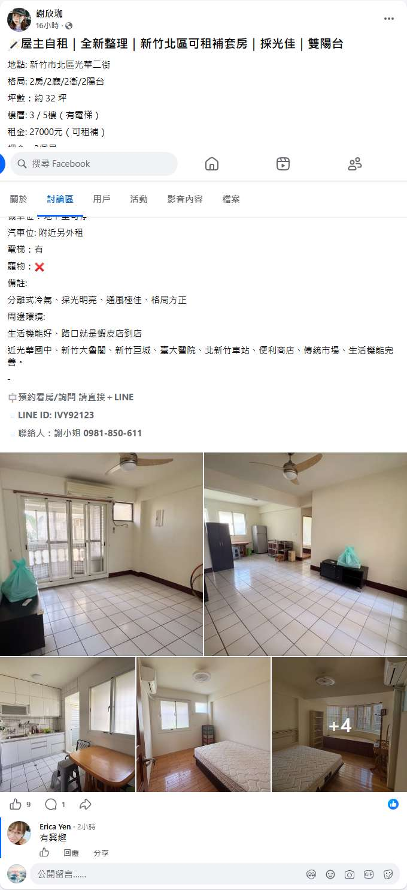 看原始刊登 → 查看貼文原文謝欣珈 16小時前 屋主自租｜全新整理｜新竹北區可租補套房｜採光佳｜雙陽台 地點: 新竹市北區光華二街 格局: 2房/2廳/2衛/2陽台 坪數：約 32 坪 樓層: 3 / 5樓（有電梯） 租金: 27000元（可租補） 押金：2個月 水費電費瓦斯費：台水台電天然瓦斯 管理費：無 租金含：管理費 機車位：地下室可停 汽車位: 附近另外租 電梯：有 寵物： 備註: 分離式冷氣、採光明亮、通風極佳、格局方正 周邊環境: 生活機能好、路口就是蝦皮店到店 近光華國中、新竹大魯閣、新竹巨城、臺大醫院、北新竹車站、便利商店、傳統市場、生活機能完善。 - 預約看房/詢問 請直接＋LINE LINE ID: IVY92123 聯絡人：謝小姐 0981-850-611 +4 Erica Yen 有興趣 回覆 公開留言…… 貼文內有 1 個連結（已檢查）
| 27,000 HTTP 400 | 2房—廳2衛 差一點 | 5F | 無 | 有 | 未註明 | 未提及 | FB 貼文 |
| 27,000 已下架(404) | 3房2廳2衛 完全符合 | 3F/7F | 租金已含 | 有 | 有 | 未提及 | 屋主 楊先生 | |
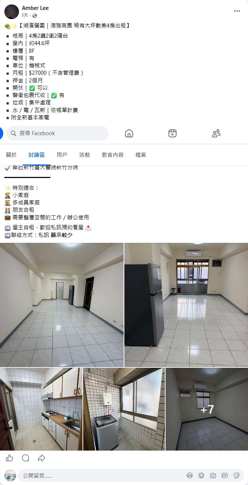 看原始刊登 → 查看貼文原文Amber Lee 1 天前 【湖濱儷園｜湳雅商圈 稀有大坪數美4房出租】 格局｜4房2廳2衛2陽台 室內｜約44.6坪 樓層｜8F 電梯｜有 車位｜機械式 月租｜$27000（不含管理費） 押金｜2個月 開伙｜ 可以 警衛包裹代收｜ 有 垃圾｜集中處理 水／電／瓦斯｜依帳單計費 附全新基本家電 禁煙、禁寵、禁祭祀 鄰近湳雅大全聯、大魯閣商圈 舊社國小、光華國中學區 鄰近公園綠地、鄰近68快速道路武陵路匝道 社區環境單純，有警衛管理 鄰近新竹臺大醫院新竹分院 ━━━━━━━━━━━━━━ 特別適合： 小家庭 多成員家庭 朋友合租 需要整層空間的工作／辦公使用 屋主自租，歡迎私訊預約看屋 聯絡方式：私訊 顯示較少 +7 公開留言…… 貼文內有 1 個連結（已檢查）
| 27,000 HTTP 400 | 4房—廳2衛 超規格 | — | 未註明 | 未註明 | 未註明 | 不可 | FB 貼文 此物件未公開電話，請點標題到原網站聯絡 |
| 27,000 已下架(404) | 4房1廳2衛 差一點 | 4F/5F | 無 | 無 | 未註明 | 未提及 | 仲介 鄭先生 · 租事大喆物業租貸管理顧問 | |
| 27,500 | 3房2廳2衛 完全符合 | 10F/12F | 480元/月 | 有 | 未註明 | 未提及 | 屋主 吳先生 | |
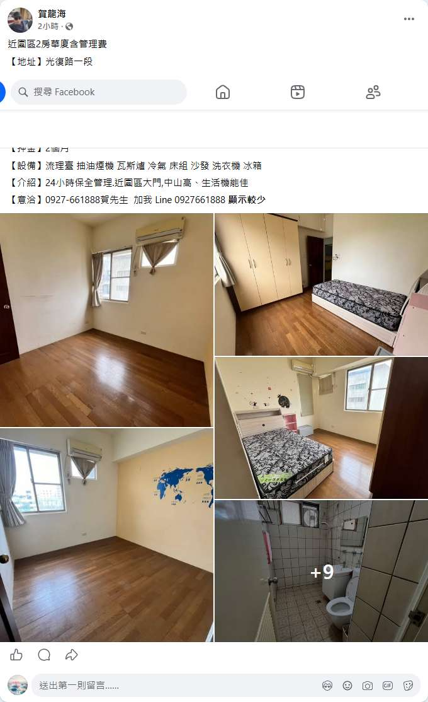 看原始刊登 → 查看貼文原文賀龍海 16分鐘前 近園區2房華廈含管理費 【地址】光復路一段 【出租樓層】3樓 整棟大樓樓層13 【格局】2房2廳2衛2陽台 【坪數】25坪 【月租】27500 【押金】2個月 【設備】流理臺 抽油煙機 瓦斯爐 冷氣 床組 沙發 洗衣機 冰箱 【介紹】24小時保全管理.近園區大門,中山高、生活機能佳 【意洽】0927-661888賀先生 加我 Line 0927661888 顯示較少 +9 送出第一則留言…… 貼文內有 1 個連結（已檢查）
| 27,500 HTTP 400 | 2房—廳2衛 差一點 | 3F | 未註明 | 未註明 | 未註明 | 未提及 | FB 貼文 |
| 27,999 已下架(404) | 3房2廳2衛 完全符合 | 7F/15F | 1,824元/月 | 有 | 未註明 | 未提及 | 仲介 黃小姐 · 臻愛房屋 | |
| 28,000 | 3房2廳2衛 完全符合 | 3F/12F | 1,466元/月 | 有 | 有 | 未提及 | 仲介 王小安 · 展益不動產經紀有限公司 | |
| 28,000 | 3房2廳2衛 完全符合 | 10F/12F | 520元/月 | 有 | 有 | 有提及(需確認) | 屋主 戴先生 | |
| 28,000 | 3房2廳2衛 完全符合 | 6F/10F | 2,000元/月 | 有 | 有 | 未提及 | 仲介 吳先生 · 全家房屋 | |
| 28,000 | 3房2廳2衛 完全符合 | 10F/19F | 1,800元/月 | 有 | 有 | 未提及 | 仲介 莉亞 · 澄新房屋 | |
 看原始刊登 → 同一物件另有 3 筆刊登（不同仲介）
| 28,000 | 2房2廳2衛 差一點 | 12F/17F | 租金已含 | 有 | 有 | 未提及 | 仲介 陳小姐 · 澄新房屋股份有限公司 |
| 28,000 | 2房2廳2衛 差一點 | 12F/17F | 租金已含 | 有 | 有 | 未提及 | 仲介 凌小姐 · 澄新房屋股份有限公司 | |
| 28,000 | 2房2廳2衛 差一點 | 5F/15F | 租金已含 | 有 | 有 | 未提及 | 仲介 陳小姐 · 澄新房屋股份有限公司 | |
 | 28,000 | 2房2廳2衛 差一點 | 6F/10F | 2,000元/月 | 有 | 有 | 未提及 | 仲介 夏小姐 · 沐家房屋有限公司 |
 | 28,000 | 3房2廳2衛 完全符合 | 3F/12F | 1,500元/月 | 有 | 未註明 | 未提及 | 仲介 蔡小姐 · 展懿不動產經紀有限公司 |
| 28,000 | 3房2廳2衛 完全符合 | 2F/7F | 1,500元/月 | 有 | 未註明 | 未提及 | 仲介 朱先生 · 大管家租賃住宅代管有限公司 | |
| 28,000 | 3房2廳2衛 完全符合 | 整棟/3F | 未註明 | 有 | 有 | 未提及 | 仲介 王先生 · 宇賀不動產仲介有限公司 | |
| 28,000 | 3房2廳2衛 完全符合 | 4F/5F | 無 | 無 | 未註明 | 未提及 | 仲介 高小姐 · 畇品不動產經紀有限公司 | |
| 28,000 | 4房2廳2衛 超規格 | 整棟/3F | 無 | 無 | 未註明 | 未提及 | 仲介 鄧先生 · 家樂仲介有限公司 | |
| 28,000 | 4房2廳2衛 超規格 | 5F/10F | 租金已含 | 有 | 有 | 未提及 | 屋主 何先生 | |
 | 28,000 | 3房2廳2衛 完全符合 | 3F/7F | 未註明 | 有 | 未註明 | 未提及 | 仲介 陳先生 · 台勝不動產仲介公司 |
| 28,000 | 3房2廳2衛 完全符合 | 4F/5F | 未註明 | 無 | 未註明 | 未提及 | 仲介 宋先生 · 大管家租賃住宅代管有限公司 | |
| 28,000 | 4房2廳2衛 超規格 | 1F~3F/3F | 未註明 | 無 | 未註明 | 未提及 | 仲介 吳先生 · 城毅不動產開發有限公司 | |
| 28,000 | 3房1廳2衛 差一點 | 12F/12F | 840元/月 | 有 | 未註明 | 未提及 | 代理人 郭先生 | |
 | 28,000 | 2房1廳3衛 不符 | 1F~3F/3F | 未註明 | 無 | 未註明 | 未提及 | 仲介 余小姐 · 仕鑫不動產仲介經紀股份有限公司 |
| 28,000 | 3房2廳2衛 完全符合 | 3 / 12 | 另計(金額未公開) | 有 | 有 | 未提及 | ||
| 28,000 | 3房—廳1衛 差一點 | 5 / 7 | 另計(金額未公開) | 有 | 未註明 | 未提及 | ||
| 28,000 | 5房—廳1衛 差一點 | 5 / 7 | 另計(金額未公開) | 有 | 未註明 | 未提及 | ||
| 28,000 | 4房2廳2衛 超規格 | 4/4樓 | 未註明 | 未註明 | 有 | 未提及 | ||
| 28,000 | 3房2廳2衛 完全符合 | 9/12樓 | 未註明 | 有 | 未註明 | 未提及 | 此物件未公開電話，請點標題到原網站聯絡 | |
| 28,000 | 3房2廳2衛 完全符合 | 2/11樓 | 未註明 | 有 | 未註明 | 未提及 | 此物件未公開電話，請點標題到原網站聯絡 | |
| 28,000 | 4房2廳2衛 超規格 | 1/12樓 | 未註明 | 有 | 未註明 | 未提及 | 此物件未公開電話，請點標題到原網站聯絡 | |
| 28,000 | 3房2廳2衛 完全符合 | 3/5樓 | 未註明 | 未註明 | 未註明 | 未提及 | 此物件未公開電話，請點標題到原網站聯絡 | |
| 28,000 | 4房2廳2衛 超規格 | 3/5樓 | 未註明 | 未註明 | 未註明 | 未提及 | 此物件未公開電話，請點標題到原網站聯絡 | |
| 28,000 | 3房—廳3衛 超規格 | 4/7樓 | 未註明 | 未註明 | 未註明 | 未提及 | 此物件未公開電話，請點標題到原網站聯絡 | |
| 28,000 | 3房2廳2衛 完全符合 | 3/7樓 | 未註明 | 有 | 未註明 | 未提及 | 此物件未公開電話，請點標題到原網站聯絡 | |
| 28,000 已下架(404) | 3房2廳2衛 完全符合 | 5F/7F | 1,370元/月 | 有 | 有 | 未提及 | 仲介 林先生 · 鑫承家不動產仲介經紀有限公司 | |
| 28,000 已下架(404) | 3房2廳2衛 完全符合 | 4F/13F | 租金已含 | 有 | 有 | 不可 | 代理人 戴小姐 | |
| 28,000 已下架(404) | 3房2廳2衛 完全符合 | 2F/8F | 租金已含 | 有 | 有 | 未提及 | 仲介 凌小姐 · 澄新房屋股份有限公司 | |
| 28,000 已下架(404) | 3房2廳2衛 完全符合 | 3F/7F | 1,430元/月 | 有 | 有 | 未提及 | 仲介 吳佳穎 · 彙家不動產開發有限公司 | |
| 28,000 已下架(404) | 4房2廳2衛 超規格 | 1F~3F/3F | 無 | 無 | 有 | 未提及 | 仲介 吳先生 · 全家房屋 | |
| 28,000 已下架(404) | 4房2廳2衛 超規格 | 整棟/3F | 無 | 無 | 未註明 | 不可 | 仲介 黃先生 · 大管家租賃住宅代管有限公司 | |
| 28,000 已下架(404) | 4房2廳2衛 超規格 | 7F/7F | 833元/月 | 有 | 未註明 | 不可 | 仲介 吳小姐 · 仲合不動產仲介經紀有限公司 | |
| 28,000 已下架(404) | 3房2廳2衛 完全符合 | 12F/13F | 租金已含 | 有 | 未註明 | 未提及 | 仲介 葉先生 · 聚鑫企業社好市家房屋 | |
| 28,000 已下架(404) | 3房2廳2衛 完全符合 | 11F/13F | 租金已含 | 有 | 未註明 | 未提及 | 仲介 詹先生 · 澄新房屋股份有限公司 | |
| 28,000 已下架(404) | 3房2廳2衛 完全符合 | 11F/12F | 520元/月 | 有 | 有 | 未提及 | 屋主 張先生 | |
| 28,000 已下架(404) | 3房2廳2衛 完全符合 | 7F/15F | 1,824元/月 | 有 | 未註明 | 未提及 | 仲介 徐先生 · 臻愛房屋企業社 | |
| 28,000 已下架(404) | 4房2廳2衛 超規格 | 7F/7F | 無 | 有 | 未註明 | 未提及 | 仲介 楊小姐 · 匯恆豐不動產仲介經紀有限公司 | |
| 28,000 已下架(404) | 3房2廳1衛 差一點 | 1F/5F | 無 | 無 | 未註明 | 未提及 | 仲介 劉小姐 · 三源不動產有限公司 | |
| 28,000 已下架(404) | 2房2廳3衛 差一點 | 整棟/4F | 未註明 | 無 | 有 | 未提及 | 仲介 盧先生 · 房屋 | |
| 28,000 已下架(404) | 3房2廳2衛 完全符合 | 4F/5F | 1,500元/月 | 有 | 未註明 | 未提及 | 屋主 林小姐 | |
| 28,000 已下架(404) | 4房2廳2衛 超規格 | 整棟/2F | 未註明 | 無 | 有 | 未提及 | 仲介 洪小姐 · 臻愛房屋企業社 | |
| 28,000 已下架(404) | 4房2廳2衛 超規格 | 4F/5F | 未註明 | 無 | 未註明 | 未提及 | 仲介 沈小姐 · 宥德不動產仲介經紀有限公司 | |
| 28,000 已下架(404) | 2房2廳2衛 差一點 | 1F/5F | 未註明 | 無 | 未註明 | 未提及 | 仲介 吳先生 · 陞豐開發有限公司 | |
| 28,000 已下架(404) | 3房2廳2衛 完全符合 | 7F/14F | 租金已含 | 有 | 未註明 | 未提及 | 代理人 唐先生 | |
| 28,000 已下架(404) | 3房2廳2衛 完全符合 | 7F/15F | 租金已含 | 有 | 有 | 未提及 | 仲介 杜先生 · 品宅不動產仲介經紀有限公司 | |
| 28,000 已下架 | 3房2廳5衛 超規格 | 5 / 7 | 另計(金額未公開) | 有 | 有 | 未提及 | ||
| 28,000 已下架 | 3房2廳2衛 完全符合 | 3 / 7 | 另計(金額未公開) | 有 | 未註明 | 未提及 | ||
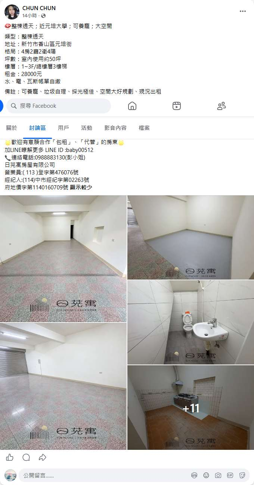 看原始刊登 → 查看貼文原文CHUN CHUN 整棟透天；近元培大學；可養寵；大空間 類型：整棟透天 地址：新竹市香山區元培街 格局：4房2廳2衛4陽 坪數：室內使用約50坪 樓層：1~3F/總樓層3樓梯 租金：28000元 水、電、瓦斯帳單自繳 備註：可養寵、垃圾自理、採光極佳、空間大好規劃、現況出租 生活機能：走路10分鐘至三姓橋火車站、走路5分鐘至香山高中、走路1分鐘至全家便利商店、騎車3分鐘至大庄商圈、元培大學、玄奘大學、騎車10分鐘至中華大學、茄冬交流道 成交需收服務費(租金半個月) 最少承租一年，兩押一租 -----------日茪寓包租代管---------- 歡迎有意願合作「包租」、「代管」的房東 加LINE瞭解更多 LINE ID :baby00512 連絡電話:0988883130(彭小姐) 日茪寓房屋有限公司 營業員:( 113 )登字第476076號 經紀人:(114)中市經紀字第02263號 府地價字第1140160709號 顯示較少 +11 公開留言…… 貼文內有 1 個連結（已檢查）
| 28,000 HTTP 400 | 4房2廳2衛 超規格 | 3F | 未註明 | 未註明 | 未註明 | 未提及 | FB 貼文 |
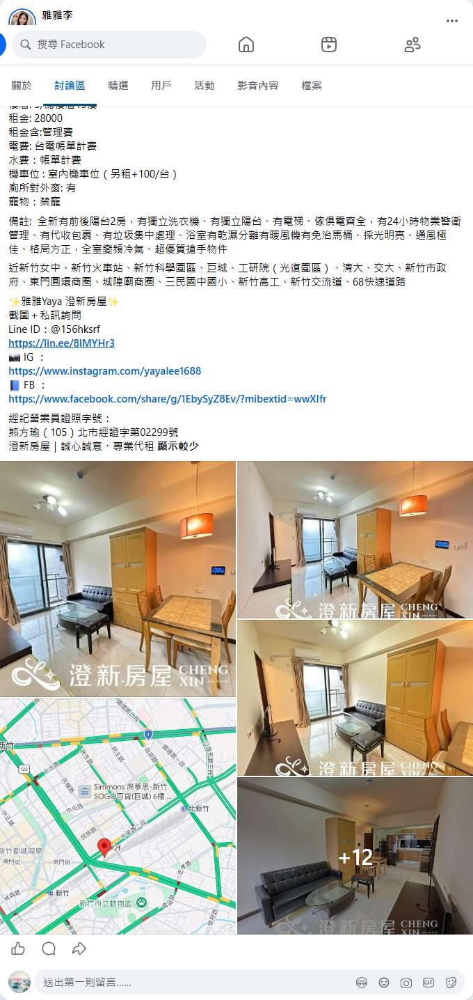 看原始刊登 → 查看貼文原文雅雅李 9小時前 新竹市區2房 多台機車位 地點: 新竹市東區中華路二段 格局: 2房/2廳/1廚/2衛/1陽台 坪數：室內大約20坪 樓層: 5/總樓層15樓 租金: 28000 租金含:管理費 電費: 台電帳單計費 水費：帳單計費 機車位 : 室內機車位（另租+100/台） 廁所對外窗: 有 寵物：禁寵 備註: 全新有前後陽台2房，有獨立洗衣機、有獨立陽台、有電梯、傢俱電齊全，有24小時物業警衛管理、有代收包裹、有垃圾集中處理、浴室有乾濕分離有暖風機有免治馬桶、採光明亮、通風極佳、格局方正，全室變頻冷氣、超優質搶手物件 近新竹女中、新竹火車站、新竹科學園區、巨城、工研院（光復園區）、清大、交大、新竹市政府、東門圓環商圈、城隍廟商圈、三民國中國小、新竹高工、新竹交流道、68快速道路 雅雅Yaya 澄新房屋 截圖＋私訊詢問 Line ID：@156hksrf IG ： FB ： 經紀營業員證照字號： 熊方瑜（105）北市經證字第02299號 澄新房屋｜誠心誠意・專業代租 顯示較少 +12 送出第一則留言…… 貼文內有 4 個連結（已檢查）
| 28,000 HTTP 400 | 2房—廳2衛 差一點 | 15F | 未註明 | 有 | 未註明 | 未提及 | FB 貼文 此物件未公開電話，請點標題到原網站聯絡 |
| 28,000 已下架(404) | 4房2廳5衛 超規格 | 1F~3F/3F | 無 | 無 | 有 | 未提及 | 仲介 朱先生 · 大管家租賃住宅代管有限公司 | |
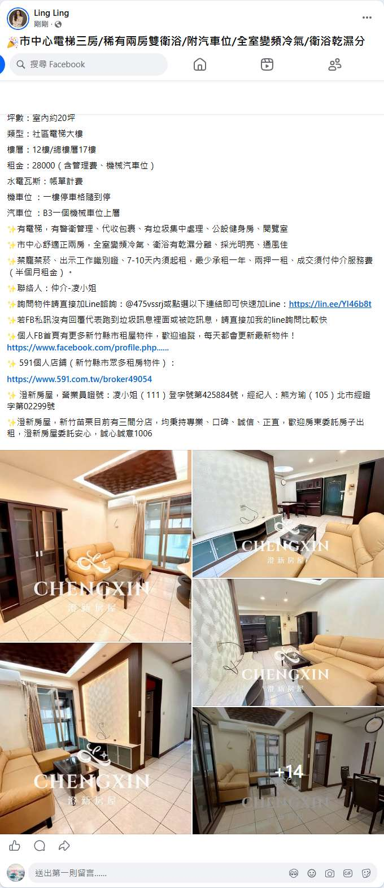 看原始刊登 → 查看貼文原文Ling Ling 市中心電梯三房/稀有兩房雙衛浴/附汽車位/全室變頻冷氣/衛浴乾濕分離/警衛管理 地址：新竹市東區中華路三段（臨新竹火車站、遠百商圈、城隍廟、南清大、國泰醫院、竹蓮市場、站前圓環，生活機能完善，往返市區、園區都便利） 格局：2房 2廳 2衛 1陽 坪數：室內約20坪 類型：社區電梯大樓 樓層：12樓/總樓層17樓 租金：28000（含管理費、機械汽車位） 水電瓦斯：帳單計費 機車位 ：一樓停車格隨到停 汽車位 ：B3一個機械車位上層 有電梯，有警衛管理、代收包裹、有垃圾集中處理、公設健身房、閱覽室 市中心舒適正兩房，全室變頻冷氣、衛浴有乾濕分離、採光明亮、通風佳 禁寵禁菸、出示工作識別證、7-10天內須起租，最少承租一年、兩押一租、成交須付仲介服務費（半個月租金）。 聯絡人：仲介-凌小姐 詢問物件請直接加Line諮詢：@475vssrj或點選以下連結即可快速加Line： 若FB私訊沒有回覆代表跑到垃圾訊息裡面或被吃訊息，請直接加我的line詢問比較快 個人FB首頁有更多新竹縣市租屋物件，歡迎追蹤，每天都會更新最新物件！ 591個人店鋪（新竹縣市眾多租房物件）： 澄新房屋，營業員證號：凌小姐（111）登字號第425884號，經紀人：熊方瑜（105）北市經證字第02299號 澄新房屋，新竹苗栗目前有三間分店，均秉持專業、口碑、誠信、正直，歡迎房東委託房子出租，澄新房屋委託安心，誠心誠意1006 +14 送出第一則留言…… 貼文內有 4 個連結（已檢查）
| 28,000 HTTP 400 | 3房—廳2衛 完全符合 | 12F | 未註明 | 有 | 有 | 未提及 | FB 貼文 此物件未公開電話，請點標題到原網站聯絡 |
| 28,000 已下架(404) | 3房1廳2衛 差一點 | 1F~2F/6F | 未註明 | 無 | 未註明 | 未提及 | 仲介 鍾先生 · 聚鑫企業社好市家房屋 | |
| 28,000 已下架(404) | 3房1廳2衛 差一點 | 2F/5F | 無 | 無 | 未註明 | 未提及 | 屋主 黃先生 | |
 | 28,500 | 3房2廳1衛 差一點 | 2F/5F | 無 | 無 | 未註明 | 未提及 | 仲介 林先生 · 科園房屋 |
| 28,500 | 3房2廳2衛 完全符合 | 12F/15F | 租金已含 | 有 | 未註明 | 未提及 | 仲介 葉先生 · 聚鑫企業社好市家房屋 | |
| 28,500 已下架(404) | 3房2廳2衛 完全符合 | 11F/21F | 租金已含 | 有 | 有 | 未提及 | 仲介 荷蘭村達人林冠亨 · 荷蘭村社區達人 | |
| 28,500 已下架(404) | 2房2廳2衛 差一點 | 5F/5F | 租金已含 | 有 | 有 | 未提及 | 仲介 曾小姐 · 言昇築不動產仲介有限公司 | |
| 28,500 已下架(404) | 3房2廳2衛 完全符合 | 11F/21F | 未註明 | 有 | 有 | 未提及 | 仲介 洪先生 · 城毅國際投資有限公司 | |
| 28,500 已下架(404) | 2房2廳2衛 差一點 | 8F/9F | 租金已含 | 有 | 有 | 未提及 | 仲介 劉小姐 · 不動產經紀業及租貨住宅服務業 | |
| 28,500 已下架(404) | 2房2廳2衛 差一點 | 7F/9F | 租金已含 | 無 | 未註明 | 未提及 | 仲介 劉小姐 · 眾軒有限公司 | |
| 28,700 | 3房2廳2衛 完全符合 | 3F/5F | 租金已含 | 無 | 有 | 未提及 | 仲介 曾先生 · 昇玖專業不動產仲介經紀有限公司 | |
| 28,700 已下架(404) | 3房2廳2衛 完全符合 | 3F/5F | 租金已含 | 無 | 有 | 未提及 | 仲介 藍先生 · 昇玖專業不動產仲介經紀有限公司 | |
| 28,800 | 3房2廳2衛 完全符合 | 13F/14F | 租金已含 | 有 | 有 | 未提及 | 仲介 吳先生 · 星鴻股份有限公司 | |
| 28,800 | 3房2廳2衛 完全符合 | 10F/14F | 3,300元/月 | 有 | 有 | 未提及 | 代理人 鄧先生 | |
| 29,000 | 4房1廳2衛 差一點 | 8F/14F | 3,700元/月 | 有 | 有 | 不可 | 仲介 王先生 · 兆基屋管股份有限公司 | |
| 29,000 | 3房2廳2衛 完全符合 | 9F/12F | 1,000元/月 | 有 | 未註明 | 未提及 | 仲介 古小姐 · 家樂仲介有限公司 | |
| 29,000 | 5房1廳2衛 差一點 | 8F/10F | 1,850元/月 | 有 | 無 | 未提及 | 屋主 羅小姐 | |
| 29,000 | 3房1廳2衛 差一點 | 6F/7F | 1,800元/月 | 有 | 未註明 | 未提及 | 仲介 洪小姐 · 大管家租屋 | |
| 29,000 | 3房2廳2衛 完全符合 | 14/20樓 | 未註明 | 有 | 未註明 | 未提及 | 此物件未公開電話，請點標題到原網站聯絡 | |
| 29,000 已下架(404) | 3房2廳2衛 完全符合 | 5F/6F | 2,500元/月 | 有 | 有 | 有提及(需確認) | 仲介 温先生 · 大管家租賃住宅代管有限公司 | |
| 29,000 已下架(404) | 3房2廳2衛 完全符合 | 5F/6F | 2,500元/月 | 有 | 有 | 未提及 | 仲介 鄭先生 · 租事大喆物業租貸管理顧問 | |
| 29,000 已下架(404) | 3房2廳2衛 完全符合 | 4F/6F | 租金已含 | 有 | 有 | 未提及 | 仲介 江先生 · 王淑美 | |
| 29,000 已下架(404) | 4房2廳2衛 超規格 | 2F/7F | 10,000元/月 | 無 | 有 | 未提及 | 屋主 姚先生 | |
| 29,000 已下架(404) | 4房1廳4衛 差一點 | 2F/13F | 1,600元/月 | 有 | 未註明 | 未提及 | 仲介 賀先生 · 科園房屋 | |
| 29,000 已下架(404) | 3房2廳2衛 完全符合 | 12F/17F | 租金已含 | 有 | 有 | 未提及 | 屋主 程先生 | |
| 29,000 已下架(404) | 4房1廳4衛 差一點 | 2F/7F | 1,600元/月 | 有 | 未註明 | 未提及 | 仲介 林先生 · 科園房屋 | |
| 29,000 已下架(404) | 4房1廳2衛 差一點 | 3F/5F | 未註明 | 無 | 未註明 | 未提及 | 屋主 鍾小姐 | |
| 29,500 | 3房2廳2衛 完全符合 | 3/5樓 | 未註明 | 有 | 未註明 | 未提及 | 此物件未公開電話，請點標題到原網站聯絡 | |
| 29,500 已下架(404) | 4房2廳3衛 超規格 | 1F~2F/2F | 未註明 | 無 | 未註明 | 未提及 | 仲介 古小姐 · 家樂仲介有限公司 | |
| 29,800 已下架(404) | 3房2廳2衛 完全符合 | 13F/14F | 租金已含 | 有 | 有 | 未提及 | 仲介 吳先生 · 星鴻股份有限公司 | |
| 29,800 已下架(404) | 3房2廳2衛 完全符合 | 4F/12F | 租金已含 | 無 | 未註明 | 未提及 | 屋主 張太太 | |
| 30,000 | 4房2廳2衛 超規格 | 整棟/4F | 租金已含 | 無 | 有 | 不可 | 仲介 黃先生 · 大管家租賃住宅代管有限公司 | |
| 30,000 | 3房2廳2衛 完全符合 | 1F~2F/2F | 未註明 | 無 | 有 | 有提及(需確認) | 仲介 古小姐 · 家樂仲介有限公司 | |
| 30,000 | 3房2廳2衛 完全符合 | 5F/5F | 1,500元/月 | 有 | 有 | 未提及 | 仲介 蔡先生 · 展毅不動產經紀有限公司 | |
 | 30,000 | 3房2廳2衛 完全符合 | 4F/9F | 3,000元/月 | 有 | 有 | 未提及 | 仲介 葉小姐 · 專業房屋租賃代管 |
 看原始刊登 → 同一物件另有 3 筆刊登（不同仲介）
| 30,000 | 3房2廳2衛 完全符合 | 10F/19F | 1,800元/月 | 有 | 有 | 未提及 | 仲介 彭小姐 · 日茪寓房屋有限公司 |
| 30,000 | 3房2廳2衛 完全符合 | 3F/5F | 無 | 無 | 未註明 | 未提及 | 仲介 楊先生 · 偉鈞不動產仲介經紀有限公司 | |
| 30,000 | 3房2廳2衛 完全符合 | 4F/12F | 租金已含 | 無 | 有 | 未提及 | 屋主 范小姐 | |
| 30,000 | 3房2廳2衛 完全符合 | 3F/5F | 無 | 無 | 未註明 | 未提及 | 仲介 李小姐 · 巢聚企業社 | |
| 30,000 | 3房2廳2衛 完全符合 | 6F/11F | 3,944元/月 | 有 | 有 | 未提及 | 屋主 耿小姐 | |
 | 30,000 | 4房2廳2衛 超規格 | 3F/5F | 未註明 | 無 | 未註明 | 未提及 | 仲介 陳先生 · 大管家房屋管理家樂仲介有限公司 |
| 30,000 | 3房1廳2衛 差一點 | 2F/7F | 1,200元/月 | 有 | 未註明 | 未提及 | 仲介 吳先生 · 沁淇股份有限公司 | |
| 30,000 | 3房2廳2衛 完全符合 | 3F/6F | 無 | 無 | 未註明 | 未提及 | 代理人 0先生 | |
| 30,000 | 5房2廳2衛 超規格 | 1F~3F/3F | 無 | 無 | 有 | 未提及 | 仲介 顏小姐 · 陞豐開發有限公司 | |
| 30,000 | 8房2廳3衛 超規格 | 1 / 2 | 無 | 未註明 | 未註明 | 未提及 | ||
| 30,000 | 3房2廳2衛 完全符合 | 2/5樓 | 未註明 | 未註明 | 未註明 | 未提及 | 此物件未公開電話，請點標題到原網站聯絡 | |
| 30,000 | 5房2廳3衛 超規格 | 2~3/3樓 | 未註明 | 未註明 | 未註明 | 未提及 | 此物件未公開電話，請點標題到原網站聯絡 | |
| 30,000 | 3房—廳3衛 超規格 | 1~4/4樓 | 未註明 | 未註明 | 未註明 | 未提及 | 此物件未公開電話，請點標題到原網站聯絡 | |
| 30,000 | 6房3廳2衛 超規格 | 1~3 / 3 | 無 | 未註明 | 未註明 | 未提及 | ||
| 30,000 | 3房2廳2衛 完全符合 | 9/10樓 | 未註明 | 有 | 未註明 | 未提及 | ||
| 30,000 已下架(404) | 3房2廳2衛 完全符合 | 4F/24F | 3,516元/月 | 有 | 有 | 未提及 | 仲介 梁小姐 · 達豐不動產仲介經紀業 | |
| 30,000 已下架(404) | 3房2廳2衛 完全符合 | 12F/14F | 租金已含 | 有 | 有 | 未提及 | 仲介 劉小姐 · 樂多不動產經紀有限公司 | |
| 30,000 已下架(404) | 3房2廳2衛 完全符合 | 3F/12F | 租金已含 | 有 | 有 | 未提及 | 仲介 林小姐 · 環球國際地產有限公司 | |
| 30,000 已下架(404) | 3房2廳2衛 完全符合 | 12F/14F | 2,247元/月 | 有 | 有 | 未提及 | 仲介 勇氣小姐 · 晶天不動產仲介經紀有限公司 | |
| 30,000 已下架(404) | 4房2廳2衛 超規格 | 9F/14F | 2,706元/月 | 有 | 有 | 未提及 | 仲介 鄭小姐 · 真心地產開發有限公司 | |
| 30,000 已下架(404) | 5房2廳3衛 超規格 | 5F/11F | 2,814元/月 | 有 | 有 | 未提及 | 仲介 曾先生 · 家樂仲介有限公司 | |
| 30,000 已下架(404) | 3房1廳2衛 差一點 | 1F/13F | 租金已含 | 有 | 有 | 未提及 | 仲介 陳小姐 · 大管家租賃住宅代管有限公司 | |
| 30,000 已下架(404) | 5房1廳6衛 差一點 | 整棟/4F | 未註明 | 無 | 未註明 | 可 | 仲介 楊小姐 · 大管家租賃住宅代管有限公司 | |
| 30,000 已下架(404) | 2房2廳3衛 差一點 | 整棟/4F | 未註明 | 無 | 有 | 未提及 | 仲介 朱先生 · 大管家租賃住宅代管有限公司 | |
| 30,000 已下架(404) | 3房1廳2衛 差一點 | 4F/7F | 2,000元/月 | 有 | 有 | 未提及 | 仲介 徐先生 · 臻愛房屋企業社 | |
| 30,000 已下架(404) | 2房2廳2衛 差一點 | 11F/11F | 2,700元/月 | 有 | 有 | 未提及 | 仲介 紀小姐 · 長冠不動產仲介經紀有限公司 | |
| 30,000 已下架(404) | 3房2廳2衛 完全符合 | 2F/5F | 租金已含 | 有 | 有 | 未提及 | 屋主 何小姐 | |
| 30,000 已下架(404) | 3房2廳2衛 完全符合 | 2F/8F | 3,000元/月 | 有 | 未註明 | 未提及 | 仲介 劉小姐 · 澄新房屋股份有限公司 | |
| 30,000 已下架(404) | 3房2廳2衛 完全符合 | 11F/28F | 3,000元/月 | 無 | 未註明 | 未提及 | 仲介 林先生 · 心苑不動產有限公司 | |
| 30,000 已下架(404) | 3房2廳2衛 完全符合 | 11F/14F | 2,380元/月 | 有 | 有 | 未提及 | 屋主 吳先生 | |
| 30,000 已下架(404) | 3房2廳2衛 完全符合 | 3F/5F | 租金已含 | 無 | 未註明 | 未提及 | 仲介 擇宥住宅 · 擇宥住宅有限公司 | |
| 30,000 已下架(404) | 8房2廳4衛 超規格 | 整棟/2F | 無 | 無 | 未註明 | 未提及 | 仲介 陳小姐 · 上等不動產 | |
| 30,000 已下架(404) | 4房2廳3衛 超規格 | 1F~3F/3F | 未註明 | 無 | 有 | 未提及 | 仲介 陳先生 · 台勝不動產仲介有限公司 | |
| 30,000 已下架(404) | 3房2廳2衛 完全符合 | 10F/12F | 2,900元/月 | 有 | 未註明 | 未提及 | 仲介 朱先生 · 大管家租賃住宅代管有限公司 | |
| 30,000 已下架(404) | 3房2廳2衛 完全符合 | 7F/7F | 租金已含 | 有 | 未註明 | 未提及 | 仲介 陳羿汝 · 躍馬國際土地開發有限公司 | |
| 30,000 已下架(404) | 3房2廳2衛 完全符合 | 3F/5F | 未註明 | 無 | 未註明 | 未提及 | 仲介 吳小姐 · 大管家租賃住宅代管有限公司 | |
| 30,000 已下架(404) | 4房2廳3衛 超規格 | 2F/5F | 未註明 | 無 | 未註明 | 未提及 | 仲介 曾先生 · 家樂仲介有限公司 | |
| 30,000 已下架(404) | 4房2廳2衛 超規格 | 3F/5F | 未註明 | 無 | 未註明 | 未提及 | 仲介 蔡先生 · 澄新房屋 | |
| 30,000 已下架(404) | 4房2廳2衛 超規格 | 3F/5F | 未註明 | 無 | 未註明 | 未提及 | 仲介 洪小姐 · 澄新房屋股份有限公司 | |
| 30,000 已下架 | 3房2廳2衛 完全符合 | 9 / 13 | 另計(金額未公開) | 有 | 有 | 未提及 | ||
| 30,000 已下架 | 3房2廳2衛 完全符合 | 9 / 10 | 另計(金額未公開) | 有 | 有 | 未提及 | ||
| 30,000 已下架 | 3房2廳1衛 差一點 | 6 / 7 | 另計(金額未公開) | 有 | 有 | 未提及 | ||
| 30,000 已下架 | 8房2廳3衛 超規格 | 1 / 2 | 無 | 未註明 | 未註明 | 未提及 | ||
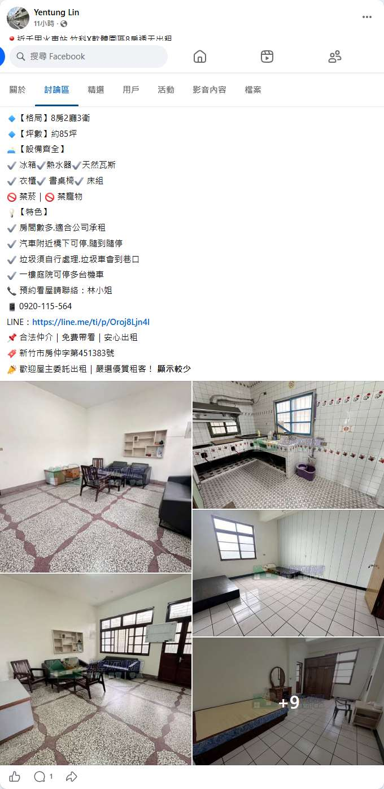 看原始刊登 → 查看貼文原文Yentung Lin 近千甲火車站.竹科X軟體園區8房透天出租 【租金】30,000/月 電費水費瓦斯費另計：依照帳單金額計算 【地點】千甲路 【樓層】1-2樓 【格局】8房2廳3衛 【坪數】約85坪 【設備齊全】 冰箱 熱水器 天然瓦斯 衣櫃 書桌椅 床組 禁菸｜ 禁寵物 【特色】 房間數多.適合公司承租 汽車附近橋下可停.隨到隨停 垃圾須自行處理.垃圾車會到巷口 一樓庭院可停多台機車 預約看屋請聯絡：林小姐 0920-115-564 LINE： 合法仲介｜免費帶看｜安心出租 新竹市房仲字第451383號 歡迎屋主委託出租｜嚴選優質租客！ 顯示較少 +9 貼文內有 2 個連結（已檢查）
| 30,000 HTTP 400 | 8房—廳3衛 超規格 | 2F | 未註明 | 未註明 | 未註明 | 未提及 | FB 貼文 |
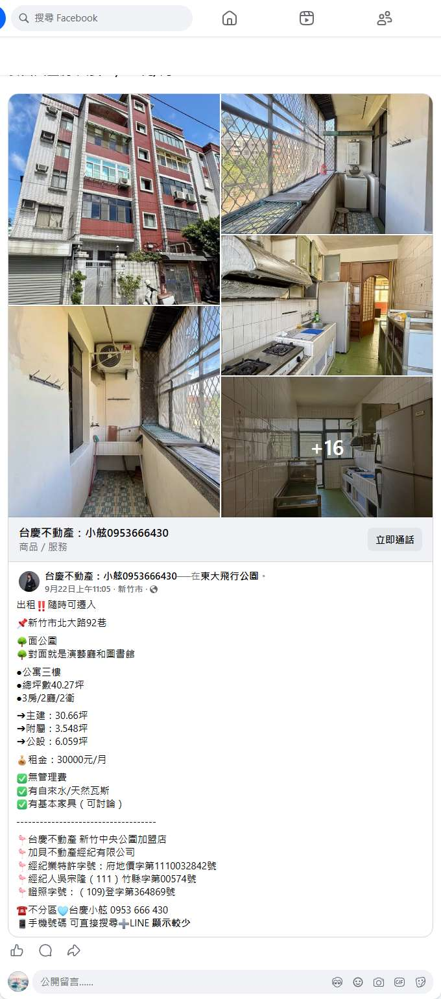 看原始刊登 → 查看貼文原文林益舷 大約 1 小時前 降價餒 公園大三房 只要30,000元/月 +16 台慶不動產：小舷0953666430 商品／服務 台慶不動產：小舷0953666430──在東大飛行公園。 新竹市 出租 隨時可遷入 新竹市北大路92巷 面公園 對面就是演藝廳和圖書館 ●公寓三樓 ●總坪數40.27坪 ●3房/2廳/2衛 ➔主建：30.66坪 ➔附屬：3.548坪 ➔公設：6.059坪 租金：30000元/月 無管理費 有自來水/天然瓦斯 有基本家具（可討論） ------------------------------------ 台慶不動產 新竹中央公園加盟店 加貝不動產經紀有限公司 經紀業特許字號：府地價字第1110032842號 經紀人吳宗隆（111）竹縣字第00574號 證照字號：（109)登字第364869號 不分區 台慶小舷 0953 666 430 手機號碼 可直接搜尋 LINE 顯示較少 公開留言…… 貼文內有 1 個連結（已檢查）
| 30,000 HTTP 400 | 3房—廳2衛 完全符合 | — | 未註明 | 未註明 | 未註明 | 未提及 | FB 貼文 |
| 30,000 已下架(404) | 5房2廳3衛 超規格 | 1F~3F/3F | 無 | 無 | 無 | 未提及 | 仲介 楊先生 · 偉鈞不動產仲介經紀有限公司 | |
| 30,000 已下架(404) | 5房1廳3衛 差一點 | 整棟/3F | 無 | 無 | 未註明 | 可 | 仲介 楊先生 · 全球不動產經紀有限公司 | |
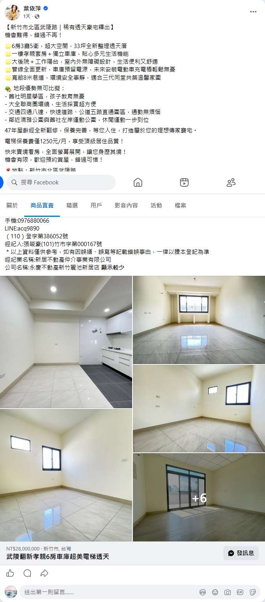 看原始刊登 → 查看貼文原文葉依萍 【新竹市北區武陵路｜稀有透天豪宅釋出】 機會難得，錯過不再！ 6房3廳5衛，超大空間，33坪全新整理透天厝 一樓孝親套房＋獨立車庫，貼心多元生活機能 大後院＋工作陽台，室內外無障礙設計，生活便利又舒適 管線全面更新，車庫預留電源，未來安裝電動車充電樁輕鬆無憂 寬敞8米巷道，環境安全寧靜，適合三代同堂共築溫馨家園 地段優勢無可比擬： - 舊社明星學區，孩子教育無憂 - 大全聯商圈環繞，生活採買超方便 - 交通四通八達，快速道路、公道五路直通園區，通勤無煩惱 - 鄰近湳雅公園與舊社左岸運動公園，休閒運動一步到位 47年屋齡經全新翻修，保養完善，等您入住，打造屬於您的理想傳家寶宅。 電梯保養費僅1250元/月，享受頂級居住品質！ 快來實境看房，全面螢幕展開，讓您身歷其境！ 機會有限，歡迎預約賞屋，錯過可惜！ 地點：新竹市北區武陵路 格局：6房3廳5衛 建坪：33.027坪 車位：獨立車庫 立即聯絡，讓這間夢想好宅成為您的新家！ 姓名:葉依萍 手機:0976880066 LINE:acq9890 （110）登字第386052號 經紀人:張峻豪(101)竹市字第000167號 ＊以上資料僅供參考，如有因誤繕、誤寫等記載錯誤事由，一律以謄本登記為準 經紀業名稱:新居不動產仲介事業有限公司 公司名稱:永慶不動產新竹麗池新居店 顯示較少 +6 NT$28,000,000 · 新竹市, 台灣 武陵翻新孝親6房車庫超美電梯透天 發訊息 送出第一則留言…… 貼文內有 1 個連結（已檢查）
| 1,250 價格異常HTTP 400 | 6房3廳5衛 超規格 | — | 未註明 | 未註明 | 未註明 | 未提及 | FB 貼文 |
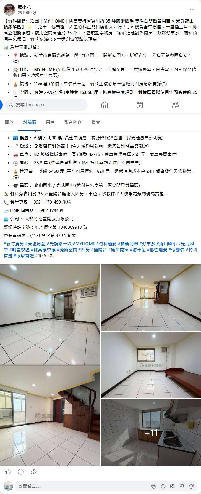 看原始刊登 → 查看貼文原文施小八 23分鐘前 【竹科關新生活圈｜MY HOME｜挑高雙樓層實用約 35 坪魔術四房‧雙陽台雙衛皆開窗 × 光武龍山頂級學區】 「免千二低門檻，入主竹科正門口魔術大四房！」6 樓黃金中樓層，一層僅三戶。挑高立體雙樓層，使用空間高達約 35 坪，下層規劃孝親房，衛浴通通對外開窗。緊鄰好市多、關新商圈與交流道，竹科家庭成家一步到位的超殺神案！ 房屋基礎規格： 地點： 新竹市東區光復路一段 (竹科門口、關新商圈旁、近好市多、公道五路與國道交流道) 社區： MY HOME (全區僅 152 戶純住社區、中庭花園、兒童遊戲室、圖書室、24H 保全代收包裹、垃圾集中專區) 價格： 11xx 萬 (單價：單價含車位，竹科正核心帶車位魔術四房絕版震撼價) 空間： 總建 29.921 坪 (主建物 16.858 坪，挑高樓中樓規劃，雙樓層實際使用空間高達約 35 坪！) 梯戶： 一層僅三戶！ (單純梯戶比、磁扣門禁出入極度安心) 土地： 精華大地坪 5.068 坪 (光復路一段寸土寸金高含金量土地持分，長線抗跌保值) 格局： 4 房 2 廳 2 衛 (朝向東北，配置雙陽台；下層擁孝親房＋大 L 型廚房，上層三間房＋開放大空間) 樓層： 6 樓 / 共 10 樓 (黃金中樓層！視野舒服無壓迫、採光通風自然明亮) 衛浴： 衛浴皆有對外窗！ (全天候通風乾爽、徹底告別發霉與潮濕) 車位： B2 坡道機械車位上層 (編號 B2-16，停車管理費僅 250 元，愛車專屬車位) 屋齡： 28.8 年 (結構穩固扎實，低公設比與超大使用空間兼具) 管理費： 季繳 5460 元 (平均每月僅約 1820 元，超低持有成本享 24H 飯店級全天候物業守護) 學區： 龍山國小 / 光武國中 (竹科指名度第一頂尖明星雙學區) 竹科旁實用約 35 坪雙陽台魔術大四房＋車位，秒殺釋出！快來電預約現場賞屋！ 賞屋專線： 0921-179-499 施琦 LINE 同電話： 0921179499 公司： 大新竹地產開發有限公司 經紀特許字號：府地價字第 1040069913 號 營業員證號：(113) 登字第 479726 號 #新竹買房 #東區房產 #光復路一段 #MYHOME #竹科通勤 #關新商圈 #好市多 #龍山國小 #光武國中 #明星學區 #挑高樓中樓 #魔術空間 #四房 #雙陽台 #衛浴開窗 #附車位 #低管理費 #低總價 #竹科首選 #成家首選 #1026285 +11 公開留言…… 貼文內有 1 個連結（已檢查）
| 1,820 價格異常HTTP 400 | 4房—廳2衛 超規格 | 6F | 250 元 | 未註明 | 有 | 未提及 | FB 貼文 |
| 7,500 價格異常已下架(404) | 4房2廳2衛 超規格 | 4F/5F | 租金已含 | 無 | 未註明 | 未提及 | 屋主 呂先生 | |
| 18,500 | 3房2廳3衛 超規格 | 3F/3F | 無 | 無 | 未註明 | 未提及 | 仲介 周先生 · 興龍不動產有限公司 | |
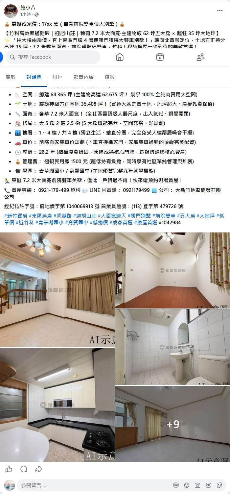 看原始刊登 → 查看貼文原文施小八 大約 1 小時前 震撼成家價：17xx 萬（自帶前院雙車位大別墅） 【竹科高效率通勤圈｜迎旭山莊｜稀有 7.2 米大面寬‧主建物破 62 坪五大房 × 超狂 35 坪大地坪】 「用大樓兩房價，直上東區門牌 4 層樓獨門獨院大雙車別墅！」朝向北尊榮定位，土地方正持分高達 35 坪。7.2 米霸氣面寬、前院輕鬆停雙車，竹科工程師換屋一步到位的無敵首選！ 房屋基礎規格： 地點： 新竹市東區明湖路 (迎旭山莊、明湖生活圈黃金軸線上) 型態： 東區精華獨門獨院別墅 (有天有地、環境舒適單純、寧靜住宅街廓) 價格： 17xx 萬 (總價完勝現代鳥籠大樓) 空間： 總建 68.365 坪 (主建物高達 62.675 坪！ 幾乎 100% 全純肉實用大空間) 土地： 震撼神級方正基地 35.408 坪！ (買透天就是買土地，地坪超大、產權扎實保值) 面寬： 奢華 7.2 米大面寬！ (全社區最頂級大器尺度，出入氣派、視覺開闊) 格局： 大 5 房 2 廳 2.5 衛 (5 大房機能完善，空間充裕、好規劃) 樓層： 1 ~ 4 樓 / 共 4 樓 (獨立生活、垂直分層，完全免受大樓鄰居噪音干擾) 車位： 前院自家雙車位規劃 (下車直接進家門，家庭雙車通勤的頂級完美配置) 屋齡： 28.2 年 (結構厚實穩固，東區成熟核心門牌，長線抗通膨核心資產) 管理費： 極親民月繳 1500 元 (超低持有負擔，同時享有社區單純管理與維護) 學區： 青草湖國小 / 育賢國中 (在地優質完整九年就學機能) 東區 7.2 米大面寬前院雙車美墅，僅此一戶錯過不再！快來電預約現場賞屋！ 賞屋專線： 0921-179-499 施琦 LINE 同電話： 0921179499 公司： 大新竹地產開發有限公司 經紀特許字號：府地價字第 1040069913 號 營業員證號：(113) 登字第 479726 號 #新竹買房 #東區房產 #明湖路 #迎旭山莊 #大面寬透天 #獨門別墅 #前院雙車 #五大房 #大地坪 #低單價 #近竹科 #青草湖國小 #育賢國中 #低總價 #成家首選 #換屋首選 #1042984 +9 公開留言…… 貼文內有 1 個連結（已檢查）
| 1,500 價格異常HTTP 400 | 2房—廳5衛 差一點 | 4F | 未註明 | 未註明 | 未註明 | 未提及 | FB 貼文 |
| 5,000 價格異常 | 6房1廳6衛 差一點 | 1 / 3 | 無 | 未註明 | 未註明 | 未提及 | ||
| 9,000 | 2房—廳2衛 差一點 | 1F/1F | 未註明 | 無 | 未註明 | 未提及 | 屋主 高太太 | |
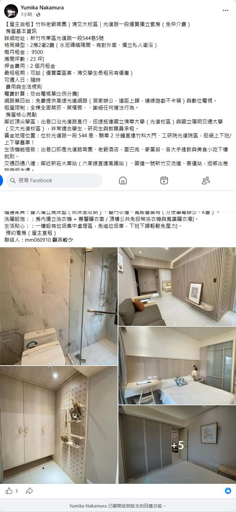 看原始刊登 → 查看貼文原文Yumika Nakamura 7小時前 【屋主自租】竹科老爺商圈｜清交大校區｜光復路一段優質獨立套房（免仲介費） 房屋基本資訊 詳細地址：新竹市東區光復路一段544巷5號 格局類型：2房2衛2廳（水泥磚牆隔間、有對外窗、獨立私人衛浴） 每月租金： 9500 房間坪數：23 坪] 押金費用：2 個月租金 最短租期：可談（優質園區客、清交學生長租另有優惠） 可遷入日：隨時 費用與生活規則 電費計算：依台電帳單比例分攤] 網路第四台：免費提供高速光纖網路（居家辦公、遠距上課、連線遊戲不卡頓）與數位電視。 租屋限制：全棟全面禁菸、禁檳榔、、謝絕任何違法行為。 房屋核心亮點 鄰近頂尖學區：出巷口沿光復路直行，迅速抵達國立清華大學（光復校區）與國立陽明交通大學（交大光復校區），非常適合學生、研究生與教職員承租。 黃金地理位置：位於光復路一段 544 巷，騎車 2 分鐘直達竹科大門、工研院光復院區，拒絕上下班/上下學塞車！ 生活機能極致：出巷口即是光復路商圈、老爺酒店，星巴克、麥當勞、各大手搖飲與美食小吃下樓就到。 交通四通八達：鄰近新莊火車站（六家線直達高鐵站）、國道一號新竹交流道、客運站，返鄉出差旅遊超方便。 屋主親自維護：免收半個月仲介費！修繕問題直接對屋主，熱心負責、回覆快速，居住有保障。 環境鬧中取靜：雖然緊鄰繁華的光復路幹道，但位於巷弄內，完美隔絕馬路喧囂，享受安靜讀書與睡眠空間。 精選家具與獨立家電 個人家電：分離式變頻冷氣（省電安靜）、單門/雙門冰箱、液晶電視。 精選家具：雙人獨立筒床墊（附床底收納）、雙門衣櫃、寬敞書桌椅（方便筆電辦公、K書）。 洗曬設施：：房內獨立洗衣機 + 專屬曬衣窗 / 頂樓公共免投幣洗衣機與寬廣曬衣場]。 生活貼心：：一樓設有垃圾集中處理區，免追垃圾車，下班下課輕鬆免壓力]。 預約看房（屋主直租） 聯絡人：mm060910 顯示較少 +5 Yumika Nakamura 已關閉這則貼文的回應功能。 貼文內有 1 個連結（已檢查）
| 9,500 HTTP 400 | 2房—廳2衛 差一點 | — | 未註明 | 未註明 | 未註明 | 未提及 | FB 貼文 此物件未公開電話，請點標題到原網站聯絡 |
| 14,500 | 3房2廳1衛 差一點 | 4F/5F | 無 | 無 | 未註明 | 未提及 | 仲介 kelly · 勁富不動產 | |
| 15,900 | 3房2廳1衛 差一點 | 6F/7F | 1,000元/月 | 有 | 未註明 | 未提及 | 仲介 楊茜茵 · 大管家租賃住宅代管有限公司 | |
| 16,500 已下架(404) | 3房2廳1衛 差一點 | 4F/5F | 無 | 無 | 未註明 | 不可 | 仲介 王先生 · 兆基屋管股份有限公司 | |
| 23,200 已下架(404) | 4房1廳2衛 差一點 | 2F/11F | 租金已含 | 有 | 有 | 未提及 | 仲介 楊先生 · 偉鈞不動產仲介經紀有限公司 | |
| 25,800 已下架(404) | 2房2廳2衛 差一點 | 2F/6F | 租金已含 | 有 | 有 | 未提及 | 仲介 唐小姐 · 晶天不動產仲介經紀有限公司 | |
| 25,800 已下架 | 2房2廳2衛 差一點 | 2 / 6 | 無 | 有 | 有 | 未提及 | ||
| 28,900 | 3房2廳1衛 差一點 | 13/14樓 | 未註明 | 有 | 有 | 未提及 | ||
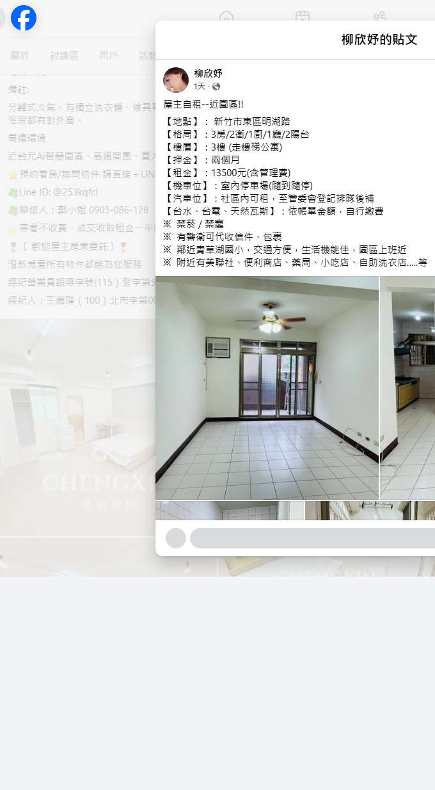 看原始刊登 → 查看貼文原文柳欣妤 屋主自租--近園區!! 【地點】： 新竹市東區明湖路 【格局】：3房/2衛/1廚/1廳/2陽台 【樓層】：3樓 (走樓梯公寓) 【押金】：兩個月 【租金】：13500元(含管理費) 【機車位】：室內停車場(隨到隨停) 【汽車位】：社區內可租，至管委會登記排隊後補 【台水、台電、天然瓦斯】：依帳單金額，自行繳費 ※ 禁菸 / 禁寵 ※ 有警衛可代收信件、包裹 ※ 鄰近青草湖國小，交通方便，生活機能佳，園區上班近 ※ 附近有美聯社、便利商店、藥局、小吃店、自助洗衣店…..等 顯示較少 +9 查看更多留言 Rachel Huang 請問何時可看 謝謝 回覆 查看1則回覆 Feng Ying 我想去看 回覆 查看1則回覆 公開留言…… 貼文內有 1 個連結（已檢查）
| 13,500 HTTP 400 | 3房—廳2衛 完全符合 | 3F | 未註明 | 未註明 | 未註明 | 未提及 | FB 貼文 此物件未公開電話，請點標題到原網站聯絡 |
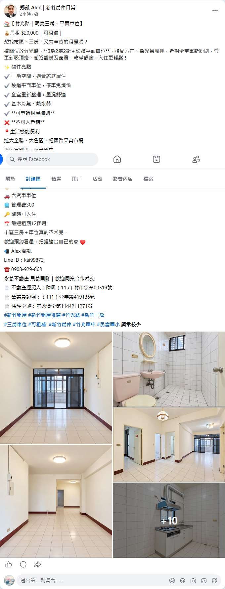 看原始刊登 → 查看貼文原文上線狀態指標 在線上 鄭凱 Alex｜新竹房仲日常 17分鐘前 【竹光路｜明亮三房＋平面車位】 月租 $20,000｜可租補｜ 想找市區、三房、又有車位的租屋嗎？ 這間位於竹光路，**3房2廳2衛＋坡道平面車位**，格局方正、採光通風佳，近期全室重新粉刷，並更新吸頂燈、衛浴設備及窗簾，乾淨舒適，入住更輕鬆！ 物件亮點 三房空間，適合家庭居住 坡道平面車位，停車免煩惱 全室重新整理，屋況舒適 基本冷氣、熱水器 **可申請租屋補助** **不可入戶籍** 生活機能便利 近大全聯、大魯閣、經國路果菜市場 近民富國小、竹光國中 近新竹國軍醫院、台大新竹分院 約3分鐘接68快速道路 前往竹科、竹北、高鐵都方便！ 月租｜20,000元 含汽車車位 管理費300 隨時可入住 最短租期12個月 市區三房＋車位真的不常見， 歡迎預約看屋，把握適合自己的家 Alex 鄭凱 Line ID：kai99873 0908-929-863 永義不動產 展義團隊｜歡迎同業合作成交 不動產經紀人：陳昕（115）竹市字第00319號 營業員證照：（111）登字第419136號 特許字號：府地價字第1144211271號 #新竹租屋 #新竹租屋推薦 #竹光路 #新竹三房 #三房車位 #可租補 #新竹房仲 #竹光國中 #民富國小 顯示較少 +10 送出第一則留言…… 貼文內有 1 個連結（已檢查）
| 20,000 HTTP 400 | 3房—廳2衛 完全符合 | — | 300 | 未註明 | 有 | 未提及 | FB 貼文 |
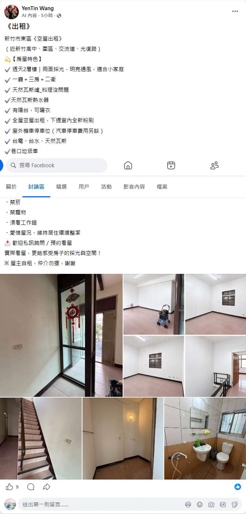 看原始刊登 → 查看貼文原文YenTin Wang AI 內容 大約 1 小時前 《出租》 新竹市東區 （近新竹高中、園區、交流道、光復路） 【房屋特色】 透天2層樓｜兩面採光，明亮通風，適合小家庭 一廳＋三房＋二衛 天然瓦斯爐_料理沒問題 天然瓦斯熱水器 有陽台，可曬衣 全屋空屋出租，下週室內全新粉刷 室外機車停車位（汽車停車位另談） 台電、台水、天然瓦斯 巷口垃圾車 近便利商店、蝦皮店到店、假日花市 【租金】月租 20,000元 押金2個月 【租屋條件】 ・禁菸 ・禁寵物 ・須看工作證 ・愛惜屋況、維持居住環境整潔 歡迎私訊詢問／預約看屋 實際看屋，更能感受房子的採光與空間！ ※ 屋主自租，仲介勿擾，謝謝 送出第一則留言…… 貼文內有 1 個連結（已檢查）
| 20,000 HTTP 400 | 3房—廳2衛 完全符合 | — | 未註明 | 未註明 | 未註明 | 未提及 | FB 貼文 此物件未公開電話，請點標題到原網站聯絡 |
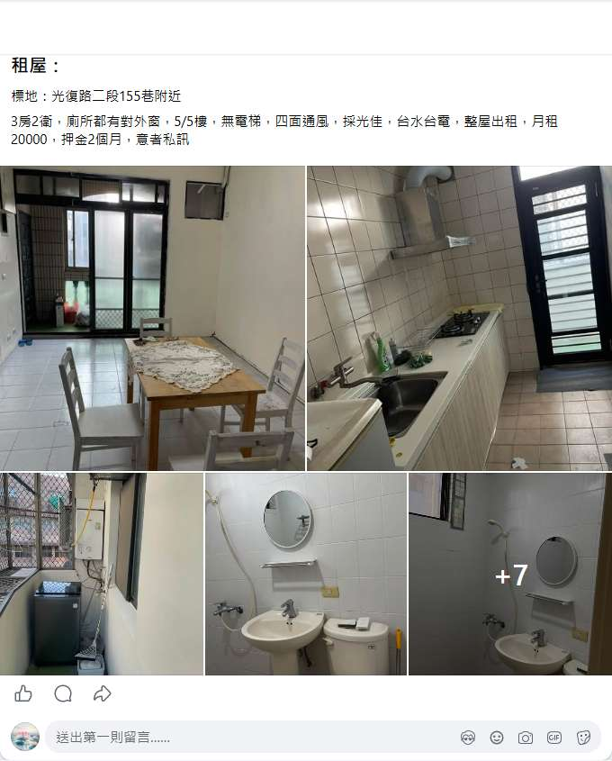 看原始刊登 → 查看貼文原文Lyndon Huang 大約 1 小時前 租屋： 標地：光復路二段155巷附近 3房2衛，廁所都有對外窗，5/5樓，無電梯，四面通風，採光佳，台水台電，整屋出租，月租20000，押金2個月，意者私訊 +7 送出第一則留言…… 貼文內有 1 個連結（已檢查）
| 20,000 HTTP 400 | 3房—廳2衛 完全符合 | 5F | 未註明 | 無 | 未註明 | 未提及 | FB 貼文 此物件未公開電話，請點標題到原網站聯絡 |
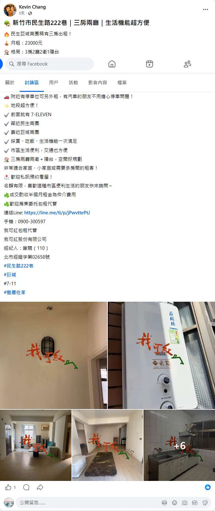 看原始刊登 → 查看貼文原文Kevin Chang 新竹市民生路222巷｜三房兩廳｜生活機能超方便 民生巨城商圈稀有三房出租！ 月租：23000元 格局：3房2廳2衛1陽台 水電：台水、台電 網路：包網路 管理費：每月200元 瓦斯：依實際使用自行繳費 附近有停車位可另外租，有汽車的朋友不用擔心停車問題！ 地段超方便！ 前面就有 7-ELEVEN 鄰近民生商圈 靠近巨城商圈 採買、吃飯、生活機能一次滿足 市區生活便利，交通也方便 三房兩廳兩衛＋陽台，空間好規劃 非常適合家庭、小家庭或需要多房間的租客！ 歡迎私訊預約看屋！ 名額有限，喜歡這種市區便利生活的朋友快來詢問～ 成交酌收半個月租金為仲介費用 歡迎房東委托包租代管 連絡Line: 手機：0900-300597 我可紅包租代管 我可紅股份有限公司 經紀人：謝競（110） 北市經證字第02658號 #民生路222巷 #巨城 #7-11 #整層住家 +6 公開留言…… 貼文內有 2 個連結（已檢查）
| 23,000 HTTP 400 | 3房2廳2衛 完全符合 | — | 200元 | 未註明 | 未註明 | 未提及 | FB 貼文 |
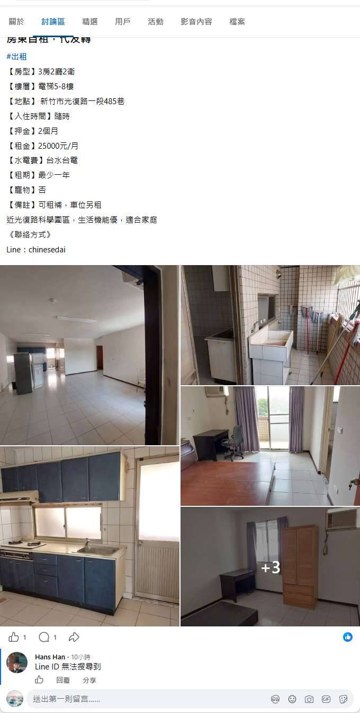 看原始刊登 → 查看貼文原文Teddy Dai 房東自租，代友轉 #出租 【房型】3房2廳2衛 【樓層】電梯5-8樓 【地點】 新竹市光復路一段485巷 【入住時間】隨時 【押金】2個月 【租金】25000元/月 【水電費】台水台電 【租期】最少一年 【寵物】否 【備註】可租補，車位另租 近光復路科學園區，生活機能優，適合家庭 《聯絡方式》 Line：chinesedai +3 Hans Han Line ID 無法搜尋到 回覆 送出第一則留言…… 貼文內有 1 個連結（已檢查）
| 25,000 HTTP 400 | 3房2廳2衛 完全符合 | 8F | 未註明 | 未註明 | 未註明 | 未提及 | FB 貼文 此物件未公開電話，請點標題到原網站聯絡 |
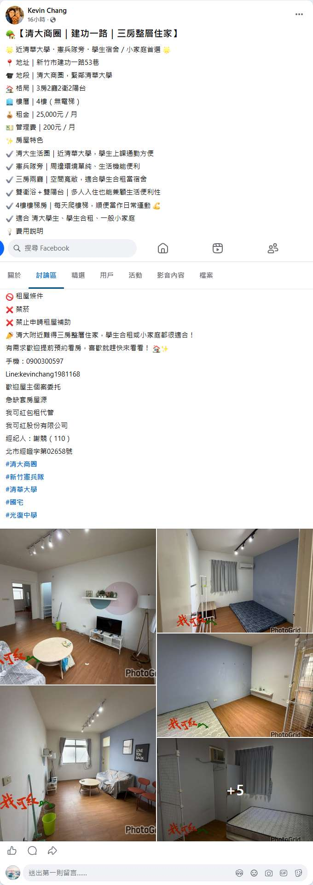 看原始刊登 → 查看貼文原文Kevin Chang 15小時前 【清大商圈｜建功一路｜三房整層住家】 近清華大學・憲兵隊旁・學生宿舍／小家庭首選 地址｜新竹市建功一路53巷 地段｜清大商圈，緊鄰清華大學 格局｜3房2廳2衛2陽台 樓層｜4樓（無電梯） 租金｜25,000元／月 管理費｜200元／月 房屋特色 清大生活圈｜近清華大學，學生上課通勤方便 憲兵隊旁｜周邊環境單純、生活機能便利 三房兩廳｜空間寬敞，適合學生合租當宿舍 雙衛浴＋雙陽台｜多人入住也能兼顧生活便利性 4樓樓梯房｜每天爬樓梯，順便當作日常運動 適合 清大學生、學生合租、一般小家庭 費用說明 水費：依帳單繳費 瓦斯：依帳單繳費 電費：依台電帳單繳費 管理費：$200／月 租屋條件 禁菸 禁止申請租屋補助 清大附近難得三房整層住家，學生合租或小家庭都很適合！ 有需求歡迎提前預約看房，喜歡就趕快來看看！ 手機：0900300597 Line:kevinchang1981168 歡迎屋主個案委托 急缺套房屋源 我可紅包租代管 我可紅股份有限公司 經紀人：謝競（110） 北市經證字第02658號 #清大商圈 #新竹憲兵隊 #清華大學 #國宅 #光復中學 +5 送出第一則留言…… 貼文內有 1 個連結（已檢查）
| 25,000 HTTP 400 | 3房—廳2衛 完全符合 | 4F | 200元 | 無 | 未註明 | 未提及 | FB 貼文 |
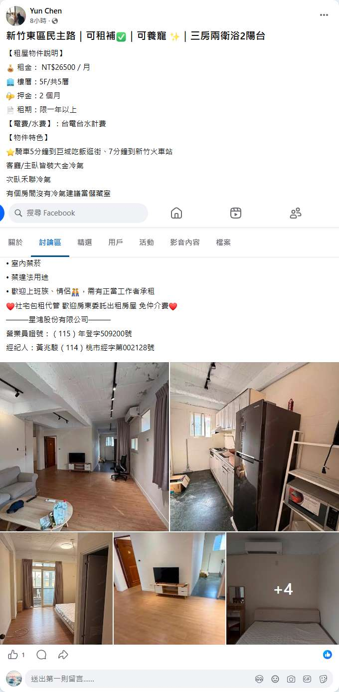 看原始刊登 → 查看貼文原文Yun Chen 新竹東區民主路｜可租補 ｜可養寵 ｜三房兩衛浴2陽台 【租屋物件說明】 租金： NT$26500／月 樓層：5F/共5層 押金：2 個月 租期：限一年以上 【電費/水費】：台電台水計費 【物件特色】 騎車5分鐘到巨城吃飯逛街、7分鐘到新竹火車站 客廳/主臥皆裝大金冷氣 次臥禾聯冷氣 有個房間沒有冷氣建議當儲藏室 傢俱全（包含冰箱洗衣機電視床架） 一卡皮箱即可進住 位於5樓，需步行樓梯，適合平時久坐～不介意爬樓梯的你 【租賃須知】 • 室內禁菸 • 禁違法用途 • 歡迎上班族、情侶 ，需有正當工作者承租 社宅包租代管 歡迎房東委託出租房屋 免仲介費 ———星鴻股份有限公司——— 營業員證號：（115）年登字509200號 經紀人：黃兆駿（114）桃市經字第002128號 +4 送出第一則留言…… 貼文內有 1 個連結（已檢查）
| 26,500 HTTP 400 | 3房—廳2衛 完全符合 | 5F | 未註明 | 未註明 | 未註明 | 未提及 | FB 貼文 此物件未公開電話，請點標題到原網站聯絡 |
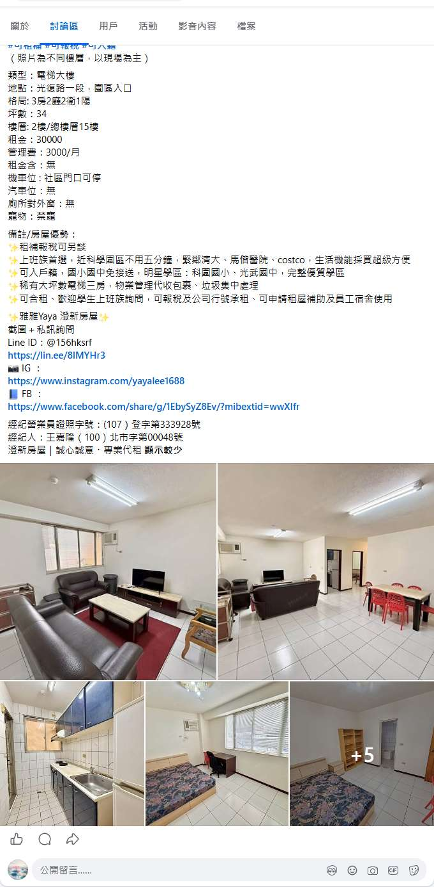 看原始刊登 → 查看貼文原文雅雅李 #可租補 #可報稅 #可入籍 （照片為不同樓層，以現場為主） 類型：電梯大樓 地點：光復路一段，園區入口 格局: 3房2廳2衛1陽 坪數：34 樓層: 2樓/總樓層15樓 租金：30000 管理費：3000/月 租金含：無 機車位 : 社區門口可停 汽車位：無 廁所對外窗：無 寵物：禁寵 備註/房屋優勢： 租補報稅可另談 上班族首選，近科學園區不用五分鐘，緊鄰清大、馬偕醫院、costco，生活機能採買超級方便 可入戶籍，國小國中免接送，明星學區：科園國小、光武國中，完整優質學區 稀有大坪數電梯三房，物業管理代收包裹、垃圾集中處理 可合租、歡迎學生上班族詢問，可報稅及公司行號承租、可申請租屋補助及員工宿舍使用 雅雅Yaya 澄新房屋 截圖＋私訊詢問 Line ID：@156hksrf IG ： FB ： 經紀營業員證照字號：(107）登字第333928號 經紀人：王嘉隆（100）北市字第00048號 澄新房屋｜誠心誠意・專業代租 顯示較少 +5 公開留言…… 貼文內有 4 個連結（已檢查）
| 30,000 HTTP 400 | 3房2廳2衛 完全符合 | 34F | 3000 | 有 | 未註明 | 未提及 | FB 貼文 此物件未公開電話，請點標題到原網站聯絡 |
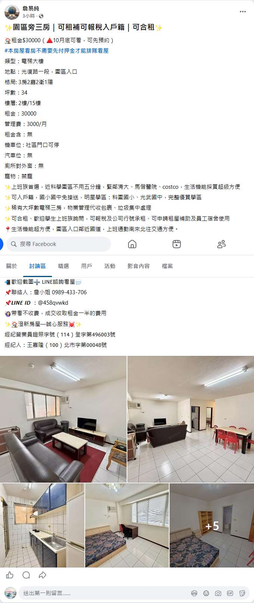 看原始刊登 → 查看貼文原文詹易純 園區旁三房｜可租補可報稅入戶籍｜可合租 租金$30000（ 10月底可看，可先預約） #本房屋看房不需要先付押金才能排隊看屋 類型：電梯大樓 地點：光復路一段，園區入口 格局: 3房2廳2衛1陽 坪數：34 樓層: 2樓/15樓 租金：30000 管理費：3000/月 租金含：無 機車位 : 社區門口可停 汽車位：無 廁所對外窗：無 寵物：禁寵 上班族首選，近科學園區不用五分鐘，緊鄰清大、馬偕醫院、costco，生活機能採買超級方便 可入戶籍，國小國中免接送，明星學區：科園國小、光武國中，完整優質學區 稀有大坪數電梯三房，物業管理代收包裹、垃圾集中處理 可合租、歡迎學生上班族詢問，可報稅及公司行號承租、可申請租屋補助及員工宿舍使用 生活機能超方便，園區入口鄰近國道，上班通勤南來北往交通方便。 ————————————————————— 本物件需十天內起租 最短租期為一年 ————————————————————— 歡迎截圖 𝖫𝖨𝖭𝖤諮詢看屋 聯絡人：詹小姐 0989-433-706 𝙇𝙄𝙉𝙀 𝙄𝘿 ：@458qvwkd 帶看不收費，成交收取租金一半的費用 澄新房屋—誠心服務 經紀營業員證照字號（𝟣𝟣𝟦）登字第𝟦𝟫𝟨𝟢𝟢𝟥號 經紀人：王嘉隆（𝟣𝟢𝟢）北市字第𝟢𝟢𝟢𝟦𝟪號 +5 送出第一則留言…… 貼文內有 1 個連結（已檢查）
| 30,000 HTTP 400 | 3房—廳2衛 完全符合 | 2F/15F | 3000 | 有 | 未註明 | 未提及 | FB 貼文 |
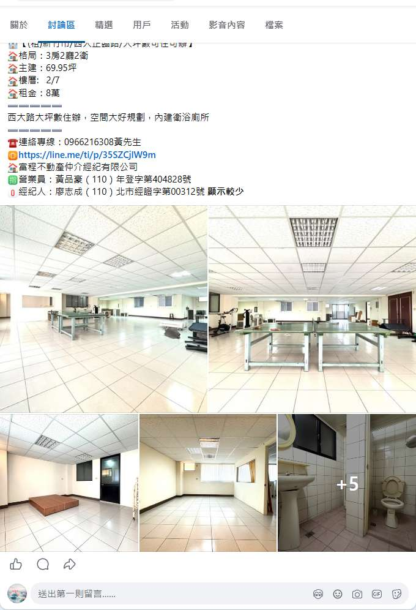 看原始刊登 → 查看貼文原文黃品豪 【(租)新竹市/西大正臨路/大坪數可住可辦】 格局：3房2廳2衛 主建：69.95坪 樓層: 2/7 租金：8萬 西大路大坪數住辦，空間大好規劃，內建衛浴廁所 連絡專線：0966216308黃先生 富程不動產仲介經紀有限公司 營業員：黃品豪（110）年登字第404828號 經紀人：廖志成（110）北市經證字第00312號 顯示較少 +5 送出第一則留言…… 貼文內有 2 個連結（已檢查）
| — HTTP 400 | 3房2廳2衛 完全符合 | — | 未註明 | 未註明 | 未註明 | 未提及 | FB 貼文 |
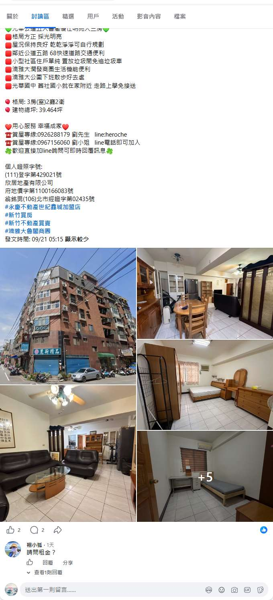 看原始刊登 → 查看貼文原文Mi Siao Liu 光華公道五大魯閣優仕明亮大三房 格局方正 採光明亮 屋況保持良好 乾乾淨淨可自行規劃 鄰近公道五路 68快速道路交通便利 小型社區住戶單純 置放垃圾間免追垃圾車 湳雅大潤發商圈生活機能便利 湳雅大公園下班散步好去處 光華國中 舊社國小就在家附近 走路上學免接送 格局: 3房(室)2廳2衛 建物總坪: 39.464坪 用心服務 幸福成家 賞屋專線:0926288179 劉先生 line:heroche 賞屋專線:0967156060 劉小姐 line電話即可加入 歡迎直接加line詢問可即時回覆訊息 個人證照字號: (111)登字第429021號 欣居地產有限公司 府地價字第1100166083號 翁銘男(106)北市經證字第02435號 #永慶不動產世紀鑫城加盟店 #新竹買房 #新竹不動產買賣 #湳雅大魯閣商圈 發文時間: 09/21 05:15 顯示較少 +5 祤小狐 請問租金？ 回覆 查看1則回覆 送出第一則留言…… 貼文內有 1 個連結（已檢查）
| — HTTP 400 | 3房—廳2衛 完全符合 | — | 未註明 | 未註明 | 未註明 | 未提及 | FB 貼文 |
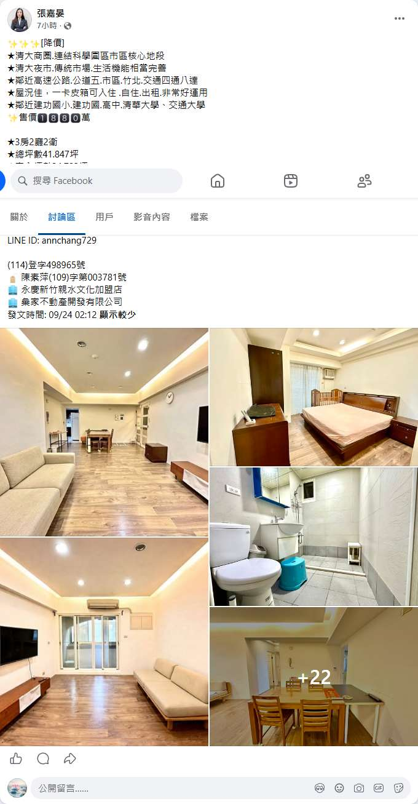 看原始刊登 → 查看貼文原文張嘉晏 6小時前 [降價] ★清大商圈.連結科學園區市區核心地段 ★清大夜市.傳統市場.生活機能相當完善 ★鄰近高速公路.公道五.市區.竹北.交通四通八達 ★屋況佳，一卡皮箱可入住 .自住.出租.非常好運用 ★鄰近建功國小.建功國.高中.清華大學、交通大學 售價 萬 ★3房2廳2衛 ★總坪數41.847坪 ★室內坪數24.702坪 ★陽台坪數3.606坪 ★樓層2樓/總樓層15樓 ★屋齡28年 賞屋專線：0919969945張嘉晏 LINE ID: annchang729 (114)登字498965號 陳素萍(109)字第003781號 永慶新竹親水文化加盟店 彙家不動產開發有限公司 發文時間: 09/24 02:12 顯示較少 +22 公開留言…… 貼文內有 1 個連結（已檢查）
| — HTTP 400 | 3房2廳2衛 完全符合 | 2F | 未註明 | 未註明 | 未註明 | 未提及 | FB 貼文 |
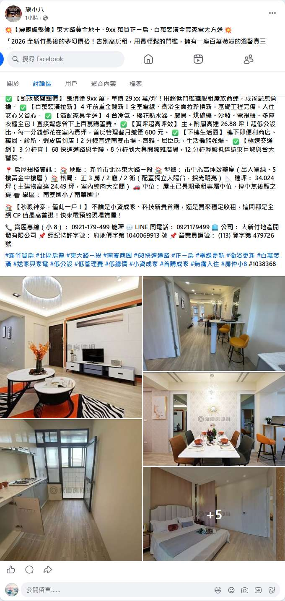 看原始刊登 → 查看貼文原文施小八 【震撼破盤價】東大路黃金地王 ‧ 9xx 萬買正三房 ‧ 百萬裝潢全套家電大方送 「2026 全新竹最後的夢幻價格！告別高房租，用最輕鬆的門檻，擁有一座百萬裝潢的溫馨真三房！」 在東區、北區兩房動輒衝破兩千萬的時代，這間正東大路上、5 樓黃金中樓層的實用大三房，總價竟然只要 9xx 萬！單價驚見絕版 2 字頭！屋主 4 年前砸重金百萬裝修，全室電線與衛浴全面更新，包含 4 台冷氣、櫻花廚具熱水器、沙發衣櫃全數隨屋附贈，真正實現「帶著行李箱就能直接入住」！ 【絕版破盤總價】 總價僅 9xx 萬，單價 29.xx 萬/坪！用超低門檻擺脫租屋族命運，成家毫無負擔。 【百萬裝潢拉新】 4 年前重金翻新！全室電線、衛浴全面拉新換新，基礎工程完備，入住安心又省心。 【滿配家具全送】 4 台冷氣、櫻花熱水器、廚具、烘碗機、沙發、電視櫃、多座衣櫃全包！直接幫您省下上百萬購置費。 【實坪超高坪效】 主＋附屬高達 26.88 坪！超低公設比，每一分錢都花在室內實坪，養房管理費月繳僅 600 元。 【下樓生活圈】 樓下即便利商店、藥局、診所、蝦皮店到店！2 分鐘直達南寮市場、寶雅、屈臣氏，生活機能強爆。 【極速交通網】 3 分鐘直上 68 快速道路與全聯，8 分鐘到大魯閣湳雅廣場，12 分鐘輕鬆抵達遠東巨城與台大醫院。 房屋規格資訊： 地點： 新竹市北區東大路三段 型態： 市中心高坪效華廈（出入單純、5 樓黃金中樓層） 格局： 正 3 房 / 2 廳 / 2 衛（配置獨立大陽台，採光明亮） 建坪： 34.024 坪（主建物高達 24.49 坪，室內純肉大空間） 車位： 屋主已長期承租專屬車位，停車無後顧之憂 學區： 南寮國小 / 南華國中 【秒殺神案，僅此一戶！】 不論是小資成家、科技新貴首購，還是買來穩定收租，這間都是全網 CP 值最高首選！快來電預約現場賞屋！ 賞屋專線（小 8）： 0921-179-499 施琦 LINE 同電話： 0921179499 公司： 大新竹地產開發有限公司 經紀特許字號： 府地價字第 1040069913 號 營業員證號： (113) 登字第 479726 號 #新竹買房 #北區房產 #東大路三段 #南寮商圈 #68快速道路 #正三房 #電線更新 #衛浴更新 #百萬裝潢 #送家具家電 #低公設 #低管理費 #低總價 #小資成家 #首購成家 #無痛入住 #房仲小8 #1038368 +5 公開留言…… 貼文內有 1 個連結（已檢查）
| — HTTP 400 | 3房—廳2衛 完全符合 | 5F | 600 元 | 未註明 | 未註明 | 未提及 | FB 貼文 |
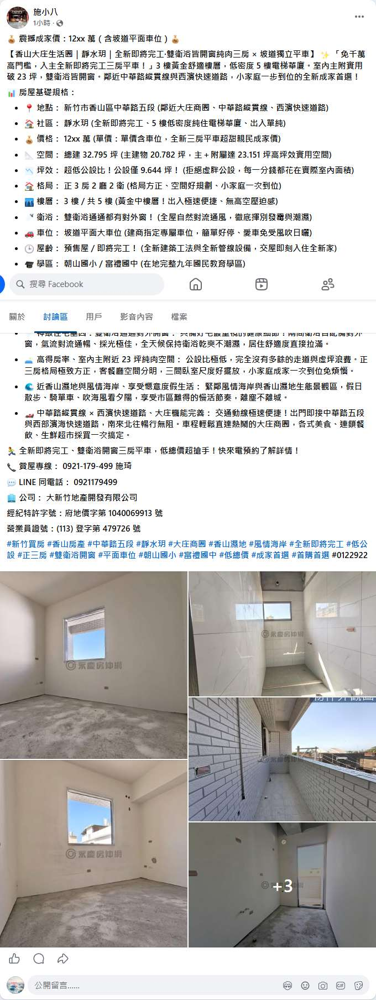 看原始刊登 → 查看貼文原文施小八 5分鐘前 震撼成家價：12xx 萬（含坡道平面車位） 【香山大庄生活圈｜靜水玥｜全新即將完工‧雙衛浴皆開窗純肉三房 × 坡道獨立平車】 「免千萬高門檻，入主全新即將完工三房平車！」3 樓黃金舒適樓層，低密度 5 樓電梯華廈。室內主附實用破 23 坪，雙衛浴皆開窗。鄰近中華路縱貫線與西濱快速道路，小家庭一步到位的全新成家首選！ 房屋基礎規格： 地點： 新竹市香山區中華路五段 (鄰近大庄商圈、中華路縱貫線、西濱快速道路) 社區： 靜水玥 (全新即將完工、5 樓低密度純住電梯華廈、出入單純) 價格： 12xx 萬 (單價：單價含車位，全新三房平車超甜親民成家價) 空間： 總建 32.795 坪 (主建物 20.782 坪，主＋附屬達 23.151 坪高坪效實用空間) 坪效： 超低公設比！公設僅 9.644 坪！ (拒絕虛胖公設，每一分錢都花在實際室內面積) 格局： 正 3 房 2 廳 2 衛 (格局方正、空間好規劃、小家庭一次到位) 樓層： 3 樓 / 共 5 樓 (黃金中樓層！出入極速便捷、無高空壓迫感) 衛浴： 雙衛浴通通都有對外窗！ (全屋自然對流通風，徹底揮別發霉與潮濕) 車位： 坡道平面大車位 (建商指定專屬車位，簡單好停、愛車免受風吹日曬) 屋齡： 預售屋／即將完工！ (全新建築工法與全新管線設備，交屋即刻入住全新家) 學區： 朝山國小 / 富禮國中 (在地完整九年國民教育學區) 為什麼這間非買不可？ 2026 全新竹絕版 12xx 萬買全新三房平車： 在新竹市區中古三房動輒衝破兩千萬的時代，本案總價僅 12xx 萬就能買到「全新即將完工」的標準三房加平面車位！用極具破壞力的親民門檻，無痛擺脫老舊中古屋與高額租金。 神級住宅基因：雙衛浴通通對外開窗： 具備好宅最重視的健康細節！兩間衛浴皆配備對外窗，氣流對流通暢、採光極佳，全天候保持衛浴乾爽不潮濕，居住舒適度直接拉滿。 高得房率、室內主附近 23 坪純肉空間： 公設比極低，完全沒有多餘的走道與虛坪浪費。正三房格局極致方正，客餐廳空間分明，三間臥室尺度好擺放，小家庭成家一次到位免煩惱。 近香山濕地與風情海岸、享受愜意度假生活： 緊鄰風情海岸與香山濕地生態景觀區，假日散步、騎單車、吹海風看夕陽，享受市區難得的慢活節奏，離塵不離城。 中華路縱貫線 × 西濱快速道路、大庄機能完善： 交通動線極速便捷！出門即接中華路五段與西部濱海快速道路，南來北往暢行無阻。車程輕鬆直達熱鬧的大庄商圈，各式美食、連鎖餐飲、生鮮超市採買一次搞定。 全新即將完工、雙衛浴開窗三房平車，低總價超搶手！快來電預約了解詳情！ 賞屋專線： 0921-179-499 施琦 LINE 同電話： 0921179499 公司： 大新竹地產開發有限公司 經紀特許字號：府地價字第 1040069913 號 營業員證號：(113) 登字第 479726 號 #新竹買房 #香山房產 #中華路五段 #靜水玥 #大庄商圈 #香山濕地 #風情海岸 #全新即將完工 #低公設 #正三房 #雙衛浴開窗 #平面車位 #朝山國小 #富禮國中 #低總價 #成家首選 #首購首選 #0122922 +3 公開留言…… 貼文內有 1 個連結（已檢查）
| — HTTP 400 | 3房—廳2衛 完全符合 | 3F | 未註明 | 有 | 有 | 未提及 | FB 貼文 |
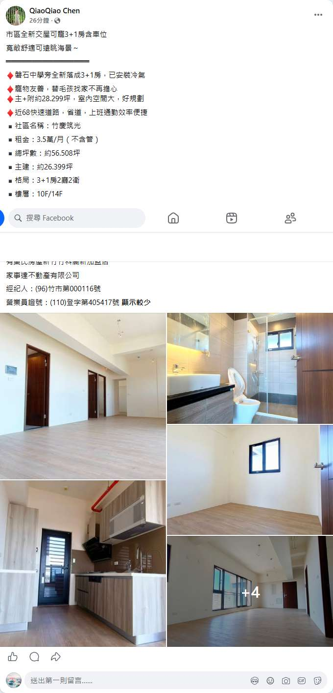 看原始刊登 → 查看貼文原文QiaoQiao Chen 26分鐘前 市區全新交屋可寵3+1房含車位 寬敞舒適可遠眺海景～ ════════════════ 磐石中學旁全新落成3+1房，已安裝冷氣 寵物友善，替毛孩找家不再擔心 主+附約28.299坪，室內空間大，好規劃 近68快速道路，省道，上班通勤效率便捷 社區名稱：竹慶筑光 租金：3.5萬/月（不含管） 總坪數：約56.508坪 主建：約26.399坪 格局：3+1房2廳2衛 樓層：10F/14F 車位：平面車位*1 預約專線及LINE搜尋 0980-721103（陳小姐） ---------------------------------------- 有巢氏房屋新竹竹科關新加盟店 家事達不動產有限公司 經紀人：(96)竹市第000116號 營業員證號：(110)登字第405417號 顯示較少 +4 送出第一則留言…… 貼文內有 1 個連結（已檢查）
| — HTTP 400 | 3房—廳2衛 完全符合 | 10F/14F | 未註明 | 未註明 | 有 | 未提及 | FB 貼文 |
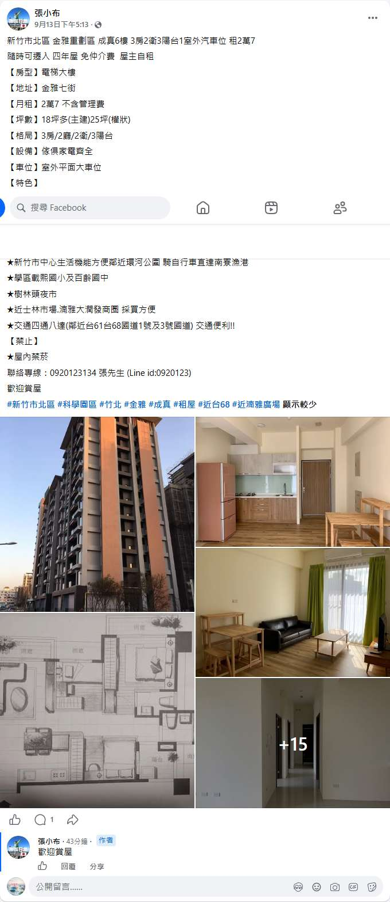 看原始刊登 → 查看貼文原文張小布 新竹市北區 金雅重劃區 成真6樓 3房2衛3陽台1室外汽車位 租2萬7 隨時可遷入 四年屋 免仲介費 屋主自租 【房型】電梯大樓 【地址】金雅七街 【月租】2萬7 不含管理費 【坪數】18坪多(主建)25坪(權狀) 【格局】3房/2廳/2衛/3陽台 【設備】傢俱家電齊全 【車位】室外平面大車位 【特色】 ★新裝潢，每個房間都有窗，衛浴開窗乾濕分離!! ★地下室內機械車位，24HR警衛管理，電梯大樓超方便!! ★一層四戶好單純 【周邊】 ★新竹市中心生活機能方便鄰近環河公園 騎自行車直達南寮漁港 ★學區載熙國小及百齡國中 ★樹林頭夜市 ★近士林市場.湳雅大潤發商圈 採買方便 ★交通四通八達(鄰近台61台68國道1號及3號國道) 交通便利!! 【禁止】 ★屋內禁菸 聯絡專線：0920123134 張先生 (Line id:0920123) 歡迎賞屋 #新竹市北區 #科學園區 #竹北 #金雅 #成真 #租屋 #近台68 #近湳雅廣場 顯示較少 +15 張小布 作者 歡迎賞屋 回覆 公開留言…… 貼文內有 1 個連結（已檢查）
| — HTTP 400 | 3房—廳2衛 完全符合 | 6F | 未註明 | 有 | 有 | 未提及 | FB 貼文 |
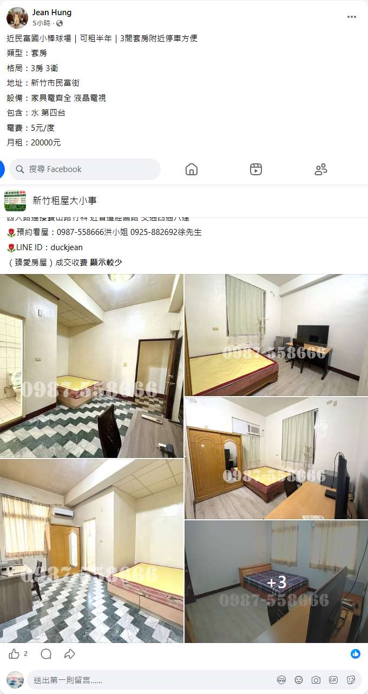 看原始刊登 → 查看貼文原文Jean Hung 大約 1 小時前 近民富國小棒球場｜可租半年｜3間套房附近停車方便 類型：套房 格局：3房 3衛 地址：新竹市民富街 設備：家具電齊全 液晶電視 包含：水 第四台 電費：5元/度 月租：20000元 押金：兩個月 近民富國小 棒球場 大遠百商圈 採光明亮 公用區有洗烘衣機 曬衣區可使用 近停車場 附近停車方便 西大路連接寶山路竹科 近省道經國路 交通四通八達 預約看屋：0987-558666洪小姐 0925-882692徐先生 LINE ID：duckjean （臻愛房屋）成交收費 顯示較少 +3 送出第一則留言…… 貼文內有 1 個連結（已檢查）
| 20,000 HTTP 400 | 3房—廳3衛 超規格 | — | 未註明 | 未註明 | 未註明 | 未提及 | FB 貼文 |
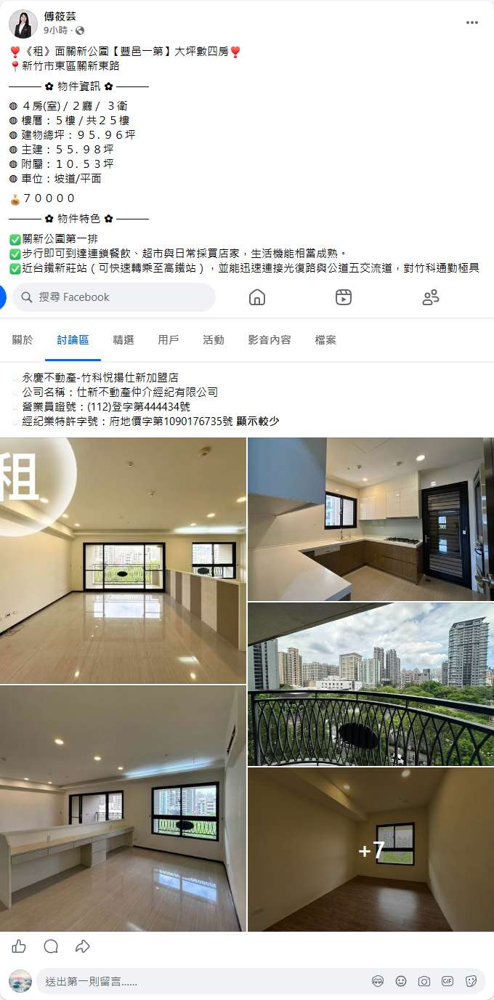 看原始刊登 → 查看貼文原文傅筱芸 《租》面關新公園【豐邑一第】大坪數四房 新竹市東區關新東路 ——— ✿ 物件資訊 ✿ ——— ◍ ４房(室) / ２廳 / ３衛 ◍ 樓層：５樓 / 共２５樓 ◍ 建物總坪：９５. ９６坪 ◍ 主建：５５. ９８坪 ◍ 附屬：１０. ５３坪 ◍ 車位：坡道/平面 ——— ✿ 物件特色 ✿ ——— 關新公園第一排 步行即可到達連鎖餐飲、超市與日常採買店家，生活機能相當成熟。 近台鐵新莊站（可快速轉乘至高鐵站），並能迅速連接光復路與公道五交流道，對竹科通勤極具優勢 ╭┈┈┈┈┈┈┈┈┈┈┈┈┈┈┈┈┈┈╮ 傅筱芸 ０９３０-１９１-５２６ 搜尋手機號碼+ 🅻 🅸 🅽 🅴 索取詳資 ╰┈┈┈┈┈┈┈┈┈┈┈┈┈┈┈┈┈┈╯ 永慶不動產-竹科悅揚仕新加盟店 公司名稱：仕新不動產仲介經紀有限公司 營業員證號：(112)登字第444434號 經紀業特許字號：府地價字第1090176735號 顯示較少 +7 送出第一則留言…… 貼文內有 1 個連結（已檢查）
| — HTTP 400 | 4房—廳3衛 超規格 | 5F | 未註明 | 未註明 | 未註明 | 未提及 | FB 貼文 |
看原始刊登 → 查看貼文原文郭彥綸 你的事業，還在幫房東繳房貸嗎？ 新竹市中心｜70坪以上住店兩用 樓下做生意，樓上過生活！ 大車庫＋旁有公有停車場 創業、自住、工作室，一間搞定！ 室內超過70坪，空間就是競爭力！ 主建物＋附屬建物 超過 70 坪 4 房 3 廳 3.5 衛 大空間好規劃！ 不用再付一筆辦公室租金，也不用每天在工作室與住家之間奔波！ 一樓經營自己的事業，樓上享受一家人的生活。 工作與生活，一個地址就能全部實現！ 新竹市北區延平路一段，正市區精華地段，鄰近大遠百，成熟商圈環繞，食衣住行樣樣便利！ 這間不只是房子，更是能讓你自由規劃未來的多功能空間！ 歡迎正在找大空間、想創業或有住店需求的你，直接預約現場賞屋！ ━━━━━━━━━━━━━━ 賞屋專線｜郭彥綸 0935-020-622 LINE 加好友：手機號碼搜尋 0935-020-622 ════════════════════ ——有巢氏房屋新竹竹科關新加盟店—— ——家事達不動產有限公司—— 經紀人證號 :(96)竹市第000116號 新竹市東區關新路37號 營業員證號：(109)登字第 376815 #新竹買房 #新竹住店 #延平路 #新竹市中心 #大遠百商圈 #住店兩用 #創業空間 #個人工作室 #美業工作室 #雙車庫 #大坪數 #新竹房仲 #郭彥綸 顯示較少 +6 NT$3,688 · 新竹市, 台灣 ️新竹市中心｜70坪以上住店兩用 發訊息 送出第一則留言…… 貼文內有 1 個連結（已檢查）
| — HTTP 400 | 4房3廳5衛 超規格 | — | 未註明 | 未註明 | 未註明 | 未提及 | FB 貼文 |
看原始刊登 → 查看貼文原文曾隨便 大約 1 小時前 市中心黃金收租金雞母！林森路精華 5 房收租宅，高投報首選！ 生活機能超強、出租需求極為穩定，包租公/包租婆的最佳資產配置！ 您在找總價好入手、能帶來穩定被動收入的市中心高投報物件嗎？ 這間位於新竹市北區林森路的華廈，坐落市中心精華地段，食衣住行育樂一次到位，具備極佳的租賃優勢，讓您的資金發揮最高效益！ 【物件核心魅力】 強穩收租：市中心黃金地段，鄰近國泰醫院與商圈，租屋需求極為穩定，買下直接當房東！ 高 CP 值投資：規劃 5 房 5 衛配置，空間好利用，是包租自營或資產配置的絕佳利器。 核心生活圈：坐落林森路生活圈，周邊採買、醫療、餐飲應有盡有，生活機能一級棒。 交通四通八達：鄰近多個公車站點，往返市區各商圈或科學園區皆十分便利。 【物件規格】 開價：16XX 萬 總坪數：約 35.77 坪（主建物 24.8 坪 / 附屬 3.32 坪 / 公設 7.65 坪） 格局：5 房 5 衛 樓層：4 樓 / 共 7 樓 屋齡：約 24.8 年 市中心具備穩定收租效益的物件向來搶手，錯過這間就要再等！ 想尋找抗通膨、穩健收益的置產好標的？趕快與我聯繫了解詳情！ 賞屋專線：0922-177-088 張晏銓 LINE ID：oaoa200420402abc 大家房屋-【加盟】新竹經國加盟店 川騏不動產仲介有限公司 經紀特許字號：(110)苗縣地登字第00025號 營業員證號：(113)登字第 460632 號 #新竹買房 #新竹房仲 #林森路商圈 #市中心收租 #包租公首選 #高投報物件 #收租金雞母 #竹科買房找L +8 公開留言…… 貼文內有 1 個連結（已檢查）
| — HTTP 400 | 5房—廳5衛 超規格 | 4F | 未註明 | 未註明 | 未註明 | 未提及 | FB 貼文 |
看原始刊登 → 查看貼文原文Elva Tseng 大約 1 小時前 出租| 香山 |整棟|全新|美式別墅 社區：竹科莊園 社區型管理：代收包裹信件/垃圾處理/24小時警衛 | 新竹市香山區中華路六段647巷 | 全新別墅-空屋 有基本設備：泠暖氣、熱水器、燈飾、窗簾 新竹科學園區車程15分鐘 竹南科學園區車程5分鐘 租金：3.5萬 （含車位） 管理費：$2,500/月 使用坪數：52坪 車位：前院停車 格局：3房2廳4衛 自然環繞 八米林蔭大道環抱 3700多坪低密度社區，僅104戶 綠意盎然，回家如度假 交通便利 臨近香山交流道 新竹園區15鐘車程 竹南科學園區 5 分鐘車程 輕鬆通勤，生活自在 社區特色 0 公設，空間專屬 美式社區風格，質感典雅 社區寧靜悠閒，舒適宜居 生活機能 未來將有連鎖賣場、便利商店進駐 機能完善，生活無憂 頭份尚順、竹南近在咫尺 18公里海岸線的美麗海景 在這裡，您將擁有大自然的擁抱、美式莊園的氛圍，以及便利的生活品質。 一間與大自然相處會呼吸的家~等您來入主 快來預約參觀，開啟您理想的家園生活！ 賞屋專線：0920-657311 Line：elvatseng35 營業員：曾佳慧(114)年登字第491354號 言昇築不動產仲介有限公司 府地價字第1144210971號 經紀人：管士元（113）北市經證字第01720 +6 送出第一則留言…… 貼文內有 1 個連結（已檢查）
| — HTTP 400 | 3房2廳4衛 超規格 | — | 2500 | 未註明 | 有 | 未提及 | FB 貼文 |
看原始刊登 → 查看貼文原文陳培輔 3小時前 【關埔特區三角窗稀有電梯住店】 物件重點： 建坪：121.38坪 主建物：111.80坪 6房6廳6衛 樓層：1-4樓 物件特色： 竹科大門首座｜稀有電梯店住・樓上正3房格局坪數 竹科大門首座： 緊鄰科學園區，坐擁萬戶高薪工程師家庭，消費力冠絕全台，穩定支撐區域商圈。 明星雙學區房： 位處關埔／龍山指名學區，補習班、診所與各行各業進駐，生活機能成熟，店面需求穩定。 電梯店住雙效： 一樓可做黃金店面，創造事業收益；電梯直達樓上，1樓以上皆為正3房格局坪數，自住舒適、上下樓便利，真正做到「一樓賺錢、樓上成家」。 正3房・住店合一： 樓上完整正3房坪數配置，不只是店面，更是一戶兼具「事業＋家庭＋資產」功能的稀有電梯店住，進可攻、退可守。 極高抗跌保值： 關埔特區店面釋出量極低，精華商圈＋稀有店住產品，土地與店面價值兼具，適合自用、置產，更是傳家型資產。 高投報金雞母： 不論自用省租金、店面自營，或規劃出租收租，皆能靈活運用；一樓商業價值＋樓上正3房居住價值，資產配置一次到位。 稀有「電梯＋店面＋正3房」店住產品，錯過難再遇！ 預約賞屋：0903-019-305 陳先生 永義房屋-富程加盟店 營業員證照：(111)登字第421980號 好房不等人，歡迎預約賞屋 顯示較少 +5 送出第一則留言…… 貼文內有 1 個連結（已檢查）
| — HTTP 400 | 6房6廳6衛 超規格 | 4F | 未註明 | 有 | 未註明 | 未提及 | FB 貼文 |
看原始刊登 → 查看貼文原文胡治豪 大約 1 小時前 ～豪棒好房推薦～ 北新公園邊間大地坪８房８衛大透天 【大家庭首選】 地坪：約40坪 建坪：約107坪 8房｜2廳｜8衛 最大特色：每間房間皆為獨立套房 物件特色 一屋八套，稀有格局 全棟規劃 8 間獨立套房，每間房都有自己的衛浴，居住隱私性高，無論自住、大家庭、多人合住或出租使用，都相當合適。 大家庭也適合 8 房 2 廳的空間配置，除了房間數充足之外，也保有客廳等公共活動空間，可滿足三代同堂或大家庭的居住需求。 8 房 8 衛，生活超便利 每間房皆有獨立衛浴，不必與其他房客或家人共用浴室，大幅提升生活品質與居住便利性。 40 坪土地＋107 坪建物 土地與建物坪數充足，整棟空間完整，具有高度使用彈性，可依自身需求規劃居住、出租或置產用途；邊間條件更讓通風與採光表現加分。 適合這樣的買方 三代同堂、大家庭自住 有多人居住需求的買方 想兼顧「自住＋收租」的置產族 預約看屋專線：0917-898-976 胡治豪 LINE：motosugi0402 關於我們 台慶景觀仲合加盟店 營業員：胡治豪 (112)登字第451346號 經紀人：李糧伊 (107)竹市地經字第00237號 經紀業者：仲合不動產仲介經紀有限公司 經紀業特許字號 : 府第價字號0950035692號 ________________________________________ 備註 • 實際坪數以權狀登記為準。 • 歡迎委託買賣、免費房市諮詢！ 夢想成家，就從這一間開始！ 顯示較少 +6 NT$44,880,000 · 新竹市, 台灣 北新公園邊間大地坪8房8衛大透天 發訊息 送出第一則留言…… 貼文內有 1 個連結（已檢查）
| — HTTP 400 | 8房—廳8衛 超規格 | — | 未註明 | 未註明 | 未註明 | 未提及 | FB 貼文 |
看原始刊登 → 查看貼文原文Shu-Wen Hu 【海島咖啡廳風格共享公寓】 位於生活機能優良之學區，10分鐘進科學園區。 近培英國中、新竹高中，巷口即7-11，走路可到全聯、寶雅、麥當勞，周邊餐廳小吃店眾多。 已將空間重新整理，一卡皮箱安心入住，讓回家就像度假而兼具家的溫暖。 期待找到能一起分享生活還有入住體驗的室友。 ⠀⠀⠀⠀⠀⠀⠀⠀⠀⠀⠀⠀⠀⠀⠀⠀⠀⠀⠀⠀⠀⠀⠀⠀⠀⠀⠀⠀ 【A房】活力房，9500元 【B房】創意房，9500元 (已出租) 【C房】溫馨房，9200元 ⠀⠀⠀⠀⠀⠀⠀⠀⠀⠀⠀⠀⠀⠀⠀⠀⠀⠀⠀⠀⠀⠀⠀⠀⠀⠀⠀⠀ 地址：新竹市學府路 樓層：公寓4樓 格局：3+1房1衛 整層住家/雅房 開伙：可 寵物：謝絕寵物 租期：最短一年 ⠀⠀⠀⠀⠀⠀⠀⠀⠀⠀⠀⠀⠀⠀⠀⠀⠀⠀⠀⠀⠀⠀⠀⠀⠀⠀⠀⠀ 設備：沙發、電視、洗衣機、咖啡吧檯桌椅組、舒服地墊、床架＆床墊、書桌椅、冰箱、熱水器、冷氣、天然瓦斯 ⠀⠀⠀⠀⠀⠀⠀⠀⠀⠀⠀⠀⠀⠀⠀⠀⠀⠀⠀⠀⠀⠀⠀⠀⠀⠀⠀⠀ 特色：獨家設計用心打造舒適空間，一卡皮箱即可入住，巷口即7-11，步行全聯、寶雅、麥當勞，左擁濕地公園右擁十八尖山，自然環境佳，近健身房運動好方便。 ⠀⠀⠀⠀⠀⠀⠀⠀⠀⠀⠀⠀⠀⠀⠀⠀⠀⠀⠀⠀⠀⠀⠀⠀⠀⠀⠀⠀ 注意事項：希望能找到喜歡共居生活，彼此都能認同共享公寓理念的室友，在嚴選把關室友的同時了解彼此，也請室友們遵守基本生活公約。(詳情請來電或來訊，後續會傳相關資料，需要您的簡單回覆，確定可以接受才簽約) ⠀⠀⠀⠀⠀⠀⠀⠀⠀⠀⠀⠀⠀⠀⠀⠀⠀⠀⠀⠀⠀⠀⠀⠀⠀⠀⠀⠀ 聯絡人：張先生 0973077433 (line同手機) 自租免仲介費 仲介勿擾 顯示較少 +7 Shu-Wen Hu 作者 還有兩間雅房，歡迎私訊詢問哦 回覆 公開留言…… 貼文內有 1 個連結（已檢查）
| 9,500 HTTP 400 | 3房—廳1衛 差一點 | 4F | 未註明 | 未註明 | 未註明 | 未提及 | FB 貼文 |
看原始刊登 → 查看貼文原文楊小隆 25分鐘前 [新竹市南寮4房] " 兩大房/兩小房”｜可租補｜大空間｜ 房東自租“仲介勿擾”】 【房型】 一樓客廳、廚房、廁所、 有後陽台“可洗衣/曬衣” 二樓兩房一衛 三樓兩房一衛 頂樓空間開放式 自由使用無隔間， 可依需求當作書房、 收納空間或休息區。 前有陽台彈性空間！ 租金 30,000元／月 " 含管理費". 有警衛可代收信件/包裹. B1 有垃圾間. 有規定時間丟垃圾， “不用追垃圾車” 近南華國中、南寮漁港 車位： B1 汽車平面車位 x1 & B1 機車位x1 意者可約看房、 隨時可入住 【地點】 新竹市尚濱路62巷... 【租金＆優惠方案】 預繳租金享優惠： 半年繳｜30,000元／月 每月折省1,50元 【家具家電】 ・洗衣機 × 1 / 冷氣 × 3 /熱水器 x 2 其它家具可談。 台電、台水 天然瓦斯 【出租條件】 禁菸 禁寵物 祖先 謝絕八大及非法用途 看房請出示工作識別證或名片， 簡單確認承租身分 房東自租，希望找到生活單純、 工作穩定、愛惜房子的好房客。 有興趣歡迎私訊 請簡單告知「入住人數＋工作／職業＋預計入住時間」，即可預約看房 +9 送出第一則留言…… 貼文內有 1 個連結（已檢查）
| 30,000 HTTP 400 | 4房—廳1衛 差一點 | — | 未註明 | 未註明 | 有 | 未提及 | FB 貼文 此物件未公開電話，請點標題到原網站聯絡 |
看原始刊登 → 查看貼文原文雅雅李 #可貓 #可報稅 #竹科2房 地點：竹科/關新公園/新莊車站/好市多 格局: 2+1房/ 2廳/ 2衛/ 1陽台+1露台 坪數：30坪 樓層: 2/ 總樓層9樓 租金+機械汽車位、機車位管理費=43000 （簽長約誠意者可談） 機車位 : 有一個1F 汽車位：有一個1F機械車位（社區可另租第二個車位） 廁所對外窗：有 禁寵 房屋優勢： 冷氣/2台電視/2組床組/獨立筒/沙發/餐桌椅/洗碗機/明火/抽油煙機/冰箱/專屬大露台/洗衣房洗衣機/浴缸/乾濕分離/衛浴抽風暖風四合一/書房 可直接入住 可公司行號 管理員代收包裹（僅白天） 垃圾集中處理 一層6戶2部電梯 雅雅Yaya 澄新房屋 截圖＋私訊詢問 Line ID：@156hksrf IG ： FB ： 經紀營業員證照字號：(107）登字第333928號 經紀人：王嘉隆（100）北市字第00048號 澄新房屋｜誠心誠意・專業代租 很抱歉，播放此影片時發生問題。 瞭解詳情 很抱歉，播放此影片時發生問題。 瞭解詳情 +4 送出第一則留言…… 貼文內有 4 個連結（已檢查）
| — HTTP 400 | 2房—廳2衛 差一點 | 9F | 43000 | 未註明 | 有 | 未提及 | FB 貼文 此物件未公開電話，請點標題到原網站聯絡 |
看原始刊登 → 查看貼文原文Jim 大約 1 小時前 【 新竹後站南大路商圈 ‧ 20坪超大彈性分租/整層 ‧ 稀有台電獨立計費 】 【 彈性租用方案（整層大2房 or 獨立大套房） ｜ 可自煮獨立廚房瓦斯爐 ｜ 稀有台電帳單直接計費 ｜ 雙衛浴均開窗 ｜ 頂樓洗曬衣空間 】 坐落新竹後站南大路黃金生活圈！竹科工程師、清交師生與單身/雙人同住極致高 C/P 值首選！ 靈活彈性租金方案：整層約 20 坪特大空間只要 $19,000 / 月，或選擇單租前面舒適大套房只要 $9,000 / 月！享超划算台電帳單直接繳費（用多少算多少，夏天省電無負擔）與水費每月固定 $200！位居 3 樓採光極佳，格局方正且通風透氣。全室配置雙衛浴，廁所皆有獨立對外窗！整層租用更享獨立廚房（流理台＋瓦斯爐＋抽油煙機）可自由開火下廚，頂樓設有公共洗衣曬衣空間，生活機能方便又溫馨！ 【 物件基本資訊 】 • 地點：新竹市東區南大路（鄰近新竹後站轉運站、清大南大校區、新竹火車站） • 型態：優質透天/公寓（階梯式無電梯，登高健康運動） • 格局：整層 1 房 2 衛 1 廚（室內約 20 坪超大居住空間） • 樓層：3 樓 / 總樓高 4 樓 • 租金方案： 整層方案：$19,000 / 月（包含 1 房 2 衛 1 廚完整大空間） 前面大套房：$9,000 / 月 • 雜費計費：台電帳單直繳 （費用透明最划算）、水費固定 $200 / 月 • 車位配置：周邊室外機車與汽車均有收費停車場 • 衛浴設備：雙衛浴配備，廁所皆設有獨立對外窗 ，通風乾燥不發霉 • 生活守則：全室嚴禁吸菸 、嚴禁養寵物 【 物件特色與空間亮點 】 • 20 坪超大空間＋彈性租金選擇：可依預算與需求選擇整層大空間（$19,000）或單租前面套房（$9,000），空間寬敞採光明亮，格局方正好規劃。 • 稀有台電帳單計費：非包用電高單價計價，直接依公家台電帳單繳費，夏天冷氣開好開滿不傷荷包！ • 可開火獨立廚房設備：配有流理台、瓦斯爐與抽油煙機 ，下班後輕鬆下廚烹飪健康美食。 • 雙衛浴對外窗＋頂樓洗曬空間：雙廁所皆設有獨立對外窗 ，保持乾爽衛生；頂樓提供專屬洗衣與寬敞曬衣場 。 【 黃金地段與生活機能 】 • 後站生活圈與成熟商圈：下樓即有便利商店，步行或騎車數分鐘可達新竹後站夜市、新竹假日花市，生活採買與美食娛樂一應俱全。 • 竹科清交大極速通勤：鄰近清華大學（南大校區與光復校區）、交通大學、新竹後站轉運站與新竹火車站，前往新竹科學園區（竹科）通勤路程短，擺脫塞車困擾！ 【新竹南大路後站商圈 20 坪大空間彈性分租！可開火廚房＋台電帳單計費＋雙衛浴開窗，熱門搶手釋出，歡迎提早預約看房！】 預約看房 / 諮詢物件請洽：徐先生 (Jim) 電話：0902-003-808 LINE：0902003808 ( ) 澄新房屋 證照字號： • 經紀營業員證照：(114)登字第488876號 • 經紀人：王嘉隆（100）北市字第00048號 #澄新房屋 #新竹租屋 #南大路 #新竹後站 #新竹火車站 #清大南大校區 #新竹科學園區 #可開火 #台電計費 #雙衛浴開窗 #頂樓曬衣場 #彈性分租 +4 送出第一則留言…… 貼文內有 2 個連結（已檢查）
| — HTTP 400 | 2房—廳2衛 差一點 | 3F | 未註明 | 無 | 未註明 | 未提及 | FB 貼文 |
看原始刊登 → 查看貼文原文施小八 3分鐘前 震撼成家價：12xx 萬（含 B1 平面車位） 【湳雅大全聯商圈｜工研巧筑2｜黃金 6 樓大面採光戶‧雙衛浴開窗 × 電梯口旁 B1 頂級平車】 「千萬級預算，入主湳雅核心頂客神級兩房！」6 樓次頂樓絕佳視野，大三房魔術改大兩房，室內主附近 25 坪超大空間。單層僅兩戶、全室全新粉刷，極稀有雙衛浴皆開窗，小資首購的最強救星！ 房屋基礎規格： 地點： 新竹市北區湳雅街 (湳雅大全聯商圈正核心、近大潤發) 社區： 工研巧筑NO2 (單層僅 2 戶極低梯戶比！出入單純、警衛代收、垃圾集中) 價格： 12xx 萬 (單價：單價含車位，湳雅核心商圈破壞市場行情超甜價) 空間： 總建 37.979 坪 (主建物 21.526 坪，主＋附屬高達 24.23 坪) 格局： 2 房 2 廳 2 衛 (經典三房改大兩房！ 格局超方正、配置景觀獨立陽台) 樓層： 6 樓 / 共 7 樓 (次頂樓黃金樓層！無上方噪音、大面採光、通風頂級) 衛浴： 雙衛浴通通都有對外窗！ (市面極稀有規畫，全屋乾爽、徹底告別潮濕) 車位： B1 坡道平面車位 (編號 07，黃金 B1 層、直接位於電梯口旁！ 倒車秒進家門) 屋況： 全室全新油漆粉刷完畢！ (屋況極致亮麗，現省油漆費、拎包即刻入住) 屋齡： 30.7 年 (結構紮實、持分地坪達 5.356 坪，精華路段超保值) 管理費： 月繳 2000 元 (超低養房成本，同時享有嚴謹代收包裹與物業管理) 學區： 舊社國小、北門國小 / 光華國中 (新竹頂尖明星雙學區環繞) 為什麼這間非買不可？ 湳雅核心絕版 12xx 萬平車大兩房： 在 2026 年新竹精華區新大樓兩房動輒衝破兩千萬的時代，本戶總價僅 12xx 萬，還直接送您黃金 B1 平面車位！用極具親民的總價門檻，無痛擺脫租屋生涯。 三房改大兩房、室內實用近 25 坪： 原本方正的三房格局，精準改裝為高規格大兩房。客廳與主臥空間尺度大幅拉寬，完全沒有任何走道虛坪浪費。不論是科技新貴 WFH、頂客族還是新婚成家，居住感都完勝現代大樓的窄小鳥籠兩房。 神級黃金基因：單層 2 戶 × 雙衛浴皆開窗： 具備百萬名宅才有的稀有規格！單層兩戶出入極致隱私、等電梯免排隊。更難得的是兩間衛浴通通開窗，搭配朝向東北的良好通風，徹底揮別浴室發霉與潮濕痛點。 夢幻 B1 平面車位：電梯口正隔壁： 擁有全社區位置最完美的坡道平面大車位！不僅位於最珍貴的 B1 層免繞圈，位置更直接在電梯口旁。下車走一秒直接進電梯，買菜採買、搬運重物完全不費力。 大全聯 × 大潤發地王級機能、通勤神速： 地理位置無可挑剔！坐落於最成熟的湳雅商圈，下樓步行即達大全聯超市與大潤發，日常採買一應俱全。開車極速串聯 公道五路與 68 快速道路，15 分鐘無痛直通新竹科學園區。 三房改大兩房、衛浴開窗、電梯口平車，僅此一戶！快來電預約現場賞屋！ 賞屋專線： 0921-179-499 施琦 LINE 同電話： 0921179499 公司： 大新竹地產開發有限公司 經紀特許字號：府地價字第 1040069913 號 營業員證號：(113) 登字第 479726 號 #新竹買房 #北區房產 #湳雅街 #工研巧筑 #湳雅商圈 #大潤發 #三改二房 #平面車位 #電梯口車位 #雙衛浴開窗 #公道五 #近68快速道路 #舊社國小 #光華國中 #低總價 #成家首選 #新婚首選 #1667246 +5 送出第一則留言…… 貼文內有 1 個連結（已檢查）
| — HTTP 400 | 2房—廳2衛 差一點 | 6F | 未註明 | 未註明 | 有 | 未提及 | FB 貼文 |
看原始刊登 → 查看貼文原文Lin Nancy 4小時前 悅森朵夫| 兩房兩衛附車位 售1688萬 建物總坪27.806 坪 (含車位 1.34 坪) -主建物 15.996 坪 光復路一段稀有釋出，生活機能一應俱全！ 屋況佳，原始無裝潢。 鄰近靜心湖, 舒新生活,格局方正,採光佳 衛浴皆有對外窗,靜巷華廈,自住出租皆宜 光復路一段南來北往 ,快速方便 稀有釋出，機會難得，誠摯邀請您蒞臨鑑賞，把握機會，成家不是夢！ +line 了解更多 永慶不動產 竹科悅揚仕新加盟店 仕新不動產仲介經紀有限公司 0937-227907 #吳佳修 專案執行協理 證號：（93）登字第042911號 0952-329707 #林曉萍 業務專員 證號：（110）登字第404496號 Line ID: go591 （請輸入@） 經紀業特許字號：府地價字第1090176735 溫馨提醒： ∆物件資料以地政機關核發為準。 ∆學區依當年度教育局劃分為準。 ×此廣告售出或委任到期自動失效，請來電洽詢。 為什麼選擇我們？ 專業團隊，值得信賴。 豐富經驗，成交快速。 貼心服務，客戶至上。 顯示較少 公開留言…… 貼文內有 2 個連結（已檢查）
| — HTTP 400 | 2房—廳2衛 差一點 | — | 未註明 | 未註明 | 有 | 未提及 | FB 貼文 |
看原始刊登 → 查看貼文原文SensibleElephant6519 2小時前 e͏ p͏ o͏ n͏ d͏ s͏ S͏ t͏ o͏ r͏ 9͏ 2͏ 4͏ 6͏ 2͏ f͏ f͏ l͏ 時͏ g͏ l͏ 7͏ f͏ h͏ g͏ t͏ 1͏ 1͏ t͏ 0͏ a͏ 9͏ 4͏ 9͏ 4͏ 8͏ 6͏ 6͏ 0͏ g͏ u͏ t͏ 5͏ 0͏ 0͏ 9͏ l͏ 2͏ 4͏ 9͏ l͏ u͏ ͏ 8͏ 2͏ 9͏ 8͏ 8͏ 5͏ 小͏ 還在苦惱資金沒地方放嗎？ 這間位於新竹市中心林森路的滿租效益物件， **月收租約 2.95 萬、投報率高達 3.5%**， 入手即刻穩定領配息！ 【物件必買亮點】 【穩定收租 × 高投報率】 月收租約 2.95 萬元，年收租近 35.4 萬！ **投報率約 3.5%**，遠勝銀行定存，對抗通膨的最佳資產配置！ 【黃金地段 × 租客最愛】 位於市中心精華區，遠百商圈、新竹火車站約 3 分鐘即可到達！ 周邊食衣住行育樂樣樣齊全，地段絕佳，出租率超高、幾乎無空窗期！ 【優質屋況 × 省心免整理】 已隔好 3 間優質套房，採用實心牆隔間，隔音效果佳、安全耐用！ 防水工程今年剛做完，免去漏水疑慮與額外修繕成本！ 間間皆有開窗，採光通風超棒，租客一看就喜歡！ 【物件基本資訊】 地點： 新竹市林森路 型態： 6 樓 / 共 6 樓 總建坪： 24.455 坪 主建物： 16.265 坪 格局： 3 房 1 廳 3 衛（已隔 3 套房） 收益： 月收租約 2.95 萬（投報率約 3.5%） 【搶先索取詳細資料 / 預約賞屋】 市中心高投報收租物件稀有釋出，手慢就沒了！ 歡迎立即聯繫～ 賞屋專線 / LINE ID： `0903-268-201` *( FB 私訊常漏訊或被鎖，強烈建議直接加 LINE 或撥打電話聯繫最快速！)* 專業房仲｜胡梅芳 用心幫您把關每一間好房子，助您輕鬆成家與投資！ 連續獲得風雲菁英獎項 多次單月百萬菁英 千萬菁英（110～113 年度） 經紀業資訊 經紀人： 蔡金坤（90）竹市字第000051號 營業員證號：（108）登字第004016號 永義房屋竹科金山立社加盟店（立社不動產有限公司） 發文時間: 10/14 07:26 +3 公開留言…… 貼文內有 1 個連結（已檢查）
| — HTTP 400 | 3房1廳3衛 差一點 | 6F | 未註明 | 未註明 | 未註明 | 未提及 | FB 貼文 |
看原始刊登 → 查看貼文原文黃仁德 大約 1 小時前 n͏ e͏ o͏ o͏ p͏ d͏ r͏ t͏ S͏ s͏ 2͏ l͏ c͏ 5͏ u͏ 4͏ 6͏ l͏ 7͏ 1͏ 6͏ 6͏ l͏ m͏ 5͏ u͏ 9͏ 0͏ a͏ g͏ 2͏ 1͏ 0͏ 3͏ l͏ 3͏ g͏ 2͏ u͏ 8͏ 7͏ 4͏ i͏ a͏ 1͏ m͏ l͏ t͏ m͏ 時͏ g͏ 8͏ 7͏ 8͏ ͏ 小͏ a͏ u͏ h͏ g͏ 【出售文】 【案名】：降價好房~新竹建功學區仁風國宅投資超划算美三房 【地點】：新竹市建功二路 【類型】：公寓 【坪數】：建: 22.6坪 【格局】：3房2廳1衛 【樓層】：3樓 【屋齡】：47.2年 【特色】： 建功商圈機能成熟完善，都更門票 寬敞後陽台，可種花草植物或打造休憩區 出租不怕沒租客，自用輕鬆成家 ------------------------------------------------ 預約 【賞屋/委託/諮詢】專線 賞屋專線：0916-239-625 黃仁德 賞屋專線：0916-239-625 黃仁德 賞屋專線：0916-239-625 黃仁德 LINE ID：an2470dy ------------------------------------------------ 用效率幫你找到好房 用專業幫你談到價格 ------------------------------------------------ 永義不動產-新竹關新正勤加盟店 正勤不動產股份有限公司 經紀業字號: 府地價字第1140195655號 經紀人證號: 蘇仁忠 (094) 竹市字第000096號 營業員證號: 黃仁德 (101) 登字第208227號 ~~~~如委託到期或已售出自動作廢~~~~~~~~ 顯示較少 +4 公開留言…… 貼文內有 1 個連結（已檢查）
| — HTTP 400 | 3房—廳1衛 差一點 | 3F | 未註明 | 未註明 | 未註明 | 未提及 | FB 貼文 |
看原始刊登 → 查看貼文原文Xin Xin 約 1 分鐘前 1588萬 《創遊美人》關埔核心・竹科旁，永久棟距稀有大戶，大視野一次擁有 創遊美人稀有2房2廳2衛大戶型，室內主＋附約22坪，空間比一般2房更寬敞，住起來真正有家的感覺 雙層3米樓高，挑高格局放大空間感，不壓迫搭配邊間採光，明亮通風一次到位 頂樓永久棟距＋開闊景觀，前方視野不受遮蔽，採光、通風、隱私兼具 24H警衛管理，垃圾集中、包裹代收，日常生活省時又便利 竹科通勤超便利，近光復路、關埔生活圈、關新商圈、長春街，吃飯、採買、上班都方便 停車選擇多，鄰近公有停車場，可月租車位，開車族不用為停車傷腦筋 交通機能完整，鄰近新莊車站，竹科通勤、市區生活、外地往返都便利 立即加入Line 好友連結 : (加賴峮誼幫您尋找其他好房) 看屋電話 : 0905-092111 聯絡人 : 林峮誼 (峮峮) LINE ID : cuc55435 台慶不動產-竹北高鐵馥御加盟店 世暘地產事業有限公司 營業員證號:（112）登字第450124號 經紀人證號:（97）竹市字第000030號 送出第一則留言…… 貼文內有 2 個連結（已檢查）
| — HTTP 400 | 2房2廳2衛 差一點 | — | 未註明 | 未註明 | 未註明 | 未提及 | FB 貼文 |
看原始刊登 → 查看貼文原文蔡依紘 大約 1 小時前 【現在不是房價太高，是你還沒開始收租】 想當包租公 包租婆 不一定要有幾千萬！ 一間套房的價格 直接當五間房東 ━━━━━━━━━━━━━━━ 湳雅生活圈｜低總價高投報5套房 新竹市北區水田街 低總價入手 滿租投報率約6.1% 5房0廳5衛 4樓／共5樓 建坪24.551坪 投資亮點 五間套房現成收租 邊間設計，全部房間都有對外窗 採光通風佳，租客超愛 格局方正，好管理、好出租 低總價，小資族也能輕鬆入手 現成現金流，穩定收租最實在 地段才是真正的關鍵 大魯閣商圈 全聯、果菜市場 經國路交通動線便利 生活機能成熟，租屋需求長期穩定。 有些人努力存錢，有些人開始讓房子幫自己賺錢。 現在的你，想當哪一種？ 小資包租公首選 收租型投資人最愛 想打造被動收入必看 ━━━━━━━━━━━━━━━ 賞屋專線｜LINE 電話搜尋 蔡小姐｜0972-887435 吳先生｜0982-191495 專人即刻服務 營業員證號(112)登字第451334號 經紀人證號(97)登字第000028號 鴻磐不動產｜永慶大潤發店 ━━━━━━━━━━━━━━━ #新竹買房 #新竹投資 #包租公 #包租婆 #收租套房 #被動收入 #投資理財 #高投報 #湳雅生活圈 #小資族投資 發文時間: 09/24 12:37 公開留言…… 貼文內有 1 個連結（已檢查）
| — HTTP 400 | 5房0廳5衛 不符 | 4F | 未註明 | 未註明 | 未註明 | 未提及 | FB 貼文 |


目前的條件沒有符合的物件，放寬一點再試試。